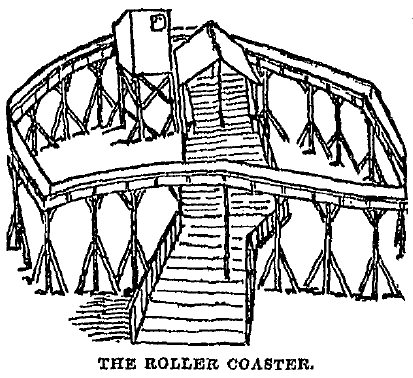

Accounts of Some Early Roller Coasters
This page uses contemporary newspaper accounts to document roller coasters erected before
the end of 1885. In most cases, it is limited to newspapers for which page images have
been digitized and converted to text, making them amenable to online searching. Local
coverage is lacking in these sources for some of these devices.
Accounts of even earlier European examples of gravity rides are found on the
Early European Roller Coaster page.
1870
Holly Grove, Baltimore, Maryland
The Sun (Baltimore, Maryland)
Wednesday, June 15, 1870
[advertisement]
The Maryland Steamboat Company
...
Holly Grove, greatly improved, with bathing houses, new wharf and various new amusements,
for particulars of which the public are referred to the Company's circulars, will be opened Wednesday, June 15th.
The Sun
Friday, July 1, 1870
[advertisement]
Holly Grove.
Fourth of July.
...
A Full Band at the Dancing Pavilion all day, the Inclined Railway, Velocipedes, Swings, Croquet, American Tennis, Boats, Fishing, Bath-Houses, and the spacious and beautiful Grove ...
The Sun
Saturday, June 10, 1871
The resort at Holly Grove, which opens for the season on Monday, has been greatly improved since last season, and every department has been placed in charge of competent persons, whilst the inclined railway, the swings, tennis and croquet grounds have been put in complete repair.
The Sun
Monday, July 3, 1871
[advertisement]
Holly Grove.
Fourth of July, 1871.
...
In addition to the usual attractions at this beautiful and spacious grove which include music all day in the Dancing Pavilion, the inclined railway, swings, flying horses, croquet, velocipedes, tennis, bath-houses, boats, fishing, &c., ...
The Sun
Saturday, July 6, 1872
The swinging garden, the inclined railway, and tennis court received considerable patronage.
Schuetzen Park, Baltimore, Maryland
The Sun (Baltimore, Maryland)
Monday, July 18, 1870
The Approaching Schuetzenfest.
An inclined railway, upwards of six hundred feet in length, is to be constructed, which will afford abundance of amusement to women and children.
The Sun
Monday, August 8, 1870
The Schuetzen Festival
On each day during the festival there will be prize shooting and other amusements for the youth, an inclined railroad, similar to that in use at Holly Grove, under the management of Mr. Taylor, carroussel and swings, and each evening the splendid park will be brilliantly illuminated with a calcium light, and a fine display of fireworks given.
The Sun
Monday, August 8, 1870
[advertisement]
Schuetzen Park
Annual Schuetzen Festival
...
Prize Shooting
And Other Amusements For The Youth.
Inclined Railroad,
Carroussal, Swings, &c.
Grand Calcium Illumination
and Fireworks.
The Sun
Tuesday, August 9, 1870
The Schuetzen Festival.
At the north side of the enclosure an inclined railway, under the management of Mr. Taylor, was well patronized, the cars running full until nightfall. In the same vicinity thirty swings were kept going by the young folks.
The Sun
Tuesday, May 28, 1872
The inclined railway, swings, &c., all contributed to the pleasure of the members and their families.
1872
Rocky Point, Rhode Island
Providence Evening Press
Monday, May 20, 1872
Mr. J. G. Taylor, President of the American Inclined Railroad Company, arrived at the City Hotel yesterday morning. We understand that he has concluded arrangements with the American Steamboat Company for the erection of one of these popular institutions at Rocky Point, and will commence operations with a large force of workmen at once. The public will be anxious to know what Mr. Humphreys intends to do with an inclined railway.
Providence Evening Press
Tuesday, June 18, 1872
Rocky Point.
Rhode Island's Favored Spot.
Grand Improvements for 1872.
...
An Elevated Railway.
Of all the other novelties at Rocky Point this season, the elevated railway will doubtless be the most popular. It is located just west of the buildings just described, between that and the Rock House. Two tracks are laid, each upwards of four hundred feet in length, and a person can make the round trip for the low price of ten cents, the cars running every few minutes. The modus operandi is as follows. You walk up to the passenger station, purchase your ticket, enter the station and take a seat in the handsome car with nine others, if there are that number waiting for a ride. The car is started off by a gentle push, and down it goes the inclined plane, four hundred feet, where it is switched off and comes back upon another track to the other side of the building, where the passengers alight. The ride is one of the most agreeable that can possibly be imagined, and perfectly safe, there being not the least possible chance for an accident. There is not only no unpleasant sensation, but in a hot summer day, one would find it exceedingly refreshing. A picket fence runs on each side of the track to keep outsiders from getting in. One of these railways was run at Holly Grove in Baltimore last summer
by Mr. J. G. Taylor, the patentee, and over 100,000 people rode on it. The American Steamboat Company have bought the right to use it in Rhode Island. ...
Morning Star (Providence, Rhode Island)
Thursday, June 27, 1872
[advertisement]
Rocky Point.
Season of 1872,
Additions and Improvements.
The Favored Spot More Attractive Than Ever Before.
Go And See The Inclined Railway.
Cars Run Every Few Minutes.
...
Providence Evening Press
Wednesday, July 3, 1872
The Pennsylvania Soldier Guests.
... They rode the flying horses, they rolled tenpins, they swung in the patent swings, ... they rode on the inclined railway time and again, they went up in the tower, ...
New York Times
Sunday, August 25, 1872
Rocky Point.
Since the close of last season many improvements have been made, and many new novelties added. ... A new and larger wharf has been built; new bathing-houses and a plank walk leading from then to the water have also been built; an inclined railway, on which all can take a pleasant ride every few minutes, and an elevated and commanding walk ...
Providence Evening Press (Providence, Rhode Island)
Wednesday, June 18, 1873
[advertisement]
Rocky Point!
The Favorite Shore Resort Of New England!
Season of 1873.
Additional Attractions This Year!
...
BOWLING ALLEYS!
FLYING HORSES!
INCLINED RAILWAY!
BATHING HOUSES!
...
Providence Evening Press
Saturday, June 21, 1873
Rocky Point.
Rhode Island's Favored Spot.
Additional Improvements for 1873.
...
The Inclined Railway.
The elevated railway, which is located between the building just mentioned and the Rock
House, proved last season to be one of the most popular of the many popular institutions
upon the ground, and it will be just as popular this season. Two tracks are laid, each
upwards of four hundred feet in length, and a person can make the round trip for the low
price of ten cents. The ride is one of the most agreeable that can be imagined, and
perfectly safe, as was fully illustrated last year, when thousands rode upon the cars
without a single accident.
Newport Daily News (Newport, Rhode Island)
Saturday, July 1, 1876
[advertisement]
Rocky Point!
A Charming Summer Resort.
Situated Midway Between Providence and Newport, R. I.
The Season of 1876
Opens on the First Day of July.
... Flying Horses, run by steam; an Inclined Railway ...
Providence Evening Press
Friday, June 29, 1877
[advertisement]
Rocky Point!
Season Of 1877
Opens June 26!
With all of Its varied attractions, such as Boating, Bathing, Flying Horses, Patent Swings, Inclined Railway, Free Menagerie, Forest Circle Ice Cream Saloon, Bowling Alleys, Beautiful Flower Gardens, Rustic Baskets, etc. etc.
Fitchburg Daily Sentinel (Fitchburg, Massachusetts)
Thursday, August 8, 1878
The party them quietly proceeded over the grounds in a quiet manner, rode on the inclined railway and visited the Colliseum; Misses Hayes and Sherman rode on the flying horses.
[A photographic stereopair of this
"Inclined Railway"
can be found in the collection of the New York Public Library (image G92F021_029F).]
1873
Savin Rock, West Haven, Connecticut
Columbian Register (New Haven, Connecticut)
Saturday, May 24, 1873
The season will soon open the Savin Rock grove, and the hotels and groves on the West Haven shore, to large numbers of pleasure seekers. In Railroad Grove an inclined plane, some five hundred feet in length, is building. Accommodation cars, now making, will be run for a trifle a trip. This arrangement will be a novelty.
Daily Constitution (Middletown, Connecticut)
Thursday, August 15, 1874
A correspondent thus writes up Savin Rock, at West Haven: In the way of amusements the
grove has no equal. There you have Allen's Eagle Museum, particularly a favorite with
the younger population. ... Taylor's patent elevated railway cars, flying horses, patent
swings, and a negro minstrel troupe. ... I forgot to say that the elevated railway carried
over it last year 250,000 persons without the least accident to any one. It is absolutely
safe.
[Several photographs of this ride are found in Bennett W. Dorman, Savin Rock, An Illustrated History. (Photo Restoration & Design, 1998).
Signage in one photo identifies the ride as Taylor's Patent Inclined Railway, July 2nd 1872.
The date is that on which patent
US 128674,
Improvement in Inclined Railways, was issued to John G. Taylor of Baltimore.]
1883
Fairgrounds, Toledo, Ohio
Norwalk Daily Reflector (Norwalk, Ohio)
Friday, September 14, 1883
Tri-State Fair Notes.
...
Fifty accordeons, seventy five hand-organs, three side shows, trained canines, ten swings and a roller coaster, is what breaks the small boy's heart, who has only got twenty-five cents to spend, and don't see how he is going to take in all these and still have left enough to buy two sticks of ice-cream candy and a pop corn ball.
Steuben Republican (Angola, Indiana)
Tuesday, September 18, 1883
The Tri-State fair at Toledo was attended by a few of the people of Butler. The roller coaster was the chief attraction at the fair. This is a small improvement on the old time sport of riding down hill, and trudging up the best way you can. It consists of a railing on a circular incline plane, upon which a long bench like car is placed, and being filled with fifteen or twenty persons is pushed off and it makes the circuit of 600 feet in about twelve seconds attaining a speed of more than a mile a minute.
Toledo Weekly Blade
Thursday, October 4, 1883
The New Amusement--The Roller Coaster--The Cutest Notion and the Greatest Success of the Century.
Several years ago, Mr. Alanson Wood, a mechanic and contractor of Toledo, O., conceived the idea of an appliance for coasting, or as the boys used to call it, "Ridin' down hill," in the Summer time, when snow is not available.
Everybody remembers the old pastime of riding down hill. Everybody remembers the delight of his sled, the sharp steel-shod sled on which he cast himself recklessly on the top of a high hill, ling flat upon his abdomen, steering the vehicle with his toes, and the exhilerating slide down the long steep hill, the track as smooth as glass. Likewise does everybody remember the double sled which would carry two, the boy and his favorite girl, of the rush down the hill so rapid that even to kiss the girl in transit was impossible.
There was nothing in life so exciting as riding down hill. There's the snow, the sled, steel-shod, made as light as consistent with strength and stanchness. There was the start, the slow motion to being with, the rapid flight as the descent became more acute and the law of gravity began to assert itself, there was the anxious look behind for the rival sled, for boys were as proud of their sleds as men now are as to the speed of trotting horses, there was the urging with the toe, for as fast as it was going it could be made by management to go faster, there was the lightning-like descent, the skill in steering so as to keep as near the inside of a curve as possible and lose no inch of length unnecessarily, and when the bottom of the hill was reached and the road stretched off into a long level, there was the anxiety as to how far out upon this level the momentum would carry it. There were great differences in sleds. One sled would make better time down the hill, while another would carry, as you may say, rods farther than the faster one.
The writer hereof, in good old Cortland County, N. Y., was wont, in his boyhood, to enjoy a ride down a straight hill, two and a half miles from top to bottom, with a good half mile of level road at the finish. Clad in sheep's grey, with well tallowed boots, that two miles and a half up-hill was cheerfully walked many a time in the cold, bright moonlight for the sake of the bird-like flight downward. It was this exercise which enabled him in after years to bear the wear and tear of newspaper life, probably.
This was great fun, but it had its drawbacks. The slide down the hill was delightful, but to repeat you must needs walk up the hill again, and it was a question, a very serious one, whether the fun of gliding down the hill compensated for the walking back. As it was rather trying on the stout and stubbed boy, what must it have been for the girl? Her liking for the boy was all that sustained her.
Another drawback to this amusement was, it could only be indulged in when there was snow on the ground, and that in right quantities and conditions.
Mr. Wood, who evidently had been fond of "sliding down hill" when a boy, conceived the idea of making the amusement possible at all times of the year, and of doing away with the tedious dragging one's self up the hill after the exhilerating ride down. It was a very simple thing to conceive, but a very difficult thing to carry out. But he did it.
First, he substituted wheels for runners, and a railroad track for snow. Then he made a car that would hold as many as might be desirable, up to 20, say, with comfortable seats, and under the carriage body he put two trucks, the wheels being flanged the same as railroad wheels. He built a track, 500 feet in length, both ends of which were elevated 21 feet, and he made the descent very rapid for about 200 feet, the grade growing less and less, till finally it became level, then a gradual ascent till it struck the rising grade of the other end, where it was, as at the beginning, 21 feet high.
Now a car running down a grade 21 feet, will, by its own momentum, rise at the other end 17 feet, and were the car loaded and ran down the 21 foot grade it would stop when within 17 feet of the other end, and run back, and then back again, losing a few feet each time, till it would finally stop at the lowest point on the level. Mr. Wood provided for that by putting a man 17 feet from the end, who, when the car reaches that point, gently shoves it up the level summit, and then runs it back again, to be caught in the same way at the other end.
For this ride the proprietor of the Roller Coaster charges a small fee, say two for five cents, or whatever his love of money and the temper of the public will stand.
The Roller Coaster has been the greatest success in the way of amusement that has been before the American public for years. Physicians recommend it as an exhilerant and invigorant, as the following testimonial from the most eminent physicians of Toledo testifies:
Toledo, O., Sept.--1883.
From personal experience and observation we recommend the use of the Roller Coaster, for a large class of invalids, not only as a means of giving a healthful and agreeable recreation, but as furnishing one of the best means of diverting the attention of the individual from morbid feelings and gloomy thoughts.
W. W. Jones, M. D.
C. W. Higgins, M. D.
D. P. Chamberlin, M. D.
W. C. Chapman, M. D.
C. L. Van Pelt, M. D.
J. W. Bond, M. D.
S. F. Forbes, M. D.
Children flock to it by the thousand, and grave men and women renew the amusements of their youth on the rapid car.
It is absolutely safe, no accident can occur, it is very cheap amusement and yet it aggregates very largely for the proprietors. One has been in operation in Toledo all the last Summer and the daily receipts have never been less than from $25 to $100 a day, and during three days of the Tri-State Fair, the enormous sum, for such a business, of $1,200 was realized. Enclosed, it will be in operation all Winter, and will be the merriest place in the City.
Mr. Wood, the inventor and patentee, has given the matter much time, he has worked out the idea faithfully, and has made a complete success of it. We are glad to know that he is realizing all he desires for his invention. The territory for the country is being very rapidly taken, for there has been nothing brought before the public so easily managed that brings such certain results. The right to the Roller Coaster for one Ward in Chicago sold for $1,000, and the same price was obtained for one Ward in St. Louis. From every part of the country enquiries are coming in to him and his partners by the thousands.
It is one of those lucky thoughts well worked out and taken hold of boldly that make men's fortunes.
It affords a cheap pleasure, healthful amusement, not only to grown children but those of larger growth. It is not a mere ephemeral thing, as are so many novelties, as boys and men indulge in coasting on snow now the same as they did an hundred years ago, so the roller-coaster has for its best patrons to-day those who were first to try it. It grows by usage.
The time is very close at hand when it will be in use in every County in the United States, and every Village will have its roller-coaster.
J. A. Cahoon, Toledo, O., will answer all letters of inquiry concerning the new roller-coaster. He desires correspondence from at least one good man in every County in the United States.
Toledo Weekly Blade
Thursday, October 4, 1883
[advertisement]
The Best and Safest Investment Offered
Woods' Patent Roller Coaster.
"Ridin' Down Hill" Without Snow!
This invention of Alanson Wood, of Toledo, Ohio, is now offered to all men who desire a certain, safe and very profitable business. The Roller Coaster is sure of steady and large patronage, and whoever controls any County or City has a certain thing for large money.
The average receipts of the Roller Coaster in Toledo during the Summer of 1883 were from $25 to $100 per day. Only two men are required to manage it. It can be put up anywhere, and operated without trouble.
There is big money in it, as has been demonstrated at over 100 points this Summer in all sorts of places.
For full particulars address
J. A. Cahoon, Toledo, O.
Saint Louis, Missouri
St. Louis Globe-Democrat
Saturday, September 29, 1883
[advertisement]
Roller Coaster
The Roller Coaster is the greatest novel invention of the age, and all should try a ride on it. Coasting on a circle of 500 feet and free from any danger. Only 5 cents a ride. Will open about 3 p.m. to-day, corner Lucas Place and Twentieth street.
St. Louis Post-Dispatch
Saturday, September 29, 1883
Roller Coaster, sliding down hill on wheels. Lucas place and Twentieth street.
...
Roller Coaster--The old fashion sleigh ride. Don't fail to take a ride. Lucas place and 20th.
St. Louis Globe-Democrat
Tuesday, October 9, 1883
[advertisement]
Moonlight rides on the Roller Coaster, Lucas place and Twentieth st. 5c a ride.
St. Louis Post-Dispatch
Thursday, October 18, 1883
[advertisement]
Roller Coaster!!
The Old Fashioned Sleigh-Ride.
Dead Loads of Fun!
Every Afternoon And Evening.
Call And Try It.
Five Cents a ride. Children, 2 rides for 5c.
Lucas Place And 20th.
St. Louis Post-Dispatch
Saturday, October 20, 1883
The roller coaster, at Lucas Place and Twentieth streets, is attracting large crowds day and evening. It is perfectly safe and very amusing.
Chicago, Illinois
Chicago Daily Tribune
Sunday, September 30, 1883
Roller Coasting
A New South Side Amusement
A curious structure is now in the course of construction on the large vacant lot at the southwest corner of State and Twenty-second streets. It will be known as "The Roller Coaster," and the objects claimed for it are health and amusement. The erection is composed almost entirely of lumber, and is built on trestles rising from the ground to a height of twenty-two feet. It is circular in form, the diameter being 140 feet, and the circumference about 430 feet. The width of the track is about 2 feet, on which are lines of iron rails on which six cars will run in sections of two each. They will start from the highest point of the track, and running down will be impelled by their own weight, reaching a velocity that will bring them up the incline to a large platform in the space of eighteen seconds. The sides of the track have enclosed balustrades, as a protection against the cars running off. The charge will be five cents for riding round the circle three times. Each car will accommodate from six to nine persons. The highest point of the "coaster" faces State street, and a flight of stairs from the sidewalk of that thoroughfare will take the public to the platform, where another flight will bring them to the cars. The platform, which is thirteen feet from the level, will have a seating capacity for about 200 persons. The structure is being built by P. M. Stevenson, of Toledo, O., who has already erected two "coasters" in that city, and is going to put up another at New Orleans forthwith. The cost is about $800, and Mr. E. C. Hudson, of Toledo, O., is the manager of them. It is said to be a most exhilarating amusement to ride in one of these cars, and the effect is so exciting and pleasurable that the rider fairly loses himself, forgetting even who he is, where he lives, or what he is doing. The first "coaster" erected was simply an experiment, but instantly proved a great success. The work was begun the 18th inst., and it is expected that the "coaster" will be in complete running order by next Wednesday.
[Patent
US 298710,
Roller Coasting Device, was issued May 13, 1884 to Philo M. Stevens, who listed his
address as Chicago rather than Toledo. The application was filed October 16, 1883.
Ownership of the patent was assigned to the Roller Coaster Company of America, also of
Chicago.]
Chicago Daily Tribune
Friday, October 12, 1883
[classified advertisement]
Roller Coaster,
Cor. Twenty-second and State-sts. Health! Wealth! One hundred dollars' worth of fun for a nickel. A health resort for ladies nervously affected. Come and be happy once more.
J. Cornfield, Manager.
The Inter Ocean (Chicago)
Saturday, November 3, 1883
The Children of the Home for the Friendless will be given a free ride on the roller coaster, State and Twenty-second streets, this afternoon.
Janesville Daily Gazette (Janesville, Wisconsin)
Wednesday, November 7, 1883
The Roller Coasting company of America, with a capital of $1,000,000, and the main office at Chicago, has been licensed to organize by the secretary of state at Springfield.
Chicago Daily Tribune
Wednesday, November 7, 1883
The Roller Coaster Company of America, capital $1,000,000; incorporators, Frank Roehr, Hans Madson, and Frederick Klein.
Chicago Daily Tribune
Tuesday, May 13, 1884
The Council
Ald. Shorey presented a petition of property-owners asking for the suppression of the roller-coaster at Twenty-second street for the reason that it is dangerous and a nuisance. It was referred to the Superintendent of Police and Department of Public Works with power to act.
The Inter Ocean
Tuesday, May 13, 1884
Alderman Shorey presented a petition for the removal of the circular railway or coaster at the corner of State and Twenty-second streets, on the ground that it was a source of danger and was a nuisance, as it gave opportunity for the congregating of boys and girls until late hours at night. Referred to the Chief of Police and Commissioner of Public Works with power to act.
New Orleans, Louisiana
[multiple locations]
Daily Picayune (New Orleans, Louisiana)
Wednesday, November 14, 1883
[advertisement]
Sleigh Ride Without Snow!
The Roller Coaster,
S. W. Corner St. Charles and Josephine sts
Object: Health and Amusement.
Modus Operandi--A coach seating from 15 to 20 persons is started from the highest elevation and rolls with great velocity down the incline and around the circle, making a most exhilarating, health-giving and enjoyable ride.
Daily Picayune (New Orleans, Louisiana)
Tuesday, November 20, 1883
[advertisement]
Sleigh Ride.
Roller Coaster.
Fun. Big Wonder. Good for Health.
Two rides for 5 cents. Open every day except Sundays from 4 P. M. to 10 P. M. Corner St. Charles and Josephine streets.
J. A. Cohoon.
[this ad ran daily through December 7]
Daily Picayune
Saturday, November 24, 1883
Give the Children a Chance.
There have been some complaints against the noise occasioned by the running of the roller coasters. It does not seem to be sufficiently annoying to justify the abolition of this innocent form of amusement. Of course where children play and have fun, shouts and laughter will necessarily supervene; but why not bear with them since they are having such a good time? To rob them of this chance for healthful exercise would be almost cruel. Beside they only wake the echoes in a pleasant way, and after 10 o'clock are off to bed. The roller coaster creates no more disturbance than the city cars on St. Charles Avenue, and runs only about four hours every evening. The residents in that vicinity are asked to reconsider their supposed grievance and let the children have their fun.
Daily Picayune
Saturday, November 24, 1883
The Roller Coaster is giving delight to thousands. Only five cents for two rides.
Daily Picayune
Monday, November 26, 1883
A Crashed Railway.
The Russian Elevated Railway, owned and managed by Mr. John A. Cohoon as a Roller Coasting Rink, occupying the open lot at the corner of Josephine and St. Charles streets, blew down early Monday morning, and is now a total wreck. This railway, a novelty in New Orleans, greatly enjoyed by little folks, was erected at an expense of several thousand dollars, and opened recently as a permanent place of amusement.
Daily Picayune
Friday, December 7, 1883
[advertisement]
Sleigh Ride.
Roller Coaster.
Fun. Big Wonder. Good for Health.
Two rides for 5 cents. Open every day except Sundays from 4 P. M. to 10 P. M. Corner Broad and Canal streets.
J. A. Cohoon.
[the modified ad ran daily through December 27]
Daily Picayune
Thursday, December 20, 1883
Some unknown thief entered the grounds of the Roller Coaster on Canal street during the night and stole a pair of pants valued at $12.
Daily Picayune
Thursday, February 28, 1884
Committee Reports.
By Police Committee--Favorably on the ordinance permitting the construction of a roller coasting edifice on St. Charles, between Delord and Calliope streets, with the recommendation that the Mayor make such restrictions as he may deem necessary.
[This installation is confirmed by text on the 1885 Sanborn map, although the ride structure is not depicted.]
Daily Picayune
Sunday, March 2, 1884
The roller coaster is in operation opposite the Canal street car station.
The Courier-Journal (Louisville, Kentucky)
Wednesday, April 2, 1884
The Cotton Centennial.
This is a place that is never at a loss for amusements, and some enterprising pauper has hit upon a scheme for turning honest pennies and affording people amusement. He has erected in a large lot, on St. Charles avenue, an affair which is termed a roller coaster. It is a wooden structure, and has a track resembling an elevated railroad with the exception that the track curves downward and then sharply upward every few feet. The cars are on wheels and run with amazing rapidity. The principle is that of some physical force, the car is attracted by gravity downward and acquires a certain velocity in descending the steep declivity, and the acquired velocity carries it up on the other side. The trip has a little tinge of danger in it that renders the pleasure very doubtful, and when the feat has become un fair accompli your first feeling is that of intense relief. It has become quite the fashion to make up parties and spend the warm evenings in this manner, but I think that every one enters into the unusual sport with a little uneasiness and are so very much intimidated after their first ride that they can not be induced to attempt it again. To children, and especially boys, it possesses great attractions, and from them it receives the great part of the patronage bestowed upon it. As they shoot down the steep inclines they are all fired with an overpowering desire to shriek, and give vent to it simultaneously, making the place reverberate with their screams. When several have been seriously inured there will be some authoritative stop put to it, I suppose.
Times-Democrat (New Orleans, Louisiana)
Sunday, April 13, 1884
[advertisement]
Roller Coaster!
Large Profits on Small Investments!
For Sale, Patent Rights For
Baton Rouge, Vicksburg, Shreveport, Natchez, Minden, Jackson,
Biloxi.
And Other Towns in Louisiana and Mississippi.
P. O. Box 2027, N. O.
Daily Picayune
Monday, April 28, 1884
At 6 o'clock last evening there was a balloon ascension at the Roller Coaster place, on Canal, near Broad streets.
Chicago Daily Tribune
Friday, January 2, 1885
The World's Fair.
Unpleasant Experiences of a Party of Chicago School-Teachers in the Crescent City.
People Who Desire to See Anything Should Stay Away for at Least a Month Longer.
Southern Courtesy Exhibited in the Street-Cars--A Dismal Day for a Party of Pleasure-Seekers.
New Orleans, La., Dec. 28.--[Special Correspondence.]
...
Then we pass more pieces of bare swamp, more gardens and orchards, more saloons, more miserable frame shanties, until we reach the vicinity of the exposition grounds. Here are a host of forlorn sideshows, with a big panorama building for a centre-piece. Circular railroads, merry-go-rounds, toboggan slides, roller coasters, dime museums, mermaids, and monsters, and freaks, are collected here from all over the country--a regular town of them. Nobody visits them--even the peanut and lemonade-stands have deserted them. Their proprietors seem to have almost given up hope; ...
Oshkosh Daily Northwestern (Oshkosh, Wisconsin)
Wednesday, April 15, 1885
A Lonely Man at the Great Show
[New Orleans Cor. New York Sun.]
Among the saddest looking men in New Orleans is one who wears a blonde beard and an air of rebellious dejection as he goes scooping with interminable rattle and roar over the track of his own roller coaster. The enterprise at this writing is not a popular success. The track pursues its devious way on a circular series of stilts set in a marshy bit of ground near one of the entrances to the exposition. It is precisely similar to the coasters at Coney Island, but it is regarded here by visitors as something coarse, improper and uninteresting. Although huge placards inform the public that two rides can be enjoyed for the small sum of 5 cents, it would appear that the solitary man with the blonde beard is doomed to go tearing around on the track with never a soul for company for the rest of his stay. Natty visitors from the north pass the familiar structure with out a glance, loudly dressed men and women from the upper inland cities look at it uninterestedly, and southern observers see nothing in its din and uproar to attract.
At two minute intervals during the day the solemn man steps upon the car and pushes her off. He has traveled the route so much that the steep descents and sudden swerves have no effect whatever on his equilibrium, and he goes banging, bouncing, and rattling along with unrudied mien. If he happens to be paring his nails or reading a newspaper he goes right on with the occupation while the car is careening wildly about. He never smiles, but all day long through weather that is dismal or damp, as the case may be, he goes on his lonely way.
[The World's Industrial and Cotton Centennial Exposition, held December 16, 1884, to June 1, 1885, in New Orleans, was considered a failure, as was its continuation for a second year. Amusement rides for which a fee was charged were not permitted within the grounds.]
Rochester Democrat and Chronicle (Rochester, New York)
Tuesday, May 19, 1885
Wilson Sprague died at New Orleans on Saturday last. ... He left Rochester about a year and a half ago for Indianapolis, Ind., where he became proprietor of the Occidental hotel. From there he went to New Orleans where he opened a roller-coasting establishment.
San Pedro Park, San Antonio, Texas
Galveston Daily News (Galveston, Texas)
Wednesday, December 26, 1883
San Antonio
Accident--Judge Boone Dead--Suit Filed--Military Matters--Christmas Festivities, Ect.
[Special to the News.]
San Antonio, December 25.--
Christmas was ushered in by midnight mass at San Fernando cathedral. The venerable building was packed, with fully 1500 people outside unable to gain entrance. The day was observed by a general closing of business houses at noon. Jumping, walking and running matches, horse-racing, roller coasting, bird and glass-ball shooting, etc., drew an immense crowd at San Pedro park during the afternoon.
San Antonio Light
Tuesday, January 29, 1884
It Needs Caution.
The roller coasting at the springs is, no doubt, very enjoyable and great fun for the young people, but to lookers on it sometimes has a dangerous look. By the sometimes we mean when more children are allowed to ride on the coaster than should be allowed; some day when the little ones are in the heighth of enjoyment, two or three will be flung out, dashed to the ground and get their necks broken. The proprietor of the coaster should guard against this, either by limiting the number of children riding together at one time, or fixing a board in front, so they cannot be thrown out.
The San Antonio light
Thursday, February 28, 1884
The roller coaster at the Springs, now run by Sulzbacher & Martin is being pretty well patronized.
San Antonio Light
Friday, August 1, 1884
San Pedro Springs.
Ladies Exposition Society Give an Entertainment.
The roller coaster and roundabout were in full operation and amateur marksmen tried their best to show their powers at the shooting gallery by demonstrating how far from the bulls-eye they could get.
San Antonio Light
Tuesday, August 26, 1884
It is said that San Antonio is about to loose the roller coaster at the springs. A gentleman is here negotiating for it to take it to Mexico.
San Antonio Light
Monday, October 13, 1884
Two coaches of the roller coaster at the Springs yesterday afternoon were smashed to pieces, while some little boys were playing with them. The boys were not hurt, of course.
San Antonio Light
Monday, June 1, 1885
A Sunday Out.
Visits to the Resorts of Pleasure.
... the roller coaster gave forth its roar as it conveyed some merry party around the downward curve ...
San Antonio Daily Light
Saturday, May 8, 1886
During the afternoon a great many visitors from the city were present, and enjoyed the scene fully as much as the children, the principal actors in it. The hobby horses, the roller coaster, the swings, the museum, the photograph gallery and the animals in their cages were the principal attractions, and were all called into requisition constantly to afford amusement.
1884
Jacksonville, Florida
Richfield Springs Mercury (Richfield Spring, New York)
Saturday, February 23, 1884
Among the winter sports in Jacksonville is the coaster. It is a high elevated track. The seats, which will hold six or eight persons, are on rollers, and they go down one side so rapidly that the speed carries them up the other. It is great sport for those who enjoy it, but it was too rapid for me.
Mobile, Alabama
Pascagoula Democrat-Star (Pascagoula, Mississippi)
Friday, February 15, 1884
Our Mobile Letter
We have something new and very novel in its sensations here in the way of a roller coaster, which I hardly know how to describe. There is a circle 550 feet around, its highest point being 25 feet from the ground, which is also its starting point. Around this circle is a tram car track, upon which run two benches or seats on small car wheels, which comfortably seat twenty persons. You start down a gentle incline getting steeper and steeper until the climax is reached, when you find yourself at the bottom and like fury ascending the up grade within 50 feet of the starting point, and the distance of 500 feet is made in 14 seconds, without any danger of any kind but losing your hat or breath, and the way the little ones, aye, and the large ones too, enjoy it is pleasant to behold.
Bath Independent (Bath, Maine)
Saturday, March 15, 1884
From the Sunny South.
The Mardi Gras and Roller Sliding.
Mobile, Ala. March, 6 1884.
...
As there is no snow for coasting here there is a roller coasting rink out in the suburbs for the amusement of those who have a nickel to spend that way. This is a great treat; one gets such a long slide and goes so rapidly that there is really no danger if one sits still and in an upright position, which is easy enough except where the motion is very fast.
Memphis, Tennessee
Times Picayune (New Orleans, Louisiana)
Saturday, April 12, 1884
The business of Gen. Peter Tracy in New Orleans, last week, was to secure the roller coaster for Memphis. The Avalanche says the General was successful.
Memphis Daily Appeal
Tuesday, April 15, 1884
--Everybody wants to know what the "Roller Coaster" is. Let us have it by all means, so that all may enjoy a novel sensation in the way of innocent amusement.
Times Picayune
Tuesday, April 15, 1884
Peter Tracy on the Bluff.
Mr. Peter Tracy petitioned the Council yesterday for the use of the Chickasaw Bluff for a "roller coaster." He says: "Your petitioner, Peter Tracy, a citizen of the Taxing district of Shelby county, respectfully asks leave to erect on that part of the unoccupied bluff facing the river, between Monroe street on the north and Union street on the south, what is called and known as a 'roller coaster,' for the period of one year, such as is now in use in New Orleans for some weeks, to the great delight of the inhabitants thereof, especially the youth of that city; and he prays to be exempted from license, and to also have the use of so much of said bluffs as he may need for the said purpose on Sundays from 3 P. M. to 9 P. M., or any other hours after church services, on that day the council may consent to. The roller coaster is a very simple method of amusement, from which persons of all ages derive benefit and enjoyment, and cannot fail to be indorsed by the people here, as has so heartly been by those of New Orleans, La., Jacksonville, Fa., Nashville, Tenn., and Toledo, O., and now also in course of erection at Cincinnati, O."--Memphis Avalanche.
Spirit of the Times (New York)
Saturday, April 26, 1884
Dr Carver is coming, and so is a Roller Coaster, under the management of Gen. Peter Tracey; this gentleman always has an eye for something new to amuse the public.
Memphis Daily Appeal
Thursday, May 1, 1884
--The roller coaster is being put in shape.
Memphis Daily Appeal
Thursday, May 8, 1884
--The roller coaster keeps growing, and is an object of the greatest curiosity.
Memphis Daily Appeal
May 9, 1884
Roller Coaster.
The committee on leasing the bluff to the manager of the roller coaster, reported in favor of renting it at $40 a month. The permit does not authorize the carrying on of the business on Sunday. Adopted.
Memphis Daily Appeal
Wednesday, May 14, 1884
--The "roller coaster" will begin running this afternoon on the bluff.
Memphis Daily Appeal
Thursday, May 15, 1884
--The roller-coaster was not started yesterday on account of the threatening aspect of the weather. The city engineer, Maj. Niles Meriwether, says: "I have examined the construction of the roller-coaster as per your request, and pronounce it a strong and substantial piece of work. It seem well braced at all essential points, and I should deem it entirely safe for the purpose intended."
Memphis Daily Appeal
Friday, May 16, 1884
--The roller coaster was started yesterday, and the wonderful ride around the circle was taken by a large number of persons.
...
--Several thousand people were out on the bluff yesterday enjoying the novel sensation of a ride on the roller coaster. Monday night of each week will hereafter be set apart for colored people.
Memphis Daily Appeal
Tuesday, May 20, 1884
--The "coons" did not patronize the roller coaster very largely last night. The white man will have a monopoly hereafter. There will be no more darky days.
Memphis Daily Appeal
Wednesday, May 21, 1884
Gabe Booker, formerly a river clerk, has charge of the roller-coaster on the bluff.
Memphis Daily Appeal (Memphis, Tennessee)
Saturday, July 5, 1884
--There was a larger crowd at the roller coaster last night than on any previous occasion.
--The manager of the roller coaster has placed a twelve-gallon cooler of ice water on the platform for the benefit of visitors.
...
--A little girl, while riding on the roller coaster last evening, was struck by a stone thrown by a rowdy from the outside. A reward of $10 is offered by the manager for the detection of the scoundrel.
The Watchman and Southron (Sumter, South Carolina)
Tuesday, July 22, 1884
On Friday evening, after forcing our way through the midst of six thousand people, we got a ride of eleven seconds on a roller coaster, which machine I have not time to describe ...
St. Louis Globe-Democrat (St. Louis, Missouri)
Wednesday, August 13, 1884
Stabbed to the Heart.
Special Dispatch to the Globe-Democrat,
Memphis, Tenn., August 12.--About 8:30 o'clock to-night a fight occurred between some white boys and a negro youth on the bluffs just outside of the roller coaster fence.
Memphis Daily Appeal
Monday, September 1, 1884
[advertisement]
The Roller Coaster
Every Evening,
(Except Sunday)
Commencing At 4 O'clock,
Weather permitting. The best people ride every evening. View three miles up and down the river.
A Grand Prospect!
Twenty-five feet above the Bluff.
Spirit of the Times (New York)
Saturday, September 13, 1884
Manager Tracy has found a bonanza in his roller coaster. He is negotiating to erect one at Little Rock, Ark.
Memphis Daily Appeal
Tuesday, September 30, 1884
--The roller coaster season has closed on account of the cool nights and uncertain weather.
Memphis Daily Appeal
Thursday, April 2, 1885
--If the weather continues fine the roller coaster will probably be opened next week with a grand display of fireworks especially ordered for the occasion.
...
--Charlie Fitzsimmons, tried on a writ of habeas corpus in the Criminal Court yesterday for turning the roller coaster loose, was released. Judge Douglass held that the coaster was on public ground, and that it was not a trespass to break into the fence and fool with the car.
Memphis Daily Appeal
Saturday, April 18, 1885
--The roller coaster was started last evening and drew a big crowd, notwithstanding that the opening was not mentioned in the morning papers. It will go again this evening.
Memphis Daily Appeal
Tuesday, June 9, 1885
The Roller Coaster
To be Run During the Season--New Features.
In this very hot weather the bluff is one of the coolest localities about the city. The roller coaster is so located as to catch the breezes from all quarters. The management are presenting stereoscopic views at each entertainment. These are run with electric light, and are composed of interesting pictures, including Cairo, Egypt and the Pyramids, Paris, France, statuary and comic pictures. It is a very cheap entertainment, at a point where one can keep cool while enjoying the show.
Memphis Daily Appeal
Saturday, July 18, 1885
--To-night will wind up the roller-coaster, and a display of fireworks is prepared for the closing. Of course a big crowd will be out. The coaster will be removed next week as early as possible.
Memphis Daily Appeal
Sunday, July 19, 1885
--The roller-coaster slammed with a bang and a blaze of fireworks last night.
[In 1886, Peter Tracy installed a switchback Toboggan east of Estival Park, just outside the Memphis city limits.]
Bremond Square, Houston, Texas
Galveston Daily News (Galveston, Texas)
Sunday, May 11, 1884
Last Day of the Drill
End of a Brilliant Week at Houston
[Special to the News]
Houston, May 10.--
...
The "roller-coaster" on the encampment grounds has been doing a rushing business during the week.
Brenham Weekly Banner (Brenham, Texas)
Thursday, May 15, 1884
A chap had a toy called by him the "roller-coaster" on the encampment grounds at Houston and did a rushing business with it. The machine was something like a sled used by boys in coasting, but was mounted on rollers to run down an inclined plane.
Galveston Daily News (Galveston, Texas)
Friday, October 31, 1884
Bayou City Locals
The roller coaster of Bremond square is being removed; it proved a failure.
Cincinnati, Ohio
[multiple locations]
Cincinnati Commercial Tribune (Cincinnati, Ohio)
Sunday, May 11, 1884
[advertisement]
Highland House
Frank Harff . . . Proprietor
...
Highland House Roller Coaster open every afternoon and evening.
Sleigh ride down hill without snow, a distance of 500 feet, in ten seconds.
Don't Fail To Try It.
Admission free. Two rides for 5c.
Cincinnati Commercial Tribune
Monday, June 16, 1884
The Roller-Coaster.
Phenomenal Success of the New Device at the Highland House.
The attendance at the Highland House yesterday afternoon and evening was enormous. Currier's Band had full houses all day, and the platforms were at all times crowded. The "roller-coaster," which Little Giant [George B.] Kerper can hear thunder by his office-window every thirty seconds when the rush is on, makes music to his ears because it indicates that about eighty cents a minute are flowing into the exchequer of the little firm, of which he is one-half, and which is the fortunate owner of the exclusive right to use the coaster in this country for fifteen years--a right for which they paid only $6,000. Though nearly ten thousand rides have been taken on the coaster every Sunday and holiday, and from one to three thousand on each ordinary day, there seems no abatement of its popularity. The number of tickets sold and rides taken does not, of course, indicate the number of people who have enjoyed the novel and decided sensation, as many ride over and over again, getting "stuck on it," but it is safe to say that nearly a hundred thousand have, and the cry is, "still they come."
Young ladies shout with delight as the coaster plunges around the course, and it is about as great a pleasure to watch them as to ride.
Apropos of the coaster, Mr. Frank Harff is to meet parties in New York to-day, in reference to purchasing the right for Coney Island. If it "catches on" there as it has done here, it means a fortune for its owners.
New York Tribune
Thursday, June 19, 1884
The "roller coaster" is the latest thing out--out in Cincinnati. It will probably get to Coney Island before the season is over.
Cincinnati Commercial Tribune
Sunday, June 29, 1884
[advertisement]
The Highland House Roller Coaster.
Open Every Afternoon and Evening.
Sleighride Down Hill Without Snow.
Big Hill! Big Fun!
Admission Free. Two rides for 5 cents.
Cincinnati Commercial Tribune
Wednesday, July 2, 1884
Roller Coaster Accident.
A Young Man Seriously and Probably Fatally Injured.
Last night a young man named Edward Reinfleisch ... was nearly killed by being thrown from the roller coaster at the Highland House. Reinfleisch was spending the evening at the Highland House in company with several friends.
A ride on the coaster was proposed, and the party shortly after 10 o'clock seated themselves on the coaster and were whirled around the track. The roller went gliding down the first incline all right, but while passing the dip on the last round he was thrown violently from the coaster against the building. ... Reinfleisch is twenty four years of age and single. His friends who were with him in the car when the accident occurred say that all were standing up, he on the rear end, and the swing in going around the last curve threw him off balance, falling against the trestlework and to the ground near Mr. Kerper's office. He has a bad wound on the side of the head and blood was running from his mouth when he was picked up. Had he been sitting on the car, the accident could not have occurred.
The Cincinnati Enquirer
Wednesday, July 2, 1884
Roller-Coaster Accident.
Edward Ransley, aged twenty-four years, living at No. 44 Celestial street, Mount Adams, was thrown from the roller-coaster at the Highland House about 10:45 o'clock last night, and sustained injuries that may prove fatal. Ransley was foolishly standing up during the ride, and on the last grade lost his balance, and was thrown with terrific force against the building just to the right of the track. Patrol No. 2 was summoned, and the injured man removed to his home. Ransley is an employe of Duhme & Co.
Morning Journal and Courier (New Haven, Connecticut)
Thursday, July 3, 1884
But come here. This is the newest thing. The roller coaster. The Russian ice hills made circular and traversed by a car instead of sleds. Thirty feet up these stairs. A car with two settees end to end; sixteen of us sit down, one hand on hat, the other clinging to the seat. Take a long breath and hold on to it. Here we go, plunge No. 1. Now we are on the edge of the rock. Down the second incline with a roar. Railroad speed? That's nothing. No time to think. Plunge No. 3. Whew! The hair [?]. Here we are back again in just sixteen seconds. You let go the breath you have been holding and jump up, glad to be on a slower machine. "Try another round?" "No, thank you." "Didn't you like it?" "Oh, yes; but I've no farther use for it."
Richwood Gazette (Richwood, Union County, Ohio)
Thursday, July 10, 1884
Edward Reinfleisch, single, aged twenty-four years, received what may prove fatal injuries, by being thrown from the roller coaster at the Highland House, Cincinnati, a few nights ago. Reinfleisch, with a number of friends was seated on the coaster and were whirled around the track. The coaster went gliding down the first incline all right, but while passing the dip on the last round he was thrown violently from the coaster against the building. He was picked up in an insensible condition and upon examination was found to be injured internally.
Plattsburgh Sentinel (Plattsburgh, New York)
Friday, July 11, 1884
The "roller coaster," for sliding down hill in the summer time, promises to deal out death as liberally as the frightful "double ripper" does in winter. A young man was nearly killed by one of the new devices in Cincinnati the other night.
Jeffersonville Daily Evening News (Jeffersonville, Indiana)
Sunday, July 27, 1884
Among the numerous attractions at the "Highland" may be mentioned the new patent roller coasters which is a great novelty. The cars run around the place at the rate of 40 miles an hour.
Palladium-Item (Richmond, Indiana)
Wednesday, August 20, 1884
[advertisement]
...
Go down and take a summer sleighride on the Coaster at the Highland House. The most wonderful invention ever on exhibition! Photographs of the Coaster will be all over the city in a few days. See small bills for particulars, and remember August 27. ...
Piqua Morning Call (Piqua, Ohio)
Tuesday, September 23, 1884
The Cincinnati Exposition is in full blast ... besides which visitors can visit the hill tops and Zoological Garden, and have a sleigh-ride in summer on the famous roller coaster at the Highland House.
Cincinnati Commercial Tribune
Sunday, May 24, 1885
[advertisement]
Highland House
...
Highland House Roller Coaster
The Cincinnati Enquirer
Sunday, September 7, 1884
[advertisement]
Bellevue House
D. L. Billigheimer, Proprietor.
...
-also-
Grand Exhibition
Of the Improved Safety
Roller Coaster!
The Cincinnati Enquirer
Monday, September 8, 1884
A Large crowd enjoyed a ride on the new roller-coaster at the Bellevue House yesterday.
The Cincinnati Enquirer
Sunday, April 26, 1885
Bellevue House.
Manager Billigheimer has patented his safety roller coaster, and it works to perfection.
The ride on this roller coaster is really a catapault snow sleigh ride in the spring time of the year. The velocity attained by the Bellevue roller coaster would distance Maud 8 in the first heat, and goes twice as fast at Ten Broeck's best time, and no locomotive has yet been built that travels as fast as this, viz: running at the rate of a mile inside of forty-eight seconds. The varied attractions offered at the Bellevue surpass all other hill-top resorts. The roller coaster is a most healthful recreation.
Cincinnati Commercial Tribune
Sunday, May 10, 1885
[advertisement]
Bellevue House
...
Don't Forget To Ride On The
New Roller Coaster
Making A Mile in 48 Seconds
The Cincinnati Enquirer
Sunday, May 10, 1885
The Highland House management are making elaborate preparations ... Mr. Kerper is full of cables and grips and thing, and keeps one telescopic eye upon Gilbert avenue and t'other on the roller coaster ...
New York Dramatic Mirror
Saturday, May 16, 1885
One of the novelties to be introduced at the Zoo during the Summer will be a roller coaster patterned after the one in use at the Highland House.
The Cincinnati Enquirer
Sunday, May 31, 1885
[advertisement]
Highland House
...
Highland House Roller Coaster
Coasting Afternoon and Evening.
The Inter Ocean (Chicago)
Sunday, June 14, 1885
Cincinnati's chief amusement now lies in a "roller-coaster," which is alleged to go a mile in forty-eight seconds.
Cincinnati Commercial Tribune
Saturday, June 20, 1885
The Bellevue Roller Coaster.
A petition was filed in the Common Pleas by Henry F. Schlueter, H. A. Morrill, Anna M. Morrill, Robert Brown, jr., guardian, George S. Gray and Rudolph Jackson asking for an injunction restraining David L. Billigheimer from operating the cars on the Bellevue House roller coaster except in the afternoon and early evening of week days. ...
Cincinnati Commercial Tribune
Saturday, July 11, 1885
In the Courts.
Is the Bellevue Roller Coaster a Nuisance?
The plaintiffs allege that the "roller coaster" or circular gravity railway, recently constructed on the Bellevue House grounds, is a nuisance ...
Cincinnati Commercial Tribune
Monday, July 13, 1885
Serious Accident.
Ida Hehepohn Struck by the Bellevue House Roller-Coaster and Dangerously Injured.
A frightful accident, whereby a twelve year-old girl may lose her life, occurred at the Bellevue House about 6:30 o'clock last evening. Ida Hehepohn, of No. 17 Jones street, while playing with other children in the vicinity of the roller-coaster, unthinkingly climbed to the track at a point close to the ground, and consequently just behind a declivity by the rapid descent of which the car is impelled on its way. Not noticing the car or truck being started, the unfortunate child remained unconscious of her danger until struck by the rapidly moving coaster. She was knocked down, but strange to say was not killed out-right. She, however, sustained a fracture of the left arm above the elbow, and her lower limbs were badly cut and bruised. She is also probably hurt internally. After receiving the best possible attention on the premises, the injured child was taken to her home.
The Cincinnati Enquirer
Monday, July 13, 1885
Roller Coaster Accident.
About half-past five o'clock yesterday afternoon an accident occurred on the Bellevue House roller coaster by which a little girl name Ida Achterpohl, residing at 17 Jones street, was quite seriously hurt, being bruised and cut about the head and shoulders, and receiving a painful flesh wound on the left arm below the shoulder.
The Cincinnati Enquirer
Tuesday, July 14, 1885
The little girl hurt on the Bellevue roller coaster Sunday was able to be up and dressed yesterday.
New Haven Register (New Haven, Connecticut)
Wednesday, July 15, 1885
Witnesses Broken Down.
They Could Not Describe the Fearful Noise of the "Roller Coaster."
Now that a "roller coaster" is ready to be launched upon the local public at Savin Rock, it is interesting to learn from the Boston Herald that Judge Buchwalter of Cincinnati, has been occupied an entire day with the hearing of testimony in a complaint case against one of them. Henry A. Morill and a number of other property owners and residents in the vicinity of the Bellevue house, in Cincinnati, are the plaintiffs, and David Billigheimer the defendant. The plaintiffs allege that the "roller coaster" or circular gravity railway, recently constructed on the Bellevue house grounds, is a nuisance to the neighborhood, on account of the noise it produces; that it prevents sleep, tortures invalids and nervous people, interrupts conversations, and will depreciate the value of property in that vicinity unless its further operation is enjoined, which the plaintiffs pray the court may be done by a perpetual injunction.
Mr. Billigheimer admits the presence of a roller coaster on the Bellevue grounds. It was constructed at an expense of $4,000 and can be used for no other purpose than that to which it is now applied. It furnishes innocent amusement to a large number of people, and the small fare which is charged is an important source of revenue to him. He alleges that while the track was being constructed some of the plaintiffs talked with him in regard to it, and they all knew what was being erected, but no complaint or protest was made.
The testimony was entertaining. Counsel for the defense tried to keep out statements by the witnesses as to the effect of the noise upon them, but were unsuccessful. The witnesses all broke down in trying to describe the noise of the coaster--it was so unlike any other noise, and strong words were needed to do it justice. With the starting of the car, which at times is every few minutes, there is a loud noise from the friction of the wheels upon the rails, which grows rapidly louder as the car descends, and is reinforced by the screaming of the excited passengers. It was the experience of the witnesses that babies are woke up by the noise, all conversation has to be stopped for the moment, people who are reading or otherwise engaged have their attention diverted, the sick and nervous people are greatly annoyed, and distressing fear is continually excited by the screaming of the passengers that the car has left the track and people are being dreadfully hurt.
The Saline County Journal (Salina, Kansas)
Thursday, July 16, 1885
Cincinnati's chief amusement now lies in a "roller-coaster," which is alleged to go a mile in forty-eight seconds.
Galveston Daily News (Galveston, Texas)
Tuesday, July 21, 1885
Buckeye Topics.
What Our Cincinnati Correspondent Has to Tell This Week.
A curious and interesting case is on hearing in the courts here, in which is involved the question of what constitutes a nuisance. On the hill-top resort at the Bellevue house the proprietor has put up a roller-coaster, in which passengers are wheeled over a tramway in a roller car at a breath-taking speed. Citizens living on Ohio avenue, near which the coaster has been erected, have applied to the courts to have it abated as a nuisance. The testimony of the plaintiffs has been voluminous. Most of the witnesses are refined women. Their evidence was that the noise was shocking, and that the screams of the women passengers were constantly suggestive of people suffering great bodily pain or mental anguish. It was in evidence, too, that it was generally harrowing to the nerves and distracting to the mind, and that it greatly interfered with ordinary conversation, and that it waked up and scared babies and prevented grown people from sleeping. On the other hand, it was in evidence that, "yes, the thing does make a noise, to be sure, but then it doesn't disturb us a bit." Counsel for the plaintiffs shadow forth along through the proceeding that their argument will be that neighbors are entitled to protection against a nuisance which is not more than counterbalanced by a compensation in the way of a benefit to the general public. Able counsel are employed on both sides, and they fight the case vigorously.
Cincinnati Commercial Tribune
Sunday, August 30, 1885
Paul Boyton at the Zoo
The gardens are at their best, and the roller-coaster, though opposition to the pony track, is a new and delightful addition to the many attractions at the gardens.
Cincinnati Commercial Tribune
Saturday, September 13, 1885
In fact, the Zoo will undoubtedly be the great attraction to-day for all who seek recreations. The place itself is full of delight in the way of grand views and interesting animals and well worth a Sunday stroll at any time. The pony track and the roller coaster are added, and make the children supremely happy.
Cincinnati Commercial Tribune
Saturday, September 27, 1885
"Zoo" Concert To-Day.
The new roller coaster and pony track furnish fun for the little ones, and the big ones, too.
Central Law Journal (St. Louis)
October 16, 1885
Nuisance. [Noise and Vibration.] A Roller-Coaster or Gravity Railroad Enjoined as a Nuisance.--In Schlueter v. Bellingheimer, it is held by the Common Pleas of Hamilton County, Ohio, in a learned and extended opinion by Buchwalter, J., that where the proprietor of a public resort, located in an otherwise quiet neighborhood, occupied for years by dwellings, introduces extreme features of amusement, as a roller-coaster or gravity railroad, causing unusual noise, and in a substantial degree depriving others, having ordinary sensibilities, of the ordinary comforts of life, such as rest and sleep at night, peace, quiet and rest on Sunday, disturbing family conversation, etc., he creates thereby a private nuisance; that, where the proof is clear, certain, and satisfactory that he has wrongfully done these things, working a serious injury, the court will restrain him from its continuance, without the intervention of a trial by jury; and that the mere fact that the complainants waited until after the roller-coaster was constructed and in operation would not estop them, since they did not know the character and degree of the noise, nor that it would be operated at unreasonable hours and times.
Cincinnati Commercial Tribune
Thursday, December 11, 1885
--The roller coaster case (Henry F. Schluter, H. A. Morrill and others vs. David Billigheimer) has been appealed to the Circuit Court.
Cincinnati Commercial Tribune
Sunday, May 9, 1886
The Zoo.
... while the pony track and the roller coaster are yet perpetual delight.
Galveston, Texas
Galveston Daily News (Galveston, Texas)
Monday, May 26, 1884
Complaints are made that the roller coaster on the beach at the foot of Tremont street has frightened two or three horses attached to vehicles in which were ladies and children.
Galveston Daily News
Sunday, June 22, 1884 (repeated June 25, July 1, July 9)
[classified advertisement]
For Sale Cheap--3/4 interest in the Roller Coaster, situated on Tremont and beach, and patents protect'g same. H.W. Ensign, TelephoneEx.
Galveston Daily News
Tuesday, July 29, 1884 (repeated July 30, August 5, August 7)
[advertisement]
Auction Sale.
We Will Sell At Our Sales-Room, Strand, on Thursday, August 7, at 11 a. m.
The Roller Coaster or Elevated Gravity Railway,
Located at the foot of Tremont street and Beach.
The above comprises about 6000 feet lumber, over one ton railroad iron, and 200 pounds six and seven-inch bolts, and four new cars--all in perfect order. Sale peremptory and for cash.
Lynch & Penland, Auctioneers.
Galveston Daily News
Thursday, September 11, 1884
Skating Rink.
Mr. S. D. Felt, of Jackson, Mich., has leased the ground at present occupied by the roller-coaster from the City Railroad company, and will erect thereon a handsome building, to cost about $4,000, which is to be used as a skating rink. It is contemplated to have the building completed as speedily as possible, and when opened to the public it will doubtless become a very popular resort.
Galveston Daily News
Friday, September 12, 1884
The City Railroad company commenced removing the roller coaster yesterday morning. It was never a success, and has always been an eye-sore.
Coney Island, Gravesend (Brooklyn), New York
Brooklyn Union
Monday, May 26, 1884
Across at Feltman's the two-story carousel stood out for curious gaze, and at the end of the Sea Beach walk a queer structure was noted half built. It is to be a coasting hill, down which people may rush, after the manner of the tobogganing known in Canada.
New York Herald
Monday, June 2, 1884
New buildings are being put up, old ones refitted and all sorts of startling "privalages," as one sign puts it, being established. One of the queerest of these that the island has yet seen was put in operation yesterday. It is a sort of summer coasting hill, except the "hill" is a wooden trough about three feet wide, which forms a circular incline whose circumference is about the extent of two city blocks. Benches on runners fit into a narrow track in this trough, and a half a dozen people seated on one of these benches are whirled around this track at a frightful rate of speed. This new "game" only opened at two o'clock in the afternoon, and by six o'clock, at the moderate rate of five cents for a whirl, the proprietor must have realized about $200. It was the prevailing impression among the onlookers that it was a question of but a very short time when somebody would be killed on the new-fangled amusement.
Brooklyn Union
Monday, June 2, 1884
Coney Island
New devices were in operation to secure small amounts from pleasure-bent people. A "switch-back" railroad on trestle work had enough of danger in it to entice many,
New York Times
Monday, June 9, 1884
Sunday By The Sea-Shore
The Beaches At Coney Island Thronged With Visitors
The only new forms of amusement this year are roller-skating and a species of sliding down hill by means of an inclined railway. The proper method of experimenting with the slide is for the youth to take his girl into the car, which holds eight people, and is allowed to slide down the incline unassisted. Its weight carries it up another incline, whence it is switched over to another track, and the occupants slide back again to the starting place. It proved a very popular pastime, and all afternoon groups of young people were clamoring for an opportunity to get into the car.
New York Sun
Monday, June 9, 1884
Summer On Coney Island
A new amusement this season in the coasting railway. An elevated circular track has been built on posts. One side of the circle is on a level with the ground, but the other side is about twenty feet above the ground. Cars loaded with people start at the highest point, and roll at terrific speed down the incline, around the circle, and are carried by their impetus almost up the other side. The speed is so great as to make one gasp for breath, and children and women often scream with terror. Another elevated railroad, run on a similar plan but in a straight line, has hills which seem almost perpendicular in their descent to the helpless passengers in the car. These railways were crowded all day, and the headlong speed and spice of danger seemed only to whet people's appetites for a ride, though few women cared to ride a second time.
New York Tribune
Monday, June 16, 1884
Coney Island Not Over-Crowded.
... after yelling themselves hoarse on the merry-go-rounds or the new coasting device, they can sit in a close beer hall ...
New York Sun
Monday, June 16, 1884
Shivering On Coney Island.
At West Brighton the reigning attraction was the coasting railways. Men, women, and children, in little cars, darted down one steep incline and, from the impetus acquired, scudded up another, in a manner to frighten the timorous. The sport appears to an ordinary on-looker to be dangerous, but so many patronized it that another railway is in course of construction, and will be finished next week.
New York Herald
Tuesday, June 17, 1884
[advertisement]
Wanted To Lease--Suitable Space On Coney Island, near the Iron Piers, for the erection of a circular railroad or round-about; new invention; space wanted, 100x100 feet. Address Inventor, box 297 Post office.
Brooklyn Eagle
Saturday, June 28, 1884
Yesterday at Coney Island
The merry go rounds, coasting wagons, rocking skips, peddlers and others did a fair business.
Brooklyn Union
Tuesday, July 1, 1884
The "only and original" toboggan hill is being built on the beach at Culver Plaza. It will be finished by the Fourth.
Brooklyn Union
Thursday, July 3, 1884
A Legal Fight Over the Right to Build Coasters
For some days past there has been trouble brewing for those who have erected circular coasters on the Island. The inventors and patentees have made their appearance on the Island and in the United States Courts, and the heretofore supposed royal road to the building of these popular means of amusement is threatened with legal obstructions. These affairs were not thought of until Mr. Andrew D. Culver, who had seen them in New Orleans last winter, spoke of them. They were being put up all over the South by the patentees, Wood & Cahoon; but at Memphis they found their rights infringed, and applied to the courts for redress, which they got. Then the Memphis parties went to Coney Island and put up one of the circular coasters near Mrs. Vanderveer's Bathing Pavilion. In the meantime Messrs. Wood & Cahoon had contracted with the Prospect Park & Coney Island Railroad for some of the latter's ground west of the new pier walk whereon to build a double-track coaster. When they arrived at the Island they again found their rights infringed by the parties whom they had fought in the courts of Memphis. Yesterday they applied to Judge Benedict for an injunction. The decision is expected in a day or two. The double-track coaster, which is being erected on the Culver road property, will be in operation to-morrow. It is being constructed by the inventor himself--Mr. Wood, of Toledo--and will be the only one ever seen in this part of the country with the proper "descents," ''waves" and "hills". These features of a coaster are constructed on scientific principles, and cannot be appreciated by those who have used only those in operation at the Island so far this season. In the centre of the circle will be built a free platform for those who desire to look on, and will be capable of seating 250 people.
[Half-ownership of Alanson Wood's patent
US 291261
was assigned to James A. Cohoon of Toledo.]
Brooklyn Eagle
Saturday, July 5, 1884
General Matters in the Courts
Before Judge Benedict in the United States Court this morning argument on a motion to continue the injunction granted in behalf of Joseph A. Cohoon against C. A. Smith, David Emmerick and Samuel Fisk was heard. The parties are all residents of Toledo, O. Mr. Cohoon, who is the inventor of the circular railroad, one of the latest additions to Coney Island, states that the defendants since the first of June have been using his patent without compensating him. Judge Benedict, after hearing arguments on both sides, granted the injunction.
Brooklyn Eagle
Monday, July 7, 1884
By the Sea
Sunday Visitors at Coney Island and Rockaway
Some enterprising speculator has erected one of the hideous structures known as a "switch back" railroad quite close to the Brighton, and yesterday was doing a profitable trade.
New York Herald
Monday, July 7, 1884
Coney Island's Manifold Amusements
... the gravity railways and merry-go-rounds carried a paying complement of passengers ...
Brooklyn Union
Monday, July 7, 1884
Injunction Against Elevated Circular Railways on Coney Island.
Joseph H. Cahoon, of Toledo, Ohio, has obtained an injunction against a number of parties operating elevated circular railways, or "coasting machines," at Coney Island, restraining them from maintaining or operating same. Plaintiff claims to be the inventor and patentee of elevated circular railroads, and that those in operation at Coney Island are violations of his patent.
Brooklyn Eagle
Tuesday, July 8, 1884
Enjoining a Circular Railroad
Judge Benedict on the Rights of a Coney Island Corporation
An order was filed yesterday in the United States Circuit Court by Judge Benedict in the matter of the application for an injunction restraining C. A. Smith and others from operating a circular railroad on the Vanderveer property at Coney Island. The plaintiff, C. A. Cahoon, who runs a similar railroad near the new iron pier, claims that Smith's road is an infringement of a patent owned by him.
Brooklyn Eagle
Monday, July 14, 1884
At the Sea Shore
The people strolled up and down the beach, patronized the hotels, the wagons, the elevated road, the swings, the gravity roads and all the innumerable catch penny contrivances that especially at the west end of the island seem to spring into existence like mushrooms.
New York Sun
Monday, July 14, 1884
Warm Even on Coney Island
Fully half a dozen switchback railroads were in operation. Two very serious accidents happened on them last week. The cars jumped the track. A woman who was thrown off on Saturday is said to be dying from concussion of the brain. The speed with which the cars whirl around curves is terrific.
Trenton Times (Trenton, New Jersey)
Wednesday, July 16, 1884
A Fat Man's Fun
Exciting Enjoyment at Coney Island for an Alleged Trentonian
...says the New York Morning Journal...
Mr. Oelschmitt came out of the water greatly refreshed, and after gazing at the merry-go-rounds and the canvas curiosities outside of the side shows, his attention became riveted upon the 'coaster.' This is the lately introduced invention which receives its name from the supposed resemblance it bears to a hand sled sliding down a hill. It goes with the velocity of lightning up and down a series of inclined planes, and is the nearest approach to perpetual motion yet discovered. Mr. Oelschmitt was fascinated by it and was soon sitting on the sled between two pretty girls. As the machine ran down the steep incline with a whir, the gentleman from Trenton became alarmed at its great speed and sprang to his feet. The pretty girls screamed with terror and the sled rocked from side to side. Mr. Oelschmitt lost his balance and fell over the railing. Fortunately, he landed in a pile of sand, and after being carried into Paul Bauer's he soon recovered...
Brooklyn Union
Friday, July 18, 1884
Coney Island Events.
Among the new attractions at West Brighton are the little electric railway on the Brighton Pier, and the roller coaster on the beach adjoining. The railway has been well patronized since it started, and its working is being closely watched by a number of business and railroad men.
New York Herald
Monday, July 21, 1884
October in July.
Every device for refreshment and amusement was well patronized, especially the latest novelty, the gravity railroad. There are four of these now in operation. One man expressively calls his "the scooter."
Brooklyn Union
Tuesday, July 22, 1884
The new "coaster" near the New Iron Pier affords a good deal of fun to ladies and children. It has a double track, and when both are in use those who occupy the cars appear to be running races. The consequent excitement is not without its pleasant feature.
New York Sun
Sunday, July 27, 1884
Coasting At Coney Island
A Tumultuous Experience For A Paltry Nickel.
Cholly, Tessie, a Freckled Youth, a Fourth Ward Girl, and a Litterateur Make an Exciting Trip Together--All the Rage.
"Coasting" is the rage at Coney Island this season. It is a noisy, tumultuous, head-long, and exciting sport, which requires neither skill nor muscle. It can be enjoyed in all its intensity for five cents a "coaster." At present there are five "runs" on the island--four at the west end and one alongside the Brighton Beach Hotel. The noise of a coasting run is a sort of blending of the rattle and bang of the elevated railroad system, the clatter of a Broadway stage, the sough of a buffeted fog horn, and the ambitious efforts of a steel-lunged youth on a cracked clarinet.
The effects upon listeners is varied. Small boys are unable to stand still when they first come near a coaster in full blast, and small girls cling to their mothers' skirts and yearn. Lovers giggle and scream, and the proprietor of the coaster gathers in the five-cent pieces by the bushel. To him the snort of the coaster is sweet and joyous music.
The first requisite for the construction of a coaster is a varied and unlimited supply of stilts. The idea of the run was suggested by the immense structures at Montreal, where the Canadians go tobogganing. A trestlework about fifteen feet high, four feet broad, and fifty feet long is erected. It has a railroad on its upper surface. On the two rails run the sledges, which are nothing more nor less than long benches on flanged wheels which fit the track. The track is not level by any means. It is, indeed, quite the reverse. The sledge starts off an at altitude of fifteen or twenty feet, runs a few feet, and then starts on a down grade at the rate of about thirty-five miles an hour. It runs down a short distance and then the track dips at a perceptible curve to the level of the earth, and rises in another curve nearly to the fifteen or twenty foot level again. These curves in the track are something in the form of the letter S laid over on its front. Such was the original coaster at Coney Island. It reaped such a harvest that enterprise and capital began to erect rivals, and now the varieties in the forms of the coasters defy description. Some of them are circular, and make three or four dips before the journey is finished, and a very large one, which has just been erected near the water's edge at West Brighton, has two tracks that run side by side and at devious angles, curves, dips, and courses to a common finish. It is the custom here to start two cars off and once and watch the wild race. The cars start off easily, loaded with Coney Island excursionists, and glide gently along for a few feet. Then there is a yell as the car dips headlong on one of the curves and shoots almost vertically downward. Its momentum carries it up the next incline; it dips again, and gathers enough velocity to carry it slowly up grade until it comes nearly to the station whence it started. The noise is terrific.
The first ride on a coaster is apt to prove a novelty to the youth or maiden who has become blasé in the matter of scups, and whose appetite for merry-go-rounds has become jaded by too frequent indulgence. There are points about the ride that are unusual. It combined the effect of seasickness, imparted by the primeval swing, with the rush of a runaway ice wagon on a down grade; but besides all this there is a feeling of sailing through space which is elsewhere unattainable without the assistance of a balloon.
The writer ascended a steep flight of steps to the platform of the coaster directly in front of Cable's yesterday afternoon. He was moved thereto by a loud-voiced man, who wore a beaver hat very much over his left eye, and discoursed somewhat in the following strain:
"Five cents fur f'teen sickonds of dee-lee-tious joy, gents, is cheap to a paw-pur. Take my advice, and as-cend to the sky fur a flight through the air fur five cents!"
At the top of the stairs was a rotund man, who smiled reassuringly over a barricade of nickels and dimes.
"There ain't a bit o' danger," he said, as though repeating a lesson, as he nonchalantly handed back the change., "the structure is safe--the trip refreshing--turn to your right--thanks."
There were four persons waiting for the car, which was run forward and placed in position by the attendants. A small, freckled boy, with unnecessarily long legs and the usual lavish complement of feet, stood gazing down the precipitous run, while his companions, two young women and a young man, talked excitedly. The young man wore a dainty, juvenile straw hat with a real nice blue ribbon, and low shoes, with polka-dot hose. His attire was in the now familiar Coney Island swell fashion, and he smoked a big cigar.
"Dear me," he said, with excitement; "I'm sure I don't know what on earth will become of us if we go down that terrible place. Ain't you afraid, Tessie?"
"Orful, Cholly," answered Tessie, whose jersey and white skirt made her look very much like three thousand other girls on the beach that day; "but I'm in fur it now, an' it all goes."
The other girl had appealing eyes, plump arms, and a trustful smile. "I wonder will we be killed?" she murmured in the soft accent and quaint vernacular possessed only by hereditary Fourth warders.
The attendant pushed the car into place and hastily stowed the party in. In this instance the car was an ordinary park bench on wheels, running lengthwise. The passengers thus sailed with their right sides foremost.
"Cholly," who had become silent and over-awed, took his seat at the fore, with "Tessie" by his side. She, too, dropped conventionality and clung to the left lapel of his coat, while the freckled boy grabbed Tessie with both arms. The big-eyed girl sat next, with The Sun reporter on the tail end. Both felt isolated. Both were from New York.
The car started slowly, with a creak and a grind, and then rolled rapidly downward, emiting a sound like that of a steam stone crusher. Then it tipped downward suddenly, and the freckled-face boy bounded into his sister's lap, while she seized her escort with a desperate grip. The Fourth ward girl stretched out her hand to grasp the back of the seat. So did the reporter. Their hands met. The girl gasped
"Axcuse---"
"Cert--"
Bang! Down went the car, and the whole line shot forward upon the youth at the forward end. Every one clung and yelled. The car shot ahead like a bullet, and a few seconds later arrived safe and sound near the starting point.
The youth in the dainty hat had swallowed half of his cigar and was gasping for breath, while he held Tessie and the freckled boy in various positions on his lap. Pressing him hard on the left side were the Fourth ward girl and The Sun reporter. They disengaged themselves, and the big-eyed girl gasped:
"I'm much obliged to you, sur, fur the use av yer arm. I'm feared I discommoded you?"
"B-by no means. Will you take another trip?"
"Not this avenin'."
With this she tripped down the stairs and took the arm of a Bowery boy who weighed 200 pounds, and had a jaw that was well thrust forward. His small but expressive eye was fixed aloft on The Sun reporter, who remained where he was for a reasonable time, and then came back to town on the cars.
Brooklyn Eagle
Sunday, July 27, 1884
There are the merry go rounds and the jolly go rounds, with their revolving menageries all saddled and bridled ready for the little folks to come and ride, the boats that sail round and round imitating the roll and plunge of those that rock on the waters outside, the toboggan and the switchback, the many museums with their giants and dwarfs and Albino girls, and armless men and legless women, ...
New York Sun
Monday, July 28, 1884
Coney Island Astonished
They visited all the museums, ate bushels of popcorn, whirled around on the gravity railroads, ate fried sausages, and some few ventured into the surf.
New York Tribune
Monday, July 28, 1884
Sunday Spoiled By Rain
The proprietors of the "coasting hills" reckoned severe colds as the chief part of the day's gains;
Brooklyn Eagle
Monday, August 4, 1884
[classified advertisement]
For Sale--Roller Coaster--At Coney Island; in good working order; can be seen any day running opposite Clarendon Hotel; cheap for cash. Apply to C. A. McCoskery, at Coaster.
Brooklyn Eagle
Friday, August 15, 1884
Yesterday by the Sea
Scenes and Incidents at Coney Island
... took him to one of the switchback railroads, down and up which they rattled at a pace that suggested a danger of which they seemed to take no note.
These mock railroads are largely patronized, although the race is run and the five cents fare gone almost before the passengers get a second breath, and nobody seems to have any apprehension of the consequences of jumping the track while on the descent. This confidence is possibly inspired by the fact that, as has been suggested should be done on railroads of another sort, a director is always on the train; but it is worth noting that neither the tracks nor the car wheels are examined as often as they might be. Standing for an hour by the side of one, it was observable that it was used as often as, say, twice a minute, and each time the car was run on the descending track without the slightest examination of its condition after the journey just ended; and the thought was naturally suggested that if a wheel or axle should break in the furious descent, the car with all on it would probably be hurled through or over the surrounding fence work. On the steam roads they test the wheels at given points but how often do they test them here? One of the men running one of these switchback roads was asked the question, and answered indifferently that they were tested often enough, and if the road wasn't safe he wouldn't go down on it. But if the public could be assured of this fact by witnessing frequent inspections, say of the car after a trip, there would be a more general feeling of security, and consequently more passengers every day; for it is a wild ride and highly exciting.
New York Sun
Sunday, August 17, 1884
A Bowery By The Sea Beach
... Right this way, says a man with twice as much voice, if you want to get two hundred pounds of fun to the square inch--the longest roller coaster on the island. ...
...
Across the main road there is more excitement than ever. ... Here are four more roller coasters, two of them circular instead of scallop shaped, and one with the added attraction of a fine ocean view and a poetical sign offering all creation a new sensation and exhilaration. ...
Brooklyn Union
Friday, August 22, 1884
Coney Island News.
On one of the "coasters" is the sign, "City and State Rights for Sale." The history of "coaster" building on the Island is already enlivened with one injunction. Those who claim to be patentees built the double track affair on the Culver plaza, and the owners of the smaller coaster near the New Iron Pier are under $3,000 bonds to pay all damages in case the courts decide that the patentee's claim is a valid one.
Brooklyn Eagle
Monday, August 25, 1884
On the Sands
The imitation switch back roads, the carrousels, the dime museums and the thousand and one catch penny schemes in operation were all patronized to their fullest extent.
Brooklyn Eagle
Monday, September 1, 1884
By the Waves
True, the merry go rounds and the switchback roads have done a rushing business, but even the latter wane a little, the excitement gradually wearing off.
New York Sun
Monday, September 1, 1884
... the posts of the circular up-and-down-hill roller coaster ...
Brooklyn Union
Monday, September 1, 1884
On invitation of Mr. A. C. Washington they visited the double track coaster near the new pier.
Frank Leslie's Illustrated Newspaper (New York)
Saturday, September 6, 1884
Photography at Coney Island
Having done the elephant, and the toboggan, and the merry-go-round, and the fat lady ...
Brooklyn Union
Tuesday, October 21, 1884
A Mr. Thompson kept a "coaster" opposite the Sea Beach Palace.
Brooklyn Eagle
Monday, December 8, 1884
Furious Wind
...thirty feet of the fence around the Elephant Hotel was blown to the ground, the fence around the double switchback railroad on the beach, between Bauer's and Feltman's, was torn down...
Elkhart Weekly Review (Elkhart, Indiana)
Thursday, February 5, 1885
We see by a paper from New York, devoted to roller skating, that Mr. L. A. Thompson, of the Coney Island Olympian Club, formerly of Elkhart, has recently been awarded Letters Patent by the Government, covering all the principles involved in the construction of the Roller Coasters situated at Sea Beach by the Sea, Coney Island, in the immediate vicinity of the Club's Palace Rink. He is also engaged in the erection of a rink at Philadelphia. Mr. Thompson constructed one of the Coasters at Coney Island last summer and is said to have made a large amount of money.
New York Herald 1885
Sunday, April 5, 1885
[advertisement]
At Coney Island.
For sale or to let--Several new Cottages; all modern improvements; good location; hotels, restaurants, bar rooms, bathing pavilions; one roller coaster; privileges of all kinds. Thos. C. Abbott, Agent, opposite Sea Beach Palace.
Brooklyn Eagle 1885
Monday, April 6, 1885
The roller coasters on the Sea Beach property will be the only ones on the island this year, so Mr. Thompson, who now controls the patent, says.
New York Evening Telegram
Monday, April 20, 1885
Mr. Thompson, who controls the patent for the roller-coasting track, says the one in front of the Sea Beach Palace will be the only one on the Island this year.
Brooklyn Union
Monday, May 18, 1885
The wild shriek of the toboggan riders rent the air at Coney Island yesterday. At the Sea Beach Railroad and on the shore these machines were filling amusement-seekers with alternate joy and terror, and they were dividing attention with the merry-go-rounds on Culver's Plaza and at Feltman's where people traveled on animals that never found a likeness among beasts of the earth or fowls of the air during any period of evolution.
New York Daily Graphic
Sunday, May 24, 1885
[advertisement]
Don't Fail To Ride on the Coney Island Olympia Club Roller Coasters. 5 cts, round trip. Opposite Sea Beach Palace. Opposite Reeber's Metropolitan.
Ed. J. Eaton.
Brooklyn Union
Monday, July 6, 1885
Crowds At Coney.
The observatory, camera obscura, the caroussel and roller coaster on Culver plaza ...
Brooklyn Eagle 1885
Wednesday, July 15, 1885
The Decline of the Switchback.
Mournful Decadence of a Coney Island Novelty.
The charms of Coney Island seem to be fleeing one by one before the locust of the policeman and languid public patronage. Not the least of the pleasant novelties doing the great exodus act is the switchback. Its reign is drawing to an early close. Coming into life but one short year ago it is departing in sections to Boston and such like provincial towns, where things get so dull in Summer that people actually patronize skating rinks during the heated term and consider it really exciting. True, the switchbacks are not all gone, but they might as well be. They have lost their grip on the populace and bid fair to slide wholly out of general favor as swiftly as they slid in. When the switchback first rattled on the stage of life and Coney Island, it rolled right into business, until the rumbling of its cars vibrated the sandy shore. It was the most picturesquely idiotic of all the picturesque idiocies with which it competed.
Westville Indicator (Westville, Indiana)
Thursday, October 15, 1885
The roller-coasters rumble out toward the sea.
Crystal Palace, London, England
Daily News (London)
Tuesday, June 3, 1884
The Bank Holiday
To the familiar recreations was added an American novelty in the shape of a roller-coaster. The excitement of "coasting" greatly took the fancy of the portion of the British public who patronise the Palace, and although the cost of each ride was fixed at what seemed to be the somewhat prohibitive price of threepence there was an extraordinary demand for the privilege of enjoying the new sensation. The slopes upon which the British experiments at coasting are tried are purely artificial. They consist of a circular wooden staging erected at a considerable height from the ground. The sledges run on rails down the steeply-inclined platform and rise halfway up the other side of the circle. The sensation of the rapid descent is apparently highly amusing to the crowd, and for the time being this novelty seems fairly to eclipse the old-fashioned merry-go-round.
Chelsea Herald (London)
Saturday, August 23, 1884
Crystal Palace Sports Grounds.--The Patent Roller Coaster Company are attracting a vast amount of interest at the Crystal palace in the sports ground, and there is no doubt that what they are pleased to term the Patent Roller Coaster will become very popular if we may judge from the favor it has already received from preliminary trials, and the shareholders may look forward to very good results on their investments, as we have been privileged with the opinions of leading members in the engineering world who pronounce it as being not only ingenious and clever in construction, but commercially speaking sure to take a prominent place in the many inventions which have been introduced to afford enjoyment. We purpose giving a full description at a future date, as it certainly deserves public attention.
Daily News
Wednesday, August 27, 1884
Foresters' Fete at the Crystal Palace.
Boating, dancing, and games on the green, whirligigs, swings, and railway runs on the Roller Coaster continued in full play until dusk.
Chelsea Herald
Saturday, August 30, 1884
[advertisement]
The
Patent Roller Coaster Company,
Limited.
The Latest Novelty!!
Visitors to the Crystal Palace should not fail to travel on the ROLLER COASTER.
Thousands testify as to the enjoyment it affords.
Every information can be obtained from the Secretary, at the Company's Offices, 66, Leadenhall Street, London, E. C.
Chelsea Herald
Saturday, August 30, 1884
Novel Pastime At The Crystal Palace.
SIR, -- I am not an old subscriber, but much about the same, for as soon as I saw your paper I ordered a lot of back numbers.
Amusement is at present my occupation, and I was glad to notice in your last issue the paragraph as to the "Roller Coaster" at the Crystal Palace. To satisfy my curiosity I went there and very much enjoyed the going 'down and up" the inclines, and so did many others. I, being a jolly young bachelor, took a party of young persons round at my own expense -- their parents and guardians not objecting. These excellent people had to pay the next time, and many next times after, for the young persons were clamorous in their expressions of satisfaction.
I noticed one young lady, who I was informed takes rides several times daily and actually screams -- as it were with delight -- when going round the curve. I was only there in what may be called the young people's time, but elder folks seemed to vie with them in their appreciation.
Thanks are due to your journal, as it has been the means of introducing many no doubt to this novel and pleasant recreation. -- Yours,
A Pleasure Seeker.
Chelsea Herald
Saturday, August 30, 1884
The Patent Roller Coaster At The Crystal Palace.
As promised in our last issue we now report more fully on this interesting invention, and may say that not only has it commanded the attention of pleasure seekers, but of the scientific world, and it may be said that in every way it has most satisfactorily fulfilled the sanguine expectations of its inventors and promoters; and so to proceed. "When the north wind doth blow, and there are mountains of snow, what does the Canadian do then?" He makes himself a sort of small sledge, and starting from the top of a snow mountain is carried swiftly down one side, and then deftly round the base and up the other side to a near level of the start with pleasure to themselves and benefit to their health.
Some intelligent American has invented a structure which gives the same exhilirating effects on the nervous system, and the same amount of healthy ozonic inspiration at all times and seasons. It has been established in all the leading towns and cities of Western America and in many of the large cities of Eastern America. We believe Cincinnati and St. Louis rejoice "muchly" in it.
A company has patented this invention in England under the name of "Roller Coaster" -- and they have built one at the Crystal Palace, now in daily operation. It is a structure semi-elliptical, or, rather, oblong, built on supports of which the one portion is raised, so that there is a curved descent on each side.
On these inclines railway rails are laid, and the service is b. a special patent car, as they term it -- which holds about six persons -- there is neither horse, steam, rope, or chain -- progression is made by its own momentum -- its gravity (we were going to write gravitation, but find these things are called, officially, gravity railways.)
You take your seat on the car, and it is started very pleasantly, swiftly it proceeds -- when arriving at or about the curve the sensation is exhilirating, but peculiar. There the car takes up the momentum which carries it up the other incline; it is estimated that just for a short distance it travels at the rate of about fifty or sixty miles an hour.
The "Coaster" has been patronized by all classes. We think a little judicious advertising however, would bring it more before the notice of many, who frequent the Palace and only survey the grounds from the terraces.
The structure has been reported on by an eminent engineer (Mr. Redgrave), who was professionally engaged in construction of important spans in the Health Exhibition. We found that the metals are screwed to longitudinal sleepers laid upon a floor of stout deal planks. We noticed the curves, and, although not engineers, should take it that the curves are carefully plotted, and that the gradients have been accurately laid out.
The "Coaster "was opened on the 1st June -- from that date up to 19th August it has been patronised by over 30,000 (thirty thousand) riders, From what we can gather as to the receipts this is certainly highly remunerative. We doubt if it is within our province to remark about the shares, or whether they are in the market or not -- in fact do not know. But it may be taken generally that all companies are open to negotiations for what they operate in -- by shares, sales, royalties or what not. On this point, however, we make no comment, nor have we sought information, but must say that there can be little doubt that after the favorable opinions expressed by the thousands who have travelled on this strange, but safe and simple "round-about," if we may be pardoned the phrase, there can be no fear as to the results which must accrue to those who were fortunate enough to be original shareholders as they will not only receive good interest, but reap a high premium should they wish to realise; moreover, in the event of any further information being required we are sure that the Secretary, at the chief office, 66, Leadenhall-street; E.C., will give every particular respecting the invention.
Mr. McKean informs us that the company are also running a Coaster at Aston Park, Birmingham, and we can only recommend our readers to inspect and test for themselves, and we are satisfied they will find that the "Roller Coaster" will afford them all the pleasure it is claimed to give.
In conclusion some of this information was from the courteous superintendent, Mr. F. M. McKean, to whom our thanks are due, the other, in ways which are reporters' secrets. Our reporter and investigator guarantees their accuracy, and inasmuch as it has met with the complete approval of the facility, we have no hesitation in recommending our readers to follow and act on the advice given above, and when visiting the Crystal Palace take advantage of the opportunity and make an excursion on this novel American introduction.
Daily News
Tuesday, April 7, 1885
Crystal Palace.
One means of amusement in the park seems, from an aesthetic point of view, rather an abomination than otherwise. It is called a roller coaster, makes a hideous noise, and it is a decided blot on the surrounding pretty scenery. In justice, however, it must be admitted that this machine gave great amusement yesterday to endless crowds of people, though a sober-minded person would think there was more of terror than of fun in rushing like lightning down one incline and then up another by the momentum thus gained.
The Times (London)
Tuesday, August 3, 1886
The Bank Holiday.
After witnessing the ascent of Mr. T. Wright's balloon, the visitors made a general rush towards the Roller Coaster Railway--constructed by the Automatic Railways Company--which did a very brisk trade, as may be evidenced by the fact that the day's takings were over £70. This is a model railway on which cars are propelled down one incline, and, by the impetus thus acquired, are driven up another. The space occupied by this railway is only the size of an ordinary garden lawn. The outlay seemed very little, but still it was certainly the best paying show either in or outside the building.
Lloyds Weekly Newspaper (London)
Sunday, March 25, 1888
[advertisement]
Crystal Palace.
...
Toboggan Slide, Maze, Skating Rink, Aquarium, Roller Coaster Railway, Swings, Roundabouts, Boats on Lake, Rifle Gallery, and countless other outdoor and indoor amusements.
Daily News
Saturday, September 8, 1888
A Collision on the Roller Coaster.--An accident occurred at the Crystal Palace on Thursday evening about six o'clock. Two cars on the "Roller Coaster Railway" came into collision while both were running at full speed. One of the persons employed was badly cut about the head, and a Miss Day, of Willesden-green, was so severely injured that she is not expected to recover. Three others were cut and bruised, but not seriously.
Daily News
Saturday, September 8, 1888
The managers of the Roller Coaster Railway at the Crystal Palace are probably now well aware of the indiscretion of their arrangements for the diversion of holiday-makers. It really seems as though they ought to have foreseen the possibility of such an accident as that by which on Thursday evening five persons were more or less seriously injured, one poor girl having been hurt so badly that her recovery is thought to be doubtful. The railway consists of a single line built in a circle. There is a high platform, from which the cars, laden with passengers, run down one incline and up another. If the proprietors had been content to run only one carriage round this short single line, even in the event of a brake failing to act no mischief would have occurred. The train would merely have slipped backwards, and eventually come to a standstill at the bottom. Thursday evening, however, was a busy time at the Palace, and one car was sent down while the other was going up. The brake of the ascending one failed to act from some cause, and the two vehicles met at the bottom with a terrible crash.
The Guardian (London)
Wednesday, September 12, 1888
At the Crystal Palace on Thursday a serious collision occurred between two cars on the roller coaster railway, which is a simplified form of switchback, but consists of only one decline and a corresponding ascent at the top of the latter, and a number of "stops." Each car has a brake, which is dropped down to prevent the car running back down the line, which is a single one, and it would appear that either the carman forgot to use the brake or that the "stops" were defective, for a fully loaded carriage returned and met another when both were at full speed in the valley of the track. Miss Day, of Willesden-green, was killed on the spot, one of the employes was fearfully cut about the head, and three others were cut and bruised.
Lloyds Weekly Newspaper
Sunday, April 21, 1889
[advertisement]
Crystal Palace--Easter Monday
Marine Aquarium (free); Museum (free); Victoria Cross Pictures (free); Switchback and Roller Coaster Railways, Toboggan Slide, Skating Rink, Rowing Boats and Canoes on Lower Lake, Archery, Bicycles and Tricycles, Swimming Bath, Diving Pavilion, Maze, Gymnasium, Swings, Roundabouts, Rifle Gallery, Grand Panorama of Battle of Tel-el-Kebir, View of Pompeii, &c., &c.
The Echo (London)
Tuesday, May 27, 1890
The Bank Holiday.
The switchback, the toboggan slide, and the roller coaster were scarcely able to meet the demands upon them.
Butler County Democrat (Hamilton, Ohio)
Thursday, July 16, 1891
The grounds surrounding it are magnificently laid out with terraces, fountains, mazes, flowers and shrubbery and toboggan slides, flying horses, swings, and roller coasters everywhere. The palace is at Sydenham, about twenty-two miles out of London, and has been moved from its original location and entirely replaced ...
Ponce de Leon Springs, Atlanta, Georgia
Atlanta Constitution
Thursday, June 19, 1884
The Circular Railroad.
Elsewhere will be found the advertisement of the circular railroad at Ponce de Leon springs. The road is owned by the Gate City street railroad company, and will be opened to-morrow afternoon at half-past two o'clock. It is a great invention, and need only to be seen to be appreciated and admired. As the advertisement says, it is healthful, and the convalescent will find in it a truly wonderful friend. Go out to-morrow and take a ride.
Atlanta Constitution
Thursday, June 19, 1884 (repeated June 20, 21, 22)
[advertisement]
The Circular Railroad
--opens--
Thursday Afternoon, June 19th, at 2:30,
--at--
Ponce De Leon Springs.
The Gate City Railroad Company Announces the opening to the public of their new line and marvellous railway novelty, the Circular railroad, at Ponce de Leon Springs. This new mode of travel is intensely attractive, exhilarating and healthful. It pleases every body, the mature as well as the young ones. The ladies and the children are especially fond of it. It is highly recommended to the convalescent and it infuses a new life in the debilitated. It offers the sensations of an aetheraen voyage, and those who rode once on it want to do it always.
Atlanta Constitution
Sunday, June 22, 1884
Some new attraction keeps being added to Ponce de Leon. There is no resort better provided with a pavilion for parties, balls, picnics, lunches, ice creams and amusements. Another attraction is the circular railway. Go out and ride on it.
New York Times
Friday, June 27, 1884
Sliding Up Hill
From the Augusta (Ga.) Chronicle, June 24.
A circular railway has been built at Ponce de Leon Springs. The new railway is a wooden structure forming a circle, being 4 feet wide, 500 feet long, inside of which is laid the track for the cars, and is so graded that the cars run themselves, the highest point above the ground being 22 feet 6 inches, and the lowest point touching the ground. Mr. Wood, at one time a poor carpenter of Toledo, Ohio, is the inventor of the circular railroad, having conceived the idea from witnessing children slide down the hills on their slide-boards, he arguing that if they could slide down hill they could slide up hill, a demonstration of which is witnessed in the circular railway.
[this item was also reprinted in Milwaukee and San Francisco newspapers]
Atlanta Constitution
Tuesday, July 8, 1884
The Circular Road In Court.
The Manager Not Guilty of Violating the City Ordinances.
The circular railroad at Ponce de Leon springs has grown to be the most popular amusement for Sunday accessible to the Atlantese, and the crowds that flock thither on Sabbath afternoons are unprecedented in the annals of the place. The police, however, were instructed to stop the operations of the erratic railway on Sundays, and made a city case against the superintendent, Mr. W. L. Peyton. He was charged with violating section 439 of the city code, which prohibits any merchant, billiard table or ten pins alley keeper, etc., from keeping open on the Sabbath day, or trading and trafficing on that day. Upon the hearing of the case in the recorder's court, Mr. Peyton was fined a nominal amount, and the case taken to the superior court on a writ of certiorari. Two questions were made in the case, viz: that the case was not within the jurisdictional limits of the city, and that, if the act done was an offense, it was an offense of which the state had jurisdiction over and above the city. It was shown that the lines of the city were extended, by the act of February, 1877, so as to embrace Ponce de Leon springs, but the property within the limits of the extension was not made taxable and the act was only passed to give the city police powers over the territory embraced. In the second place an offense of this nature, at the place designated, is cognizable by the state, through the regular criminal procedure, under section 4579 of the code. Judge Hammond so held, and the circular railroad will run free of police interference in the future.
Atlanta Constitution
Wednesday, July 16, 1884
The Circular Railroad
The managers of the Circular railroad at Ponce de Leon Springs have ordered a number of large lights to be placed within and outside the circle, which will brilliantly illuminate the entire grounds. These lights will arrive in a few days, and will prove an additional charm to a place already beautiful. Mr. W. M. Peyton, the gentlemanly manager of the Circular railroad, informed the Constitution that the Gate City street car line will run cars as long at night as the Circular railroad is in operation if it takes till midnight.
Lake Calhoun, Minneapolis, Minnesota
The Northwestern Miller (Minneapolis, Minnesota)
Friday, July 4, 1884
W. L. Klein, manager of the Southern Miller, Nashville, Tenn., came up from the tropics this week to rest a few days in the shade of the north pole. Mr. Klein seemed greatly pleased with the attractions of the Flour City, especially the roller coaster at the Lyndale. He has made a brief estimate of the profits of trade journalism and calculates that at the rate of two rides for a nickel, he can pass the rest of his days in the flying coaster, than which, he believes no existence could be more perfectly happy.
The New North-West (Deer Lodge, Montana)
Friday, August 15, 1884
The Gravity Railway.
Minneapolis Tribune.
In the winter of 1882-3, Alanson Wood, of Toledo, conceived the idea, from seeing the boys coasting on double runners, of an invention by which the same sort of sport might be indulged in summer as well as winter. With this in mind he began the erection of the first roller coaster, a machine 400 feet in circumference (they are now 500 and 22 feet high) and 20 feet high at the highest point. It proved more of a success than he anticipated, the speed gained by the cars on the decline carrying them up the incline, and within a short distance of the point of starting. In July 1883, he applied for a patent, which was granted in January. Before it was issued, J. A. Cahoon, a man of means, purchased the right, Mr. Wood reserving a royalty on rights sold. The first three coasters were built in Toledo, then in St. Louis and all the large Southern cities. Now they are running in nearly every city of any size in the country. The territory is sold by cities or counties and in many cases for large sums. Cincinnati sold for $8,000 and the receipts from one coaster for the first five weeks were $8,750. Four are being operated on Coney Island and all paying large dividends. The first roller coaster erected in this State was built by Louis A. Roth at Lake Calhoun, who purchased the right for Hennepin and Ramsey counties. The one in the rear of the Syndicate Block was next built by the Hennepin county Gravity Railway Company and a third has just been started in St. Paul.
The sport said to be not only pleasing and exciting exercise but one that can be indulged in with perfect safety. The exercise is exhilerating and few grow weary of it.
Minneapolis, Minnesota
St. Paul Daily Globe (St. Paul, Minnesota)
Thursday, June 26, 1884
City Legislation.
Permission was granted Ruth & Whipple to construct and run a "roller coaster" on the vacant portion of the block adjoining the Syndicate, upon the condition that it be not run at late hours.
St. Paul Daily Globe
Tuesday, July 1, 1884
The gravity railroad, or "coaster" as it is denominated, will be ready for operation in about eight days.
St. Paul Daily Globe
Saturday, July 5, 1884
The "coaster" which is being built on the block in the rear of the Syndicate block is creating a deal of opposition. The property owners are making vigorous protests against it.
St. Paul Daily Globe
Sunday, July 13, 1884
The roller coaster in the rear of the Syndicate block will begin operations to-day.
St. Paul Daily Globe
Wednesday, July 16, 1884
The new roller coaster in the rear of the Syndicate block started last night.
Atlantic City, New Jersey
New York Sun
Tuesday, July 15, 1884
There is a circular railway at Atlantic City, with very steep and abrupt grades, so that the passengers experience the ups and downs of travel over the Rocky Mountains condensed into a few rods. It is in the form of an ellipse, reaching from the street down to the surf. "Only five cents for a ride to the beach," says the solicitor. But when the tourist arrives at the shore end of the route he is told that he must pay a nickel more for getting back, or walk through the sand.
[This item was also reprinted in other newspapers.]
St. Paul, Minnesota
St. Paul Daily Globe
Wednesday, July 2, 1884
Ramsey County Gravity Railway Company.
Articles of incorporation were filed with the secretary of state yesterday of the Ramsey County Gravity Railway company to construct, operate and maintain gravity railways in the city of St. Paul and at White Bear lake. The principal place of business is to be at St. Paul and the corporation commences June 28, 1884, for a continuance of fourteen years with a capital stock of $9000 divided into 180 shares of $50 each. The stock is to be paid in installments and the corporation is at no time to incur any indebtedness or liability. The incorporators are Louis A. Roth, Geo. Crawford, C. F. Musgrove, Geo. L. Holt, H. L. Woodburn and A. W. Lebron of Minneapolis who constitute the first board of directors.
St. Paul Daily Globe
Tuesday, July 22, 1884
Phenomenal Success of the New Device.
The Roller Coaster, which is all the rage in the principal eastern cities and fashionable summer resorts, shall have their opening here on Tuesday evening, July 22, with the best band obtainable. The platform and circle shall be lit up with electric lights.
The coaster will certainly be the most attractive place in the city, as the one just started in Minneapolis, and another at Lake Calhoun, are entertaining between 5,000 and 10,000 ladies and gentlemen every evening.
Young ladies shout with delight as the Coaster plunges around the course, and it is a great pleasure to watch them as well as to ride.
The stockholders of the company are business men, and shall see that every one is pleased and that the Coaster is first class in particular. Although the admission on East is twenty-five cents, the directors are going to charge no admission, and will only charge for two rides five cents.
St. Paul Daily Globe
Tuesday, July 22, 1884
Something New Under the Sun.
The roller coaster, corner Thirteenth and Cedar, will commence to roll on Tuesday evening, July 22d.
Admission free: Two rides for five cents
St. Paul Daily Globe
Thursday, July 24, 1884
A Roller Coaster.
Lewis A. Roth and a man named Crawford have had constructed for them on the old ice skating rink grounds, corner of Thirteenth and Cedar streets, what is known as a "roller coaster" or a gravity railway which is provided with four settee cars, on each of which a dozen people can be seated and ride down a circuitous incline railing from point of starting at an elevation of about thirty feet in the air down to the earth and up again to the point of beginning. The novel amusement structure cost $2,100 and its elevated railway, platform approaches and ticket office are generously painted in cream, red and black its spacious waiting platforms furnished with numerous sparkling red colored chairs, and the whole is lighted up with powerful electric lights of evenings. The place was jammed on Tuesday, the opening night, notwithstanding the rain, and the crowd of riders at two trips for five cents, and curious spectators last evening required the presence of a policeman to keep order.
St. Paul Daily Globe
Saturday, July 26, 1884
A curiosity.
St. Paul has now something of a curiosity, and one, too, that attracts no small degree of attention. For several weeks a gang of men has been engaged constructing something on the corner of Cedar and Thirteenth streets that has attracted the attention of everybody who has been in that neighborhood, and caused more than ten thousand questions to be asked. The curiosity is now in full operation and proves to be a kind of self operating railway. It is about 150 feet in diameter one way, and 100 feet the other, and consists of a kind of railway track, upon which Is placed a long settee, or carriage, capable of holding twelve or fifteen people. This carriage starts upon the elevated portion of the track and run down an incline of twenty-five or thirty feet, which gives it such an impetus that the car runs up the other side the same elevation. It is a curiosity and naturally attracts a large crowd of people, who have an immense amount of fun and amusement riding around this oval railroad. It is called the gravity railroad and is the liveliest thing in St. Paul. As the whole place is well lighted with electric lights, and everything about it is fresh, clean and attractive, it looks as though it would be a very popular institution.
St. Paul Daily Globe
Sunday, July 27, 1884
An Unique Amusement.
St. Paul has added another popular attraction to her amusements which will unquestionably met with large public attention and approval. We refer to the roller coaster recently erected at the corner of Thirteenth and Cedar streets, by the Ramsey County Gravity Railroad company. On approaching the spot in the evening the attention is attracted by the brilliancy of three powerful electric lamps which shed a strong pleasant light on one of the gayest scenes imaginable. An amphitheater of large extent, gayly painted in striking colors, the many hued dresses of feminine toilets, and the ringing hearty laugh attest joviality, good humor and furious fun. The apparatus, a narrow track suspended in midair, which descends in curves and sharp inclines to the further side. Two trains of two coaches each are run over the track every minute, and the momentum obtained is sufficient to carry the cars and passengers up the incline on the home stretch back to the starting point. Such briefly are the main feature of the coaster, but in describing the ride we shall have to pause a moment to catch breath and collect our thoughts in order to do the entrancing, exhilerating sport justice. The circle is 500 feet, the speed tremendous, just like the flight of a bird through the air, and when you reach the goal you feel that you have had a new and exciting experience in life. The whole amusement consists in the great speed, and yet it is as safe and harmless as swinging in a crib. It is undoubtedly a wholesome, healthy fascinating thing. The whole establishment is conducted quietly and everything possible has been done for he comfort and pleasure of the patrons. The best people in the city frequent the place, and we would strongly advise both ladies and gentlemen, if they wish the unique, queer sensation of flying though the air, to try the sport. The charges are two rides, 1,000 feet for five cents.
St. Paul Daily Globe
Sunday, July 27, 1884
Sacred Concert
At the Roller Coaster, corner Thirteenth and Cedar street, to-night at 8 p. m.
St. Paul Daily Globe
Thursday, July 31, 1884
The Deuce You Say.
The amusement offered the public at the corner of Cedar and Thirteenth, by the Ramsey County Gravity Railroad company, surpasses any offered in the way of pleasure in this city. It is so exhilerating, pleasant and agreeable, that it is next to impossible to tear yourselves away. The sport in going down the coaster, together with the fine instrumental music, makes it an attractive resort to young and old. This evening the Metropolitan band will discourse fine selections, and the management will make every effort for the patrons' comfort and happiness.
St. Paul Daily Globe
Friday, August 1, 1884
Many complaints having been made to the mayor by parties residing in the neighborhood of the roller coaster that its operation on Sunday was exceedingly objectionable, especially as the proceedings were enlivened by the presence of the band. Mayor O'Brien yesterday instructed Chief Clark to notify the proprietor that hereafter no roller coasting would be permitted on that day.
St. Paul Daily Globe
Wednesday, September 17, 1884
The request of Uri L. Lamprey and William Lindeke, to abate the nuisance caused by the roller coaster, was referred to the committee on streets.
St. Paul Daily Globe
Sunday, March 22, 1885
For Sale.
One-half or whole of Roller Coaster and right for St. Paul and Ramsey county.
$5,000 Can Be Made
This year. Address
G. F. Crawford,
1132 Sutter street, San Francisco, Cal.
[This advertisement ran until May 26]
Detroit, Michigan
Detroit Free Press
Sunday, August 3, 1884
The rolling coaster--a new thing in the line of amusements--will be for exhibition for the next two months at the Bavarian Summer Garden.
Detroit Free Press
Sunday, August 3, 1884
[advertisement]
A New Pastime!
THE ROLLER COASTER.
First in the State:
At Bavarian Summer Garden.
In operation daily and the greatest attraction for pleasant sport in the country. Take a Fort street car and come and see it.
[This advertisement ran until October 9]
Detroit Free Press
Sunday, August 17, 1884
A summer day's concert, with the roller coaster in operation for the ladies and children, will be an attraction at the Bavarian Summer Garden opposite Fort Wayne Tuesday next.
Philadelphia, Pennsylvania
The Cincinnati Enquirer
Sunday, June 15, 1884
Sid Jones has gone into the show business, and has a roller coaster in Philadelphia.
The Times (Philadelphia)
Sunday, July 27, 1884
[advertisement]
Fun! Fun! Fun!
Sled Ride down hill without snow.
The Roller Coaster,
Opposite Fairmount Avenue Entrance to Park.
Open Daily. Sundays from 11 A. M. to 9.30 P. M.
Pleasure, Exhilaration and Amusement.
Admission and Ride, Five Cents.
Frederick Daily News (Frederick, Maryland)
Thursday, August 7, 1884
Philadelphia Points
December sports in August -- How one with a vivid imagination joined to the swaying power of a nickel can enjoy a sleigh ride under the reign of the Dog Star -- Our correspondent takes a trip upon a gravity road and moralizes upon its ups and downs as applied to life.
[Special Correspondence Daily News]
Philadelphia, Pa., July 29, 1884.
A person walking along through that part of Fairmount Park skirted by the boundaries of Twenty-sixth street and Fairmount avenue will upon any clear day or evening be suddenly startled by a quick, harsh, humming noise, that begins way down in the scale, rises abruptly to a deafening height and then gradually links off into a dead silence, -- only to repeat itself the next moment in all its varying inflections. If they will turn their eyes in a northerly direction they will see just beyond the Reading railroad tracks a peculiar cluster of frame buildings and scaffoldings surrounded by a neat picket fence and everything about dressed in a fresh, clean, cheerful and inviting coat of paint. The entire structure has a solid, substantial, genuine appearance, and the keenest eye cannot detect a single cheap or tawdry feature to mar the stability of the curious fabric. After the eyes have taken in a general view of the affair they will naturally halt for a few moments upon an attractive sign which tells them in three-feet letters that here one can have a
Sled Ride Down Hill
Without Snow.
For Five Cents.
Additional signs tell them that this is the "Wonderful Roller Coaster." After sitting down in the shade of the park for a few minutes to meditate upon the eccentricity of an enterprise that thus forces the sports of mid-winter into the very jaws of the dog-stars, it is natural for them to want to go further and see something more of this queer affair. We will gather up our skirts and go with them. We pay our five cents at the ticket-office, get a little red ticket in exchange and pass through the gate and on upstairs to the starting station of the Wonderful Roller Coaster. Upon looking around and asking a few questions we learn that some wideawake individual has here carried out a plan to entrap runaway five-cent pieces by building and conducting what is neither more nor less than a Gravity Railroad. The road describes a somewhat irregular circle and measures five hundred feet from start to finish with, an extreme elevation of twenty-eight feet. Three long, narrow benches with supporting backs and neatly upholstered set each upon four iron wheels, two at either end, with an automatic brake and fitted to a track about fourteen inches wide constitute the cars. They run down and around through a sort of wooden trough about three feet wide and two and a half feet deep, and it is their journey over this gravity road which makes the humming that attracted our attention at the opening of this letter. Sometimes when a large party collects at one time two or all three of the cars are coupled together and then the fun runs high. Having gotten to the starting point and being provided with the necessary ticket the next best thing for us to do is to get aboard the car and take the circular trip. When eight or ten of us have gotten seated an attendant cautions us to keep our feet upon the foot-board and to sit steady, then with the parting salute of "All Aboard," starts us slowly off. Gradually we move to the first marked incline. Gradually we feel the earth moving from under us, and before we know it away we go like the wind down a grade on to a short level stretch, leaving our breath and the beat of our hearts behind us. Before we can recover the one or restore the other, we reach the second incline, and it being a sharper one than the first, we fairly shoot down it like a ball from a cannon and our faces set in a rigid stare of dread and uncertainty. And now when we have almost lost consciousness comes the final and most terrific plunge. We seem to actually drop down through space with the intense rapidity of the lightning's stroke and then we begin to swiftly rise and a second later are at our journey's end, having accomplished the five hundred feet in eleven seconds. Everything is a blank during the third descent and it is not until the car is well in home that we regain our lost breath and the regular beat of our hearts.
[moralizing omitted]
Mrs. Pilsen
Philadelphia Inquirer
Monday, October 6, 1884
Good Work at the Southern Home for Destitute Children.
The superintendent of the Roller Coasting Rink, Twenty-sixth and Pennsylvania avenue, gave the children an invitation to that place of amusement.
Kansas City, Missouri
Kansas City Star (Kansas City, Missouri)
Thursday, August 7, 1884
A New Association
The Roller Coaster company to-day filed articles of association with a capital stock of $2,500. The stockholders are: A. R. French, C. S. Mowe, C. D. French and L. Towne. The association is limited to fifty years.
Kansas City Times (Kansas City, Missouri)
Saturday, August 16, 1884
[advertisement]
Roller Coaster opening to-night, corner of Seventh and Broadway. Fine music and a pleasant time.
Kansas City Star
Thursday, September 11, 1884
Removed.
The roller coasting rink, which has for some time been located on the corner of Seventh and Broadway, is now being removed to Delaware, between Eighth and Ninth sts.
Kansas City Star
Friday, September 19, 1884
Plunged into a Pond.
An Accident at the Roller Coaster Rink Last Night-Six Persons Injured by the Car Leaving the Track
A somewhat peculiar but very serious accident occurred at the roller coaster rink, Eighth and Delaware sts., last night, resulting in the injury of six persons. The coaster rink is so constructed that a car started from a certain point runs in a circle and down grade for a long distance when it strikes a rise and gradually slackens speed until it stops near the starting point.
Last night quite a crowd collected to see the sport, and Manager O. S. Mowe made a run around the track to show them that it was perfectly safe. He noticed that the car jolted somewhat as it neared the starting point and investigated the line, but found nothing wrong. Two successful trips were made, and when the car started on the third fully sixteen passengers were aboard. It ran down the incline at a fearful speed, and when about sixty feet from the starting point jumped the track, crashing though the side of the rink and plunging into a pond about ten feet below.
[This accident was also reported widely in non-local papers, with the ride variously reported as a roller coaster or a roller coasting rink.]
Semi-Weekly Interior Journal (Stanford, Kentucky)
Tuesday, September 23, 1884
At Kansas City, a roller coaster car containing sixteen persons, was derailed. Miss Taffy suffered a fractured arm, Wm. Taylor had his shoulder dislocated, and half a dozen others received painful injuries.
Lawrence Western Home Journal
Thursday, September 25, 1884
The Kansas City papers were not able to find it out, but it is a fact that the accident at the roller coaster in that city on Thursday night was due to the gross and criminal carelessness of the management. The institution was cheaply and miserably constructed and the managers were warned that an accident could not be avoided. The affair was a damnable outrage on the public. A man that will wilfully endanger the lives of men, women and children for the sake of a little gain, should be prosecuted by the authorities.
Kansas City Star
Thursday, October 30, 1884
The Coaster Attached
John W. Merrill, the man who furnished the lumber for the roller coaster, brought suit Monday against the roller company for $570.19 due him. Yesterday Mr. Merrill obtained his judgment and the sheriff at once levied on the roller coaster, which will be disposed of at a public sale if the claim is not paid.
Kansas City Star
Tuesday, November 11, 1884
About the Courts
Sheriff Hope received the enormous sum of $80 cash for the roller coaster, which cost over $1,500.
Kansas City Times
Thursday, July 9, 1885
Amusement On Wheels.
Articles of incorporation of the Kansas City Amusement company were filed yesterday with the recorder of deeds by L. W. Towne, C. A. Brockett, J. W. Merrill, James H. Oglebay, W. C. Ebert, A. E. Hamilton, David T. Keiler, C. G. Perrin and F. M. Berkley. The capital stock is $2,000, divided into twenty shares of $100 each. The purpose of the organization is for purchase, sale, erection, maintenance and operation of roller coasters, roller skating, skating and bicycle rinks and public amusements in general. The corporation is to last fifty years. The following is the present board of directors: L. W. Towne, C. G. Perrin, C. A. Brockett, E. H. Webster and James H. Oglebay. It is proposed by the company to refit the old roller coaster, which has been lying unused at Eighth and Delaware streets for several months past.
New York Clipper
Saturday, July 11, 1885
Mr. Kieler, proprietor of the Kansas City Museum, has entered into a new enterprise. He has purchased the roller-coasting rink on Delaware street of this city, and will rent it and soon have it in running order. It was a failure last season, but under his management, I have no doubt but that it will prove a success.
Kansas City Star
Friday, July 24, 1885
Summer Amusements
Supplying Kansas City's Wants
Arrangements Completed and Inaugurated - Summer Opera Houses - Fair Grounds and Drives - The Natatorium - Excellent Prospect for the Future
Passing from parks, the most recent addition to the amusements is the roller coaster on Delaware st., between Eighth and Ninth, which has just been refitted and opened to the public. The coaster is now in the most reliable hands and every precaution has been taken and every care will be exercised to guard against the possibility of accident. In addition to the rails, a high strip has been placed along the center of the track to guide the car and assist in holding it to the track. The coaster is now the property of the Kansas City Amusement company of which Mr. S. M. Towne is president, Mr. E. H. Webster secretary, and Mr. D. T. Keiller manager. In addition to the coaster, the company intends putting in swings, which, together with the coaster, will be free to those paying the admission fee of five cents. The coaster has already been running for several days, and is rapidly gaining in popular favor. There is a peculiar fascination about the dizzy descent, the headlong plunge around the curves, and the swift ascent to the place of starting, which makes one who has taken the ride wish to repeat it. Once or twice around, and you have forgotten your sense of danger, and give yourself up to the excitement of the dash. It recalls the days when one delighted in a steep hill, a smooth beaten track of snow, and a break-neck "jump" which threatened annihilation every time a sled went over it. Under the present management, the coaster promises to be a decided success.
Lawrence, Kansas
Lawrence Journal
Tuesday, July 8, 1884
Council Meeting
A petition of George Burchard and Reuben Searl to close the south half of the city park between Winthrop and Henry, Kentucky and Tennessee streets, for erecting thereon a roller coaster and an ice cream refreshment garden, was referred to committee.
Lawrence Journal
Wednesday, July 9, 1884
A New Enterprise.
Geo. Burchard and Reuben Searl presented a petition to the city council last evening, to be allowed to build a roller coaster and ice cream and refreshment garden in the city park between Kentucky and Tennessee streets north of Henry street.
The roller coaster is a new thing, having only been patented last January, but has already become very popular in other places. Three are in use in New Orleans, one in Galveston, Texas, and one is being built at Coney Island, that will cost $5,000.
They, with the city engineer looked the ground over to-day and report that it can be built without injuring the trees, and that instead of damaging the grounds they will be greatly benefited. The track will be in the form of a circle, five hundred feet in circumference, and so constructed that the car will, under the influence of gravity alone, come around to the starting point. Work will be commenced as soon as arrangements for the lease are completed. It is expected it will be in running order in about two weeks. An elegant ice cream pavilion, built in Pagoda style, will be erected in the center. The intention is to make it, what Lawrence at present is without, a pleasant resort during warm weather.--Herald.
Lawrence Journal
Saturday, August 2, 1884
The roller coaster is nearing completion. A fine large pavilion has been erected and the men are hard at work on the track for the coaster. The grounds are also being put in excellent condition.
Lawrence Daily Herald Tribune
Saturday, August 9, 1884
The roller coaster is almost completed, and will be ready for the general public in a few days. The track has been laid and a few trips made to see how it will work. The car will hold about eight persons comfortably. The only trouble with the ride is that it does not last long enough.
Lawrence Journal
Sunday, August 10, 1884
Coasting in the Summer.
The "roller coaster" that has been under construction by Messrs. Burchard and Searle for several weeks, was completed yesterday so as to permit a trial. The first car was run at 9:30 a. m. In the afternoon a Journal reporter visited the park and took a "slide."
The construction of the coaster is as follows: Near the Henry street entrance to the park is a trestle work nine feet from the ground. This runs toward the east, then crosses to the North and runs along through the trees for about 200 feet; then curving to the west it crosses an elevation of ground and begins the steep descent among the trees again, curving to the south and thence shooting up grade to the starting point. The length of this trestle is about 540 feet. In the first fifty-seven feet there is a fall of six feet; in the next 177 feet, two feet fall; in next sixty-eight feet, eight feet fall; in next fifty-six feet, two feet fall; then comes a rise of nine feet in seventy-eight feet, to the landing place where the car stops to empty its load and from which the car is pushed up an incline to the platform which is made the starting point.
On the trestle is laid a tight board floor on which is built a track for the cars to run. The track is so constructed as to prevent the car from running off and a stout railing three feet high is built on each side of the track. There is no possibility of accident unless something breaks, which is quite unlikely, as everything is constructed with a view to great strength. There will be four cars and these make the trip around the 530 feet in about twenty seconds.
An elegant pavilion has been built, in which there will be seats and tables for refreshments. A band stand has been erected for the musicians, hammocks and swings will be put about the park, walks and seats have been built under the trees and the entire park has been handsomely fixed up. It will be a delightful resort. The public opening will be next Tuesday.
Lawrence Daily Herald Tribune
Monday, August 11, 1884
The roller coaster will be opened to-morrow evening by an entertainment under the auspices of the Ladies' Relief Corps of the G. A. R. A very pleasant time will undoubtedly be had by those present.
Kansas City Times (Kansas City, Missouri)
Monday, August 11, 1884
Messrs. Searl & Berchard have completed their roller coaster, and it is now running in full blast.
Lawrence Journal
Tuesday, August 12, 1884
Attention Everybody.
The G. A. R. and Women's Relief Corps will open and dedicate the roller coaster park to-night. Music, cake, ice cream, fun, and to the most popular clergyman of the city a fine gold headed cane will be voted; to the prettiest girl, a beautiful cake. The cane will be on exhibition at Rushmen's through the day, and votes received at ten cent each, beginning at 8 a. m. and until 7 p. m. at Rushmer's, and at the park until 10 o'clock.
Lawrence Daily Herald Tribune
Wednesday, August 13, 1884
On account of the inclement weather, last evening, the dedication of the roller coaster by the Womens' Relief Corps of the G. A. R. was postponed, notice of the change, owing to a misunderstanding, was not given in our columns. Had the weather been favorable the entertainment would have been given this evening, but as it is wet and rainy we are authorized to say that the social is postponed until further notice. Should the weather permit, it will come off to-morrow night, but due notice will be given.
Lawrence Journal
Friday, August 15, 1884
The Roller Coaster.
Notwithstanding the mud, the opening of the roller coaster park was held last evening, under the auspices of the Grand Army of the Republic and the Women's Relief Corps. The handsome refreshment pavilion and the roller coaster track was brightly illuminated with gas and Chinese lanterns, and refreshments of all kinds were elegantly served. Bell's Amateur Band ...
Above all, the great roller coaster made continuous trips, with lightning rapidity, and the cars were well filled every trip. ...
... The affair was a perfect success and the large number of people present were loud and unanimous in the praises of the G. A. R., and the Womens' Relief Corps, and the coaster was declared to be a wonderful success. Messrs. Searle & Burchard have the thanks of the community for establishing such a delightful pleasure resort.
Lawrence Daily Herald Tribune
Friday, August 15, 1884
[advertisement]
Fun! Fun!! Fun!!!
Come and see the
Roller Coaster!
A SLED RIDE DOWN HILL WITHOUT SNOW!
Open Daily, with Refreshments.
ROLLER COASTER PARK,
Henry Street, between Kentucky and Tennessee Streets.
Single Tickets, 5 cents; Six for 25 cents twenty-five; for $1.
Bring your family and enjoy yourselves. Polite and attentive attendants and ample police regulation.
Daily Herald-Tribune (Lawrence, Kansas)
Tuesday, September 2, 1884
There was a large attendance at the roller coaster last evening. A great many stranger in the city visited it and expressed themselves as being well pleased with the beautiful grounds and facilities for entertaining the public.
Daily Herald-Tribune
Saturday, September 20, 1884
No Need for Alarm.
In justice to Messrs. Searl & Burchard we desire to say that the accident at the roller coaster in Kansas City a day or two since, need cause no alarms as to the safety of the one in this city. The Kansas City coaster had been moved from one place to another at least four times. It was old and badly worn and not properly constructed in the first place. There is scarcely a possibility of an accident taking place at the coaster of Messrs. Searl & Burchard. It is entirely different in its construction to the one in Kansas City. It is new, and so arranged that a car could no possibly break through. A gentleman from this city was present at the time of the accident in Kansas City. He had taken a ride a short time before, and perceived at once that the track was improperly built and an accident liable to occur at any minute. He immediately went to the proprietor and implored him to stop running the cars, telling him that he would certainly kill some one. The proprietor paid no attention to his warning, and the gentleman then threatened to call the chief of police and force him to stop the coaster, so positive was he that an accident would occur. A very few minutes after a car full of people was hurled from the track to the ground below and a number of persons injured. The proprietors of the roller-coaster here deserve much credit for providing our citizens with so attractive a pleasure resort, and it is to be hoped they will receive a liberal support. It is a vast improvement on the smoky billiard hall and noisy saloon, where ladies are not permitted and the language not always the most elegant. Out roller coaster as now conducted should be encouraged.
Daily Herald-Tribune
Saturday, September 20, 1884
Nobody barred at the roller-coaster next Monday evening, September 22d, Proclamation day.
Daily Herald-Tribune
Saturday, September 20, 1884
We wish to say to the proprietors of the roller-coaster, Messrs. Searl & Burchard, that we, as colored citizens, do not desire their liberality on the 22d inst., when at other times colored people are prohibited from coasting, and have even been ordered from the park. We care not to be known as a special class when finance is at stake.
W. W. Jones and Others.
Daily Herald-Tribune
Wednesday, September 24, 1884
The Storm.
...
About one hundred feet of the roller-coaster track was moved from its foundation, but it is so firmly joined together that the framework did not break. This is a pretty good test of the stability of the coaster for it to endure this strain. It will take two or three days and cost from $50 to $75 to repair the damage.
Daily Herald-Tribune
Monday, June 15, 1885
Refreshments at the roller coaster to-night.
...
Admission free at the roller coaster to-night.
...
Italian orchestra and dancing at the roller coaster to-night.
Daily Herald-Tribune
Tuesday, August 4, 1885
Council Proceedings.
...
Mr. Searle stated that his lease on the roller coaster park having expired, he desired to have the use of the park rent free for the next year. The matter was referred to the committee on city property, with power to act.
Lawrence Evening Tribune
Thursday, June 17, 1886
[advertisement]
Roller Coaster.
Any church, society or order can have the roller coaster grounds, lights, tables, dishes, etc., FREE by applying to R. S. Searl at the drug store of Poff & Searl, No. 709 Massachusetts street.
Kansas City Times
Wednesday, July 14, 1886
The ladies of the Plymouth church will give a social at the roller coaster Thursday night.
Evening Tribune (Lawrence, Kansas)
Friday, July 30, 1886
The arrangements for the evening at the roller coaster this evening promises to be the most pleasant occasion of the season. Instead of staying at home suffering with the heat and ennui go out to the coaster and have a good time.
Kansas City Times
Thursday, May 5, 1887
Lawrence.
Mr. Searle is tearing down his roller coaster preparatory to removing to Salina, Kan.
Evening Tribune
Thursday, May 19, 1887
The roller coaster is gone, but the neat open building which stood within the circle remains. The city would do well to purchase the building, if a reasonable price could be fixed. It is just the thing for picnics, festivals and band concerts.
Birmingham, England
Birmingham Daily Post
Monday, August 11, 1884
Aston Lower Grounds.--Within the last fortnight another novelty has been added to the attractions at the Aston Lower Grounds in the form of a construction known as "The American Roller Coaster." It consists of a miniature elevated railroad, erected on substantial supports, having its gradients so arranged that the cars placed on the rails run once round without any extraneous help. The thing is a decided novelty in the Midlands. The speculation is in the hands of the Roller Coaster Company (Limited), London, who have similar "coasters" at work at the Crystal Palace, and are erecting others in different parts of the country.
Birmingham Daily Post
Tuesday, October 14, 1884
Storming the Lower Grounds.
There were merry-go-rounds and shooting-galleries, there was the American roller-coaster, a variety of firework devices ...
Old Orchard Beach, Maine
Mount Desert Herald (Bar Harbor, Maine)
"Roller coasting" is the latest craze. It prevails at Old Orchard. Who is to introduce it at Bar Harbor?
Boston Globe
Sunday, July 27, 1884
Affairs At Old Orchard.
The summer toboggan track is lighted by electric light, and is much patronized by Canadian guests.
The Evening Journal (Lewiston, Maine)
Wednesday, July 30, 1884
Songo at the Seashore.
A Cynic's Look at the Festive Scene at Old Orchard.
The skating rink and roller coaster are patronized enough to keep them running.
Biddeford Journal (Biddeford, Maine)
Thursday, August 7, 1884
... the bowling alleys at the Gorham house and the roller coaster and velocipede rinks.
Lowell Daily Courier (Lowell, Massachusetts)
Thursday, August 14, 1884
[advertisement]
Old Orchard Beach
Last Excursion
Of the Season
Thursday, Aug. 21.
... This Long Branch of New England is now in its height with its 50 hotels, beach railroad, skating rink, roller coasters, surf-bathing, Baptist and Methodist camp grounds; both camp-meetings are now in session, and many other attractions to amuse and entertain all.
Biddeford Journal
Friday, August 29, 1884
Old Orchard
The rink closes one week from Saturday.
The roller coaster is still having a good patronage.
Lowell Daily Courier
Tuesday, September 2, 1884
[advertisement]
... ample time for surf-bathing, a ride on the beach railroad on the shores of the ocean, a ride on the wonderful roller coaster, a visit to the famous camp-meeting grounds, skating rink and all of the many places of interest at this Long Branch of New England.
Mount Desert Herald
Friday, July 24, 1885
The Rambler says the roller coaster appears to be rapidly coming into popular favor at Old Orchard, since no accident happened in the last season. The gay laughter of the young people who ride on it can be heard almost continuously on fine evenings.
Lowell Daily Courier
Tuesday, August 18, 1885
Old Orchard Beach.
... while just below the Ocean house is the roller coaster or circular gravity railway. This novel, fascinating and highly enjoyable amusement has become the most popular out-of-door sport of the day. The sensation is peculiar and of the most agreeable kind as you fly over and up the hills.
Boston Globe
Monday, August 24, 1885
The attempt on the part of the authorities at Old Orchard to strictly enforce the laws prohibiting violation of the Sabbath seems to have resulted in what approaches open rebellion on the part of the citizens. Today nearly every store in the place has been open, and the roller coaster has been doing a brisk business. The proprietor was asked by what authority he operated his coaster. He replied, "By the same authority on which the Boston & Maine are running their excursion trains."
High Bridge Glens, Cuyahoga Falls, Ohio
Summit County Beacon (Akron, Ohio)
Wednesday, July 9, 1884
... at the Glens, where the great attraction was the roller coaster, which was crowded through the day and night. Men who timed it say that the receipts for rides must have averaged at least $60 per hour through the day.
Summit County Beacon
Wednesday, July 9, 1884
Charlie Henry and Sam Miller are making a handsome thing out of their roller coaster, at the Falls near the Glens. Yesterday the nickels poured in like rain, and the Beacon's Falls correspondent estimates that the stream was good for about $60 an hour.
Summit County Beacon
Wednesday, July 9, 1884
Shortly before noon Monday the roller coaster at the Glens at Cuyahoga Falls, left the track with four men in it. The coaster had just been repaired and was being tried. D. C. Freer, who has operated it was accompanied by H. E. Parks, B. Boyd and a Mr. Hill, all from the Falls, who were enjoying a ride when the accident happened. Freer was badly hurt about the head. He was unconscious for full half an hour. Parks received an ugly wound on the right shoulder from an iron screw. Hill and Boyd were also badly bruised.
Canton Repository (Canton, Ohio)
Thursday, July 10, 1884
This from the Akron Beacon ... Shortly before noon to day the roller coaster at the Glens at Cuyahoga Falls left the track with four men in it. ...
Summit County Beacon
Wednesday, July 23, 1884
The roller coaster was made good use of. A pretty feature of the evening's enjoyment was the letting off of Roman candles by the dancers while riding on the coaster.
Summit County Beacon
Wednesday, August 6, 1884
The roller coaster was in full blast and dancers and promenaders thronged the pavilion.
Summit County Beacon
Wednesday, August 26, 1885
Aug. 24.--A Cuyahoga Falls gentleman who is not afraid to give his opinion in matters and things, expressed himself yesterday in pretty out-spoken terms in regard to the persistent defiance of public sentiment by those who run the Glens, particularly in regard to yesterday's performance, saying: "If ever the Devil had a boom in Cuyahoga Falls he had one yesterday." Excursion trains were run from all directions pouring in hundreds of people, not tired workmen seeking for rest but in great part the off-scouring of creation to see the promised "great" attractions at that resort. These attractions consisted in a ride on the roller coaster and a sight of a pair of legs flopping about at the end of a rope, which hung from the bottom--unless there was somewhat more attraction in guzzling lager in Cuyahoga Falls than in doing it at home. The balloon ascension was a grand fizzle.
Plain Dealer (Cleveland, Ohio)
Monday, July 12, 1886
... After we had explored the glen and some of the party had indulged in roller coasting ...
Summit County Beacon
Wednesday, October 12, 1887
A number of Akron society young people had a jolly time at a roller coaster party at the Glens Friday evening.
[This device is shown on Sanborn fire maps dated August, 1884, labeled "Elevated Coasting Track," and April, 1889, labeled "Roller Coaster." In the former, it is shown as circular with a diameter of about 110 feet, while in the latter, it is depicted as approximately 150 x 180 feet.
See the
Roller Coasters in Maps page.]
Geauga Lake, Ohio
Cuyahoga Falls Reporter & Western Reserve Farmer
Friday, August 8, 1884
A number of workmen at Snyder's planing mill went to Geauga Lake last Saturday to build a roller coaster like the one in use here. It is now finished and rolling in the nickels to the owners' hopper.
Plain Dealer (Cleveland, Ohio)
Monday, July 20, 1885
[advertisement]
Notice--Irish Parliamentary Fun--The annual picnic and social reunion of the Irish National league will be held at Geauga Lake, Thursday, July 23. Prize running races, roller skating, roller coasting, boat riding, old country and modern dancing, and other suitable amusements.
Plain Dealer
Friday, July 24, 1885
Irishmen's Reunion.
Thousands of People of This Nationality Pass a Pleasant Day at Geauga Lake.
The roller coaster afforded as much enjoyment as anything on the grounds. It is a somewhat novel affair, consisting of a circular track several hundred feet around. It is of different elevations, the highest part being about ten feet from the ground. The track does not go gradually down. There is a steep incline, then it is straight a short distance, another incline, straight again and then it plunges down almost at a perpendicular and then up to the starting point. A car holding about six or eight persons is given a start and it travels around the track as if it was
Shot Out of a Cannon.
Plain Dealer
Tuesday, July 6, 1886
Knights Of Labor Picnic.
An Immense Crowd Enjoyed a Happy Holiday at Geauga Lake.
... All the varied pleasures of picknicing, rambles through the woods, boat riding, roller coasting, dancing, skating, eating dinner in the groves were enjoyed with a zest ...
Plain Dealer
Sunday, July 11, 1886
... During the course of the afternoon the little steam yacht, row boats, roller coaster, foot ball and numerous other sources of amusement were resorted to.
La Crosse, Wisconsin (?)
Milwaukee Daily Journal (Milwaukee, Wisconsin)
Tuesday, August 19, 1884
Roller coasting is the latest announcement in La Crosse. It is something like riding a lumber wagon down a hill only smoother.
Fairgrounds, Minneapolis, Minnesota
St. Paul Daily Globe
Wednesday, August 24, 1884
It is stated that the roller coaster will figure in the sports at the fair.
St. Paul Daily Globe
Wednesday, August 31, 1884
The Great Fair
The roller coaster occupies a conspicuous position and will be a novelty to country visitors.
St. Paul Daily Globe
Friday, September 5, 1884
The Great Fair.
They heard the whirr of that modern invention, the roller coaster ...
Indianapolis, Indiana
The Indianapolis News
Friday, August 8, 1884
A roller coaster will be erected on Washington street, at the mouth of Michigan avenue.
The Indianapolis News
Wednesday, August 27, 1884
ROLLER COASTING.
Indianapolis has a new sporting craze to open ay 5 p. m. today, at 475 East Washington street, and promises to supersede any and all sports yet offered to the public. Curiosity has for some time been on tiptoe by reason of the great show of circular building, bridging and platform construction in progress as the above named locality, and much questioning is now answered that it is the famous Òroller coastingÓ which is so popular at Philadelphia and at Brighton Beach and Coney Island, but which Indianapolis now has built on a larger scale and more prefect construction than has before been attempted. It consists of an elevated track, constructed on such a series of inclines as to precipitate the cars from the high starting point of beginning over an eight of a mile circuit. A wonderful rate of speed is attained and the sensation experienced is said to be indescribable. Of course the machine is so constructed as to preclude the possibility of accident.
Trial trips were made this morning preparatory to the opening this 5 p. m. with great satisfaction to D. C. Mitchell, the architect, and the gentlemanly management. Large crowds are gathered to witness the finishing touches and anxious to take the first ride.
The Indianapolis News
Thursday, August 28, 1884
ROLLER COASTING.
The roller coasting sport was Inaugurated last evening at the grounds, 475 East Washington street, and proved beyond expectations of the management.
The track is well constructed and the arrangements for handling the people are very complete.
No description can take the place of a visit to the place, which will repay every one.
The Indianapolis News
Friday, August 29, 1884
Painted Red.
The town on East Washington street has been "painted red," as the phrase goes. At least that part covered by the roller coasting tracks. The scene last night is described as something very animated and the crowd a much delighted throng. The velocity of the cars in making the circuit is almost past computation, the undulation of the tracks over the inclines, strongly suggesting the soaring of the eagle. Certain it is, that the sport is taking strong hold upon the public. The management are much praised on every hand for their painstaking care to please the people and the provisions adapted against every form of accident. The street car company are arranging to extend their switches to render better accommodations to travel. The coaster is situated about thee blocks east of the railroad crossing on Washington street.
The Indianapolis Times
Sunday, August 31, 1884
A Mile in a Minute.
At Crystal Palace, in England, one of the principal attractions is a roller coaster and thousands of visitors patronize it daily. Indianapolis, it seems, is not to be outdone in such enterprises, and has just established a roller coaster at 475 East Washington street. This place of amusement is now attracting hundreds of our best citizens--men, women and children. A Times man took a ride yesterday and sped along better than a mile a minute on a lightning express. There is not the least danger, as it is impossible for an accident to occur.
The Indianapolis Times
Sunday, August 31, 1884
[advertisement]
The Biggest Thing off Ice.
Come and see the Greatest Success of the age.
Sled Ride Down Hill
without snow.
The Roller Coaster Now Open,
Cor. Washington St. and Michigan Ave.
Admission and ride, 5c. Bring your family and enjoy yourselves. Polite and attentive attendants.
Roller Coaster Co.
Fort Wayne Sentinel
Thursday, September 11, 1884
A new sporting craze which has been afflicting the east for some time is called roller coasting. As it has been introduced at Indianapolis, there will naturally be some interest to ascertain what it is. It consists of an elevated track, constructed on such a series of inclines as to precipitate the cars from a high starting point around the circular track to the place of beginning, over an eighth of a mile circuit. A wonderful rate of speed is attained and the sensation experienced is said to be indescribable. Of course the machine is so constructed as to preclude the possibility of accident. Bob Smith, of this city, will shortly go to Indianapolis to examine the new scheme and may arrange a coasting house here.
The Indianapolis News
Monday, September 15, 1884
There will be a roller coaster at the state fair.
The World (Fort Wayne, Indiana)
Saturday, September 27, 1884
Society
Indianapolis society is very dull at present, and the elite of that city are amusing themselves at the "roller coaster." This "roller coaster" is probably new to Fort Wayne people, as it has been built only in Kansas City, New Orleans, and Indianapolis. It is built after the manner of the elevated railroad, but in a circle. The cars are no more or less than a common church bench on wheels. The car is started from the station about sixty feet higher than the earth, and goes down the track with such force that it is carried clear around, in less time than it takes to tell it. The sensation after riding one of these "flying cars" is such as to cause the occupants to become convulsed with laughter. To get a good idea of what the "roller coaster" is, one should ride in it, and he will immediately become fascinated, and like everyone else who has ridden, will cry for more. When the "roller coaster" becomes more generally known Fort Wayne may be lucky enough to have one.
The Indianapolis News
Tuesday, September 30, 1884
School Children's Day
[32nd state fair]
... while the roller coaster and elevated railroad coined a small fortune ...
The Indianapolis News
Thursday, October 2, 1884
The Big Day
At the Indiana State Fair--Twenty Thousand People in Attendance--Features of Interest.
Prof. King's balloon is the only attraction (save the roller coaster and elevated railroad) that can be seen to good advantage ...
Daily Herald (Madison, Indiana)
Saturday, October 4, 1884
Roller coasting is now the craze at Indianapolis. The owners of the sleds and coast are getting rich from it.
Shelbyville Daily Evening Democrat (Shelbyville, Indiana)
Monday, October 6, 1884
Mr. William Runche, one of the reliable and solid men of this office, returned Saturday night from a protracted visit to the State fair. He took a ride on the Roller Coaster, spent an hour at the "Dew Drop Inn," sized up the Zoo and came home much impressed with the hospitality of the city and well pleased with its public men.
Evening Minute (Indianapolis, Indiana)
Saturday, January 3, 1885
[advertisement]
The Roller Coaster
Open Afternoon and Evening.
Admission and Two Rides . . . . . 5 cents.
Ladies admitted to the grounds free.
475 East Washington St.
Evening Minute
Saturday, May 9, 1885
The Roller Coaster will open the season in a few days.
The Indianapolis News
Tuesday, May 19, 1885
[advertisement]
GRAND OPENING
of the
ROLLER COASTER
May 26
One admission and two rides, 5 cents.
The Indianapolis News
Wednesday, May 20, 1885
The Virginia-avenue Rink, with a larger skating surface than Meridian and College Avenue Rinks combined, will open to-night, and the popular roller-coaster will open next Tuesday night.
The Indianapolis Sentinel
Sunday, May 31, 1885
[advertisement]
The Roller Coaster
The Roller Coaster is now open for the season at 475 East Washington street. Admission and two rides, 5c. Come everybody and have fun. Concert next Wednesday.
The Indianapolis News
Thursday, June 4, 1885
The East Washington street roller coaster is having a boom. It promises to be a feature of amusement this summer.
The Indianapolis News
Saturday, June 6, 1885
There will be a concert given at the roller coaster to-night, weather permitting. The usual ride will also be included.
The Indianapolis News
Wednesday, June 17, 1885
The roller coaster is having a boom. A ride on it is cool, swift and exciting.
The Indianapolis News
Saturday, June 20, 1885
Proprietors of the roller-coaster assert that Mamie Sullivan's death was not due in any way to injuries received while driving, and claim that she fell in a fit, to which she was subject, some time afterward, while merrily talking with friends.
Indiana Evening Minute
(Indianapolis)
Monday, June 22, 1885
To the Editor of the Indianapolis Minute:
Dear Sir--There is a report that Mamie Sullivan's illness was caused by falling from the roller-coaster. Her illness dates back two weeks, and was caused by overexertion at a picnic at Cincinnati. Dr. Brennan says that is the cause, and gives us the privilege of using his name. Miss Sullivan did not fall and had not rode any during the evening. Respectfully,
Roller-Coaster Co.
Brownstown Banner (Brownstown, Indiana)
Thursday, June 25, 1885
Mamie Sullivan, aged sixteen, daughter of John Sullivan, of Indianapolis, was overcome by dizziness while riding upon the roller-coaster a few days ago, and upon attempting to alight she fell to the foot of the stairway, some twenty feet or more. Next day she died in great agony, the fall having affected her spine.
Staunton spectator (Staunton, Virginia)
Wednesday, July 1, 1885, Image 1
Letter from Indianapolis, Indiana.
... on Vance's Hill, near the "roller-coasting," on East Washington street. ...
The Indianapolis News
Monday, July 13, 1885
On Saturday Night
SCENES ON WASHINGTON STREET
From the West Market to the Roller Coaster -- The People and How They Amuse Themselves -- Notes, Etc.
.... Just beyond the railroad tracks is the Roller Coaster, an amusement device which is a never-failing source of amusement. Briefly described, It is a sort of an open carriage with the wheels running on a track in which there are frequent and steep declivities, which has a tendency to accelerate the speed to an alarming degree. It is great fun, however, and after the first nervousness has worn away, there is no especial reason to fear an accident. The place was crowded--men, women and children pushed and pulled in their efforts to get up the steps to the carriages, while two or three attaches vainly tried to keep them in line and order. From a grove just back of the coaster came the strains of music and a big tent and numerous small ones were visible. ...
The Indianapolis News
Monday, July 20, 1885
The Roller Coaster handled 4,583 people Saturday night. There will be another rope ascension and band concert next Wednesday evening.
Evening Minute
Wednesday, August 12, 1885
An employe of the roller coaster, while treating himself to a ride yesterday evening, was thrown from the car, sustaining painful but not serious injuries.
The Indianapolis News
Wednesday, August 12, 1885
One of the employes of the Roller Coaster while riding yesterday afternoon lost his hold and was thrown off a tangent. He struck upon a pile of lumber, and received severe spinal injury.
Evening Minute
Thursday, August 13, 1885
The accident that was reported to have occurred at the roller coaster, happened at the elevated railway on West Washington street instead.
Hagerstown Exponent (Hagerstown, Indiana)
Wednesday, August 19, 1885
While in this city we visited various places of interest and amusement, among which was the "Roller Coaster," which is located at the east end of Washington street. The rapidity with which the cars moved around was so exciting that we could not resist the temptation to take a ride. The place is visited nightly by thousands of railroad and working people. The novelty of the "Roller Coaster," led me to desire to visit it.
Delphi Journal (Delphi, Indiana)
Wednesday, September 16, 1885
At the East End the very antipode of the west are found the roller-coaster and elevated railway, which attract large numbers of persons until a late hour, as many as five thousand people have been shot around the circle in a single evening, while the elevated railway is also busy whirling humanity through space and landing them safely (so say the criers) at Kokomo, Peru or Buffalo and New York.
Evening Minute
Monday, September 21, 1885
Sunday Law
... The roller coaster, an amusement which was not disturbed by the police heretofore, was also stopped.
Evening Minute
Thursday, September 24, 1885
John Burke, for services rendered, some days ago obtained judgment before 'Squire Smock against the Roller Coaster company, and yesterday Constable Plummer levied upon both coaster and other property belonging to the company.
The Indianapolis News
Thursday, September 24, 1885
John Burke has taken judgment against the Roller Coaster Company for $68.50 for salary, and the coasters on East Washington street and at the Fair Grounds have been attached, but a settlement will probably be made.
The Indianapolis News
Saturday, May 8, 1886
[advertisement]
Roller Coaster.
Grand Opening
Saturday, May 8.
Snyder & Rankin.
The Indianapolis News
Friday, December 24, 1886
Pat Duffy, aged fourteen, of Meek street, while playing about the roller coaster on East Washington street to-day, fell from the car to the ground and was severely injured.
Nantasket Beach, Massachusetts
Boston Globe
Sunday, August 10, 1884
The "roller coaster" is rapidly approaching completion, and will be in working operation early next week.
Boston Globe
Monday, August 18, 1884
Nantasket Beach.
The roller coaster, which has been in process of erection for the past two week, is now completed, and was put into operation Saturday afternoon. It is 500 feet in circumference, and in its circuit it has three elevations, the higher one being twenty- four feet above the ground, and the lowest point of the track being about one foot above the ground. Upon the small iron track, which is on the circuit, are two cars capable of holding fifteen persons each. When started from the highest point of the track, a car makes the complete circuit in seventeen seconds. It was largely patronized on Saturday afternoon and is destined to become a popular attraction. It was built by Miller & Co., and since has been purchased by C. H. Covell & Co.
Boston Globe
Sunday, August 24, 1884
The roller coaster which was recently completed is receiving a large patronage from persons of all ages.
Boston Daily Advertiser (Boston, Massachusetts)
Saturday, September 6, 1884
Nantasket Beach
The skating rink is about closing, and the "roller coasters" will naturally follow suit. The success of the latter, which was erected late in the season, has been remarkable. It is said that $3000 was paid for the right to use the land adjoining the Nantasket House for this purpose, and the cost of the structure was about half this sum; yet the receipts have been as high as $300 in a single evening. The "roller coaster" is a curious contrivance, the inclines and rises on the course being so arranged that the sled gets sufficient impetus on the down grades to force it up the ascents, so that the ordinary trouble of pulling a "runner" up-hill is almost entirely obviated.
Boston Globe
Sunday, June 7, 1885
The roller coaster which was so popular last season has been leased by Mr. C. H. Covell and will be under his management this year. It is one of the most fascinating rides ever invented, and the cars on the track roll a distance of 500 feet in less than twenty seconds. The coaster has been handsomely painted in bright colors, and now presents a handsome appearance.
Boston Globe
Sunday, June 21, 1885
The rink is open, the roller coaster is running, and all of the other attractions are being presented daily and it will be but a few days before the season is inaugurated.
Boston Globe
Sunday, July 5, 1885
Of course the centre of attraction was the locality around the Nantasket House, the skating rink, the Pavilion and the circular roller coaster, all of which seemed to have about as much as they needed to do.
Boston Globe
Sunday, July 12, 1885
Last Friday afternoon and evening the skating rink was well patronized and the roller coaster did a lively business, while the glass blowers and other amusement men report a roaring trade.
[article accompanied by image below]

Boston Globe
Sunday, July 25, 1886
The roller coaster is doing a thriving business, sending people through space at the rate of a mile in half a minute, and without the slightest danger to life or limb.
Deaf Mutes Journal
Friday, August 6, 1885
One of the most interesting amusements enjoyed by the mutes was the roller coaster. This consisted of two long settees upon wheels. The mutes sat upon them, and rolled down the inclined plane for more than half way and then up the other side of the circuitous track upon which they coaster. This is a great money magnet.
Boston Globe
Saturday, August 14, 1886
About 150 jolly gentlemen from Boston ate, drank and made merry at Russell & Sturgis' Nantasket House, this evening, while the sun went down in the east and the roller coaster did likewise in the rear.
Boston Globe
Thursday, July 14, 1887
[advertisement]
ADVERTISING SPACE to let on the roller coaster at Nantasket beach. For terms, apply to C. H. Covell, Hotel Standish, Nantasket.
Boston Globe
Wednesday, May 30, 1888
[advertisement]
CARPENTERS-Wanted, 4 good carpenters, at roller coaster, Nantasket beach. J. R. HART.
Boston Globe
Monday, June 4, 1888
Boston's Coney Island.
The roller coaster is being taken down by Contractor John R. Hart, and removed up the beach near the Rockland cafe bathhouse.
Williams Grove, Pennsylvania
The Times (Philadelphia)
Wednesday, August 27, 1884
The Grangers' Holiday
Scenes At The Great State Picnic
Several Thousand People at Williams' Grove Looking at the Exhibits, Taking a Turn at the Catch-Penny Contrivances and Listening to the Opening Speeches.
The proprietor of a miniature elevated circular railway thought he had a bonanza in it, but to-day's patronage was rather discouraging to him. The cars are started from an altitude of about twenty feet and descend with great velocity. The momentum is, however, not great enough to return them to the place of starting. This is a drawback to success.
Harrisburg Telegraph
Thursday, August 28, 1884
One of the sights of the Grove is a gravity railroad, running in a circle of about two hundred yards. The car is started from a high point, and in descending attains such speed that it is carried around the circle to the place of beginning. For five cents you can go "around the world in eighty seconds," as the man informed the Telegraph reporter. The reporter went around.
Springfield, Illinois
Daily Illinois State Register (Springfield)
Thursday, August 28, 1884
[advertisement]
Illinois Capital Union Fair
...
A special attraction will be the Gravity Railroad, upon which passengers will ride on cars propelled by gravity alone.
Daily Illinois State Register
Wednesday, September 3, 1884
The "gravity railroad" train jumped the track during the afternoon, and threw a lot of sports into the ditch. Tom Brewer and Jim Maxfield were more or less injured.
Winona, Minnesota
Winona Daily Republican
Thursday, September 11, 1884
Winona is to have a "Roller Coaster" one of the newest devices for the amusement of the people. The parties who are to erect it having secured the right to use the device in this city. These roller coasters are now all the rage in the large cities, and may be likened to a sofa on wheels, which goes down an incline of several hundred feet, receiving sufficient momentum in the descent to carry it up another incline to the place of beginning. The sport is exciting and old and young enter into its enjoyment with great glee.
Winona Daily Republican
Tuesday, September 23, 1884
Prospects are favorable for opening the "roller coaster" in this city on Thursday. The cars are expected to arrive to-morrow.
Winona Daily Republican
Thursday, September 25, 1884
The Roller Coaster opened this afternoon and will be in operation this evening. The formal opening will take place on Saturday afternoon and evening.
Winona Daily Republican
Thursday, September 25, 1884
[advertisement]
Roller Coaster!
Located on West Fifth Street,
Opposite the Old Huff House garden, is now Open For Business from
2:50 p. m. to 9:30 p. m.
Street Cars Run To Coaster
Formal Opening of the Roller Coaster
Saturday, Sept. 27th.
Admission, including Two Rides,
Five Cents.
Winona Daily Republican
Friday, September 26, 1884
The Roller Coaster.
Inauguration of the New Amusement.
The roller coaster is the newest device to amuse the people and as in all other progressive matters, Winona loses no time in securing one and erecting it in the best style possible. It is located on the street car line on West Fifth street, opposite the old Huff House gardens, and occupies a plat of ground 160 by 160 feet square, whereon is erected a circular gravity railway, its highest elevation being twenty-four feet and eight inches, and its lowest elevation is two feet above the ground. The grounds are enclosed by a substantial fence ten feet high with a pavillion inside provided with comfortable seats for visitors. The cars arrived on Thursday and there was a large number of people at the roller coaster last evening to witness the novelty. Two rides for five cents is the price charged and it is hilarious sport for old or young and destined to become a popular resort. Mr. George B. Russell, an old time compositor in The Republican office has the management of the roller coaster and his large experience in the amusement line is a guaranty that it will be conducted in a manner to meet the approval of the citizens of Winona.
Winona Daily Republican
Wednesday, October 8, 1884
There will be a band of music at the roller coaster to-morrow evening. The new amusement is proving to be a very popular attraction.
Winona Daily Republican
Wednesday, October 8, 1884
[advertisement]
Roller Coaster!
Upper Fifth St. -- Open Afternoon and Evening.
To-Morrow (Thursday) Evening, a Band of Music will be in attendance.
Admission:--When Music in attendance, 10 cts., including two rides.
Winona Daily Republican
Thursday, October 9, 1884
The electric lights were all turned on last evening, including those on the towers, with good effect. On Monday evening the cutting off of one of the lights near the roller coaster caused the whole circuit to be broken and darkness ensued.
Winona Daily Republican
Tuesday, December 30, 1884
[construction during the year, First Ward]
Russell & Bothom, roller coaster ......... 700
Winona Daily Republican
Monday, May 4, 1885
The roller coaster on West Fifth street will open the season on Wednesday evening. There will be music and a gala time. See the announcement.
Winona Daily Republican
Monday, May 4, 1885
[advertisement]
Grand Opening
of the
Elevated railroad
Or Roller Coaster!
Wednesday Evening,
May 6th, (weather permitting.)
A Brass Band Will Be In Attendance.
The following flyers will take the track for the season of 1885!
"Slippery Elm" "Cyclone,"
"Maud. S." and "Whirlwind!"
Admission--Opening Night, 10c., including Two Trips on the Elevated Railroad. Trip tickets within the Park, 2 1/2 cts. each. Everybody invited to the Inauguration.
Gates Open at 7 o'clock.
Winona Daily Republican
Thursday, May 7, 1885
The Roller Coaster.
It gives the roller coaster a shudder to announce another postponement, but owing to unforeseen snow storm the opening will not take place until Saturday evening. If the weather is fair the fun will be furious on that evening.
Winona Daily Republican
Friday, May 8, 1885
Mr. W. W. Powell departed this morning for Wisconsin, where he will supervise the erection of roller coasters throughout that State.
Winona Daily Republican
Thursday, May 14, 1885
A Dizzy Whirl.
An Enthusiastic Crowd on the Roller Coaster.
After being baffled by the unseasonable chill of last week the crowd bent on enjoying the fun on the roller coaster gathered in force on Wednesday, lured by the delightful Spring night, the music of the band and the exhilarating sport of the novel invention which has caught the public like a whirlwind. The street cars going up to the west end carried many people to the coaster, while many went on foot and in carriages. The grounds were brilliant with many lights, while the Gate City band in full force discoursed some fine music. People poured through the entrance to the grounds in a living stream, taxing the good-natured ticket seller to meet the demand. Upwards of a thousand tickets had been sold up to nine o'clock. Ascending the stairway the visitor found himself in the midst of a lively throng of men, women and children, young and old, laughing and chatting, strolling about on the large elevated platform, listening to the music, watching the roller coasters as they whizzed around the track, following each other every minute. The Republican representative was advised that he had no time to loose so he "caught on" to the first car that appeared. Along side were a couple of business men bound on a little sport though both were dreadfully anxious lest in the dizzy whirl they should lose their packages of breakfast beefsteak. The car started down the grade at a lively rate, the velocity increasing with each second. There are two or three places where the grade is very steep and the sensation as the car drops down the decline fairly takes one's breath. The girls scream, the boys shout and in the next second the car is mounting the home stretch, completing the round in thirteen seconds. The sport is great and is catching everybody. The Roller Coaster is bound to be a very popular Summer resort.
Winona Daily Republican
Tuesday, May 19, 1885
The Elevated Railroad band will play to-night at Roller Coaster Park.
Winona Daily Republican
Thursday, May 28, 1885
[advertisement]
Ladies Admitted Free
to
Roller Coaster Park!
Music To-Night! Gentlemen 10c.,
which includes Two Tickets on the Great American Slide. Trip Tickets within the Park 2 1/2 cts. each for everybody.
Winona Daily Republican
Wednesday, July 1, 1885
[advertisement]
Fourth of July
On the Roller Coaster!
Music, Dancing, Coasting!
The only Celebration in the City!
Fireworks in the Evening, and Fun all Day!
More Sport for Less Money than all other Inducements offered!
Come Up Everybody!
Ladies Free.
Winona Daily Republican
Tuesday, March 9, 1886
[advertisement]
For Sale--Winona Roller Coaster,
with right of Winona County. Reason for selling--owner has other business to attend. Address P. O. Box 573 Winona.
[ad repeated on March 12, 13, 17, 18, 19, and 27, and on April 9, 13, and 14]
Winona Daily Republican
Wednesday, February 23, 1887
Mr. H. C. Bolcom has purchased of Mr. H. D. Perkins a tract of land on West Fifth street extending through to Broadway, comprising over a block, and formerly occupied by the roller coaster.
San Francisco, California
[multiple locations]
Daily Evening Bulletin (San Francisco, California)
Tuesday, September 9, 1884
A petition was received from Jesse A. Melcher, the School Director, asking for a franchise for five years, permitting O. S. Mame of Kansas City, Mo., and H. H. Reynolds, to operate the roller-coaster and circular gravity railway upon such premises as they may buy, lease or control. The petition stated that the coaster is a means of popular amusement quite common in Eastern cities. It is not propelled by steam, but by force of gravity, upon the principle of the inclined plane. There is no danger of collision, as but one car at a time is allowed to run, and the second is not started until the first has reached its destination. It is patronized by adults as well as children, affording healthy exercise. The petition was referred to the Street Committee.
San Francisco Chronicle
Tuesday, September 9, 1884
A Roller Coaster Company.
An application has been made to the Board of Supervisors for an exclusive franchise to run a "roller coaster," for public amusement and recreation, in the city, by the Roller Coaster and Circular Gravity Railway Company. This corporation assures the Supervisors that their appliances are perfectly harmless, as a collision between its "coasters" is impossible.
Daily Evening Bulletin
Tuesday, September 30, 1884
The Street Committee reported in favor of granting a franchise to O. S. Moore and H. H. Reynolds for the right to construct and maintain the Roller Coaster and Circular Gravity Railroad; ... This report was adopted.
Daily Evening Bulletin
Friday, October 10, 1884
Real Estate Transactions.
S. B. Schloss et al., leases to P. Hinkle, block 700, bounded by Page, Oak, Shrader and Stanyan streets, (for 5 years from October 1, 1884, first six months $100 per month, last fourth and fifth years $300 per month).
Daily Evening Bulletin
Tuesday, October 21, 1884
Veto Message.
The following veto message was received from the office of the Mayor, which was read and ordered printed:
To the Honorable Board of Supervisors--Gentlemen: I return herewith without my approval Order No. 1,789, granting to O. S. Mowe and R. H. Reynolds and their associates the exclusive privilege of erecting and maintaining the "Roller Coaster and Circular Gravity Railways," in the city and county of San Francisco for the period of five years.
My objection to the order is that the Board of Supervisors has no power to grant an exclusive privilege such as is contemplated in this order.
Very respectfully, Washington Bartlett.
San Francisco, October 17, 1884.
Daily Evening Bulletin
Tuesday, November 11, 1884
A Circular Railway
At the corner of Eighth and Mission streets is to be seen in operation something decidedly new for San Francisco. It is called the circular gravity railway. It is a rather complicated machine, being circular in shape and about 200 feet in diameter, elevated at one end to about twenty-five feet, and descending to the ground on the opposite side, when it begins to ascend. Upon this is placed a car or settee, capable of seating ten or twelve persons, which, when a fare of five cents is collected from each person wishing to ride, is pushed off down the incline at an alarming rate of speed. The momentum is so great, and the track is so arranged that the car ascends again on the other side till it reaches the starting point, where the passengers are discharged to make way for others.
Daily Record-Union (Sacramento, California)
Thursday, November 13, 1884
The circular gravity railroad machine is now being operated as an experiment at the corner of Eighth and Mission streets. The principle is that of the pendulum. When the passengers are seated the car is pushed down a steep grade, upon a track, and the momentum carries it up a height on the other side.
Daily Evening Bulletin
Friday, November 14, 1884
[advertisement]
Roller Coaster,
The California Gravity Railroad Co.,
Corner Eighth and Mission streets.
Something New Under the Sun!
A Sled-Ride Down Hill Without Snow!
Great Sport! Physicians Recommend It.
Bring your Family and Enjoy Yourselves. Polite Attendants.
Open Day & Evening. Electric Lights.
[advertised daily until December 16]
Daily Evening Bulletin
Tuesday, November 18, 1884
Miscellaneous Matters.
The mayor's veto of the resolution granting a franchise to the San Francisco Roller Coasting and Gravity Company was, on motion, sustained.
Daily Alta California (San Francisco)
Thursday, November 27, 1884
Central Park
This new place of amusement, on Market and Eighth streets, which is destined to become very popular, will be formally opened to the public today. ... The gravity railroad, on the grounds, is a novelty that will prove a great attraction.
Daily Evening Bulletin
Thursday, December 18, 1884
Injured by the Gravity Railway.--John Davey and Annie, his wife, have filed an action for damages in the Superior Court to recover $2,500 damages from the Central Gravity Railway Company for injuries sustained by Mrs. Davey while gliding over the road.
Daily Alta California
Thursday, December 18, 1884
Injured While Coasting.
Mrs. Anne Davey has sued the Central Gravity Railroad Company, which operates an elevated coaster car at the corner of Eighth and Mission streets, to recover $5,250 damages for personal injuries received on the 30th of November. She paid for a ride on the car, and while enjoying the coasting a portion of her clothing got entangled in the wheels and she was dragged from her seat and seriously injured.
Daily Evening Bulletin
Wednesday, January 14, 1885
George Dawson sues Philip Hinkle and Jane Doe Kendall to dissolve a partnership to construct and maintain a gravity pleasure road, for the appointment of a receiver and a division of assets of the firm.
['Jane Doe' is elsewhere identified as Maggie V. Kendall.]
San Francisco Chronicle
Sunday, February 8, 1885
Great Sport and perfect safety at the Roller Coaster, corner Eighth and Mission.
San Francisco Chronicle
Monday, February 16, 1885
Partner Wanted--To Take One half interest in a roller coaster; good profit guaranteed. Address X, box 18, this office.
Daily Evening Bulletin
Thursday, April 23, 1885
The Street Committee of the Board of Supervisors met this afternoon at 2 o'clock. A protest signed by several well-known citizens was read, asking for the discontinuance of the building of a "gravity railway" at the ocean beach. The petitioners allege that the proposed railway will be a public nuisance and would tend to frighten horses. A gentleman connected with the railway was allowed to speak on the matter and claimed that the protest was the outcome of jealousy among other people doing business on the beach. The matter was taken under advisement for one week, and the builders were permitted to proceed at their own discretion.
Daily Alta California
Tuesday, May 12, 1885
Reports Of Committees.
...
Of protest of citizens against the construction of a gravity railway at the ocean beach, near the Great Highway, unless the parties proposing to construct the same erect a board fence at least sixteen feet high, on the west side thereof, to prevent animals being frightened and the occurrence of accidents.
Daily Alta California
Saturday, May 30, 1885
[advertisement]
Referee's Sale.
In The Superior Court, State Of California, in and for the City and County of San Francisco--Dept. No. 5.
Geo., Dawson, Plaintiff, vs. Philip Hinkle, et al., Defendants--No. 14,173.
By virtue of an order of sale made in the above entitled action on the 19th day of May, A. D. 1885, by the Hon. John Hunt, Judge of above Court, I, the undersigned Referee appointed for that purpose, will expose for sale at public vendue, subject to the confirmation of the above Court, on the 20th day of June, A. D. 1885, at 11 o'clock, A. M., at the premises known as The Gravity Pleasure Railroad, at the City and County of San Francisco, the following described property, to-wit: All of that certain structures and buildings known as The Gravity Pleasure Road, with all the appurtenances thereto belonging, the same being located in the block of land bounded as follows, to-wit: Bounded by Oak, Page, Stanyan and Schrader streets, and known on the official map of the City and County of San Francisco as Block No. 700, Western Addition, said premises to be sold together with and subject in all respects to the terms and conditions of a certain Indenture of Lease on said land, bearing date the 29th day of September, A. D. 1884, for the period of five years from said date, which Lease is recorded in the Recorder's Office of the City and County of San Francisco.
That I will also receive, at No. 508 California street, private bids upon said property up to the day of sale, to be opened on said day of sale, and which will also be subject to the confirmation of said Court.
Dated at San Francisco this 28th day of May, A. D. 1885.
MILES C. SELDEN, Referee.
H. H. LOWENTHAL, Attorney for Plaintiff. 411 1/2 California street.
[sale was subsequently postponed until July 28.]
Daily Alta California
Monday, September 21, 1885
The Tivoli Opera Company will give a pleasure party to-morrow at the Roller Coaster Pleasure Grounds, commencing at 11 A. M.
Daily Evening Bulletin
Thursday, April 15, 1886
[advertisement]
Block to Lease at Park and Haight-st. Car Terminus!
Block bounded by Stanyan, Page (next street to Haight), Oak and Shrader. This block is 275 feet north of Haight street car terminus, faces Park both on Oak and Stanyan, and is opposite Sharon Gate; 412 1/2x275 in size. The Gravity Railroad was on it. Will be leased for 5 or 10 years for pleasure grounds or gardens and restaurant, etc., or will lease a portion of the block.
San Francisco Chronicle
Saturday, February 6, 1892
Dawson and Hinkle were partners, and owned the gravity railroad formerly operated at the Haight-street entrance to the park.
Hot Springs, Arkansas
Memphis Daily Appeal (Memphis, Tennessee)
Sunday, July 6, 1884
The right to erect a roller coaster at Hot Springs, Garland county, was sold by Mr. Tracy yesterday to C. A. Leffingwell, an old Memphian. This is a bonanza for Hot Springs.
Arkansas Gazette (Little Rock, Arkansas)
Sunday, September 14, 1884
Hot Springs has got a roller coaster.
Fort Worth Daily Gazette (Fort Worth, Texas)
Thursday, July 9, 1885
Hot Springs, Ark., July 8.--Dr. F. Jackson, a bicyclist from the East, attempted to make the circuit of an elevated roller coaster in this city last night and, after having made the dangerous descent of one-half the circuit, was thrown from the track by an electric-light wire that hung too low to admit of his passage. His fall was about fifteen feet to the earth below, but, strange to say, he was not seriously hurt, though, at the time of the accident, he was going at a high rate of speed.
Fountain Park / Summit County Fairgrounds, Akron, Ohio
Cuyahoga Falls Reporter & Western Reserve Farmer
Friday, September 19, 1884
H. Snyder is building a roller coaster at the fair grounds for young Miller of the Akron Buckeye works, Akron.
Summit County Beacon (Akron, Ohio)
Wednesday, September 24, 1884
A roller coaster is being built on the fair ground by Ed. Miller of this city.
Summit County Beacon
Wednesday, October 1, 1884
A roller coaster has been built on the south side of the grounds.
Summit County Beacon
Wednesday, October 1, 1884
It is Sam. not Ed. Miller who has built the roller coaster at Fountain Park.
Summit County Beacon
Wednesday, October 8, 1884
The roller coaster was in operation to-day. It does not travel as rapidly as the one at Cuyahoga Falls, and is therefore the more desirable.
Summit County Beacon
Wednesday, October 8, 1884
The nickles fairly rained into the till of the proprietors of the roller coaster.
Summit County Beacon
Wednesday, September 7, 1887
Summit's Fair Grounds
Another big improvement is the construction of a driveway that practically forms a circle around the entire grounds on the outside of the race course and is so laid out that no teams now will come upon the track unless they do so in crossing to the open space within the course. This new driveway practically starts on the south side of the grounds at the Valley Railway Landing and extends in an easterly direction over the ground where the roller coaster was formerly located, which has now been removed, and on across the river which is spanned by a grand iron bridge on the most substantial stone abutments, and thence on easterly and around to the exit gate toward Old Forge or to the gates leading toward the city. ... The site of the roller coaster and adjoining ground, will this year be occupied by heavy farm implements, including steam engines, &c.
Exposition/Central Park, Louisville, Kentucky
The Courier-Journal (Louisville)
Wednesday, July 30, 1884
Among the novelties to be displayed will be a "roller coaster." This is a car which runs down a grade and gains sufficient impetus to carry it up the next grade, and so on until it completes a circle. It is elevated on trestle work. This will have to take the place of the electric railway.
The Courier-Journal
Friday, August 1, 1884
Messrs. Booker Reed, Emory Miller and Wm. B. Warren incorporated as the Circular Gravity Railway Company yesterday. They will operate a small circle at the Exposition.
The Courier-Journal
Wednesday, August 6, 1884
A committee was yesterday engaged in selecting a location for the roller coaster, the carriage that runs up and down inclined planes.
The Courier-Journal
Monday, August 18, 1884
The roller coaster, situated in the Park, near the Art Gallery, will be finished at 10 o'clock this morning. It will have to take the place of the electric railway for those who must ride.
The Courier-Journal
Wednesday, August 20, 1884
The great sensation of the evening was Mr. W. B. Warren's "Roller coaster," situated in the park. Thousands rode on it. Big and little alike enjoyed "the sleigh-ride down hill without snow." The sight of men, women and children in their swift flight should be seen to be appreciated.
The Courier-Journal
Wednesday, September 10, 1884
The constant rumble of the roller coaster did not improve the music, and materially marred the serenade.
Daily Evening Democrat (Shelbyville, Indiana)
Thursday, September 11, 1884
If you have no music in your soul stroll down to the lower end of the park in the Exposition grounds, and after tiring yourself out waiting for some luckless soul to be hurried into eternity by way of the Roller Coaster, saunter leisurely through the art gallery.
Semi-Weekly Interior Journal (Stanford, Kentucky)
Tuesday, September 23, 1884
J. A. Morris has brought suit in the Common Pleas Court against the Louisville Circular and Gravity Railway company for $10,000 damages for injuries received on the "roller coaster" at the Exposition Park. He states in his petition that while taking a whirl on the machine he was thrown off and crippled up about the arm, shoulder and spine in such a manner as to permanently disable him.--[Louisville Post.]
Daily Ledger (New Albany, Indiana)
Monday, September 29, 1884
... the roller coaster is a never ending amusement ...
Evening Herald (Madison, Indiana)
Tuesday, September 30, 1884
Then there is what is called a Roller Coaster--a small car that goes whizzing around a large circle in about 2 seconds, making your head swim and grow light, and you wonder if you are flying, or up in a baloon, until the car slackens on a slight incline and you find yourself still living and breathing.
The Courier-Journal
Sunday, November 2, 1884
The friends of Capt. and Mrs. J. H. Leathers will be pleased to learn that their son Charles, who was injured in Central Park yesterday morning while riding on the roller-coaster, is resting easily, and promises to be well shortly.
Boone County Recorder (Burlington, Kentucky)
Wednesday, November 12, 1884
In Louisville several children were seriously hurt by a roller-coaster smash up.
Daily Evening News (Jeffersonville, Indiana)
Tuesday, July 28, 1885
Roller Coaster, Swings, Merry go Round, Etc.
The Courier-Journal
Monday, May 25, 1885
[advertisement]
The Sensation of the Day!
Central Park Roller Coaster
At Central Park every day during the summer.
Park Free.
The Courier-Journal
Saturday, May 30, 1885
The roller coaster was not used as had been expected. It was thought too dangerous.
The Courier-Journal
Sunday, May 31, 1885
The Little Ones.
A Merry Day for the Happy Pupils of the Colored Public Schools.
Six Thousand Jolly and Well-behaved Youngsters Enjoy Themselves at Central Park.
In the northwestern corner of the park a couple of flying dutchmen swung around with a load of human freight. ... and a crowd of children surrounded the roller coaster and stared longingly at its empty shell. It was no use, for they could not ride. The roller coaster was hermetically sealed.
The Courier-Journal
Sunday, June 14, 1885
To the other amusements and entertainments already mentioned, the roller-coaster has been added, through the generosity of the owners, free of charge to the orphans, and the wheels so long locked will be put to work in this good cause.
Kansas City Star (Kansas City, Missouri)
Thursday, October 1, 1885
An Oriental Picnic.
Louisville Times.
A party of orientals had a picnic in the exposition grounds, back of the roller coaster yesterday afternoon.
Oakland, California
Daily Evening Bulletin (San Francisco)
Thursday, November 27, 1884
Oakland Matters
A gravity railroad course is building in the vacant lot at the corner of Broadway and Fifteenth street.
Oakland Tribune
Monday, December 1, 1884
The Roller Coaster, at the corner of Fifteenth and Broadway, is ready for the settees, and will probably be in operation to-morrow afternoon.
Oakland Tribune
Tuesday, December 2, 1884
The Roller Coaster
The Gravity Railroad, at the corner of Fifteenth and Broadway, will run its first cars over the roller coaster this evening, and those desiring to ride should go early to obtain seats in the settees.
Oakland Tribune
Wednesday, December 3, 1884
The Roller Coaster
Coasting.
The New Amusement Fairly Inaugurated in This City--Scenes and Incidents at the Track.
The first car of the roller coaster was started around the circle at Fifteenth street and Broadway, freighted with Mr. Sherline, the Superintendent, and a courageous Tribune reporter. The latter has faced death in many forms (at the Morgue), and he was not afraid. He sat down in the car with a firm determination that come what might he would not flinch, that if the car jumped the track he would abide the consequences, whatever they might be--whether the Coroner or Woolsey's Hospital. Riding on a coaster is a queer sensation, combining as it does a vague sense of danger where none exists, and the exhilaration of flying around a circle with the speed of the wind. The first descent is gradual, rolling the car out on to a level about thirty feet long, after which another descent is made, down which the car speeds with the velocity of a thunderbolt, and swift enough to take the breath from a cigar store Indian. This descent gives the car sufficient momentum to send it to the upper landing, where the passengers alight and walk seventeen feet to the point of beginning. The track is in excellent condition, and four cars or settees are provided for the patrons of the coaster. These settees are simply a long seat, comfortably upholstered, running on four small iron wheels, resembling a sofa, or "the soft seats at Schellhaas'," more than anything else, so that a passenger who rides on one involuntarily imagines that he is swinging round the circle on a bed lounge. To highten the effect one of the settees is painted red, this one appears to be the favorite with the public. The settees arrived yesterday afternoon at half-past five o'clock, and last evening an immense throng assembled at the track, where the cars ran crowded until a late hour. A band of music discoursed some fine music and two electric lights illumined the animated scene. The small boy was very numerous and his shrill yells as the car rushed down the track could be heard five blocks. Ladies were at first somewhat timid about making the trip, but finally this was overcome, and many cars swung round loaded exclusively with women and girls, whose merry laughter rang out on the night air like the chiming of distant bells, and all that sort of thing. One old gentleman who has not coasted for thirty-seven years chartered a car for half a dollar, and made the circuit alone, lying full length on his stomach, as he did when a boy coasting down his native hills of New England. He said he felt ten years younger after the experience, and he would have repeated the trip in the same way if the waiting crowd had not been so impatient. One young lady after alighting from the settee, remarked that she felt as if she had been waltzing with a turbine wheel. A scientific gentleman paralyzed the crowd by saying that he felt like a rotatintimonicon. But everybody who rides, rides again, and the enterprise promises to be very successful.
Oakland Tribune
Monday, December 15, 1884
[advertisement]
Fun! Fun! Fun!
Every day and evening, Roller coaster, Fifteenth street and Broadway.
Oakland Tribune
Monday, December 15, 1884
[advertisement]
Great Sport.
A sled ride down hill without snow,
Fifteenth street and Broadway.
Oakland Tribune
Monday, December 15, 1884
[advertisement]
Fun! Fun! Fun!
Something new under the sun. A sled ride down the hill without snow. Great sport.
Physicians recommend it. Open day and night. The Oakland Roller Coaster Co., corner Broadway and Fifteenth street.
Admission free. Five cents a ride. Bring your family and enjoy yourselves. Polite attendants. Electric lights.
Oakland Tribune
Tuesday, May 19, 1885
The roller-coaster has been removed to Alameda.
Topeka, Kansas
Columbus Herald (Columbus, Indiana)
Friday, January 2, 1885
In the course of two weeks I changed boarding places, and soon found that a large flat building joining the premises was known as the skating parlors, while a roller coaster was in course of erection on the opposite corner of the square, diagonally speaking. That coaster was not hardly done until it began to bid for patronage by free music ...
National Mining and Industrial Exposition, Denver, Colorado (?)
Rocky Mountain News (Denver, Colorado)
Sunday, July 6, 1884
Succeeds like Success.
The Exposition Booming in a Way Never Seen before in Its History
Mr. W. D. Owens, of St. Louis, will exhibit a roller coaster, which is an apparatus whereby one can slide down hill on a sled without snow. It works on the same principle as roller skating, and is a very popular amusement in some of the eastern cities. It will occupy a space 125 feet in diameter.
Cass County Fairgrounds, Logansport, Indiana (?)
Logansport Pharos
Friday, August 22, 1884
Other parties have secured space for a circular railroad, which will be operated on the grounds. This is similar to a circular swing, but far superior as an amusement.
Logansport Pharos
Friday, September 5, 1884
Darby, of Indianapolis, has secured sufficient space for the erection of a circular gravity railway. This is like the roller coasting that has become so popular in the large cities. The track is built in a series of circular inclines, so that the car runs with great velocity back to its original starting point.
Wichita, Kansas (?)
Lawrence Gazette (Lawrence, Kansas)
Wednesday, November 26, 1884
Wichita is going to have a roller coaster. The cars and equipments are being made at the Usher-Savage foundry.
1885
San Jose, California
San Jose Mercury News
Thursday, February 26, 1885
A "roller coaster" has begun operations at Sixth and Santa Clara St. It is a novel sport.
San Jose Mercury News
Saturday, February 28, 1885
A Novelty.
A Roller Coaster in the Garden City.
Five Hundred Feet in Twelve Seconds--The New and Latest Amusement.
The peculiar looking structure in the vacant lot on Santa Clara street between Sixth and Seventh, which has attracted so much attention, is completed and commenced business at 2 o'clock this afternoon. It is a centrifugal railway five-hundred feet in circumference, built of Oregon pine in a most substantial manner, and it is known as a roller coaster. It is designed exclusively for healthful pleasure. A car starts from the highest point, about 30 feet above the ground and runs around the circuit, touching a point near the ground and rising again to within a few feet of the starting point. In a word it is coasting without ice, and the sensation is said to be particularly delightful. It is the latest craze in the way of popular amusement, and Coasters may be found in all of the principal Easter and European cities. The car contains nine persons, and is is [sic] so constructed that it is impossible for it to jump the track. it makes the circuit in twelve seconds. The Coasters are patronized by all classes of people, the majority of the patrons being adults. The exercise is invigorating, causes the blood to circulate lively and is recommended by physicians. Three electric lights have been placed on the grounds. A single ride will cost 5 cents and ten tickets will be sold for 25 cents. It is certainly a novel idea, and it is a wonder that nobody ever thought of it before. It is supposed that a crowd will be in attendance this evening watching the cars spinning around in the glare of the electric lights.
San Jose Mercury News
Saturday, March 7, 1885
The Roller Coaster.
A Rushing Business and a Rattling Investment.
After to-morrow it is understood that the roller coaster will not be run on Sundays. The churches will all run as usual. The Mayor has not signed the ordinance requiring the roller coaster to pay a license of $250 per week. The coaster is doing a rushing business and it is generally regarded as a rattling investment.
San Jose Mercury News
Wednesday, March 18, 1885
Common Council.
A License of $75 per quarter, was fixed on the roller coaster.
San Jose Mercury News
Thursday, March 19, 1885
The Roller Coaster Will Roll to Stockton.
The work of removing the roller coaster preparatory to shipping it to Stockton, commenced yesterday. It was so constructed that it can be removed in sections. It seems after all the chin music indulged in by the council, the city will not get a "sou markee" out of the coaster. ...
Melbourne, Australia
The Argus (Melbourne, Australia)
Monday, February 2, 1885
[advertisement]
GRAVITY RAILROAD--TENDERS REQUIRED to BUILD 450ft. Round Timbered, Model and specification, apply between 10 and 4 Monday, Brier, Normanby Hotel, Bourke-street east.
The Argus
Saturday, February 28, 1885
The Roller Coaster or American gravity railroad, erected at the corner of Nicholson and Gertrude streets, will be ready to carry amusement seekers at 1 o'clock to-day.
The Argus
Saturday, February 28, 1885
[advertisement]
The Newest Thing in Amusement.
The ROLLER COASTER,
A Sleigh Ride Without Snow.
200 yards covered in 21sec. on a track high in the air.
The delight of thousands in America.
Site--
Corner of NICHOLSON and GERTRUDE STREETS
(Opposite the Exhibition).
Exhilarating amusement for 3d.
Fitzroy City Press (Fitzroy, Victoria, Australia)
Saturday, March 14, 1885
Cheap Excitement.
The very latest novelty from America, in the form of an aerial railroad, is now in full swing at the junction of Nicholson and Gertrude-streets. We have personally experienced the peculiar sensation of riding on the cars, and can confidently recommend the pastime to any of our readers who find the mild form of insanity displayed by the Army insufficient for their daily wants. Most of our readers are no doubt aware of the system on which the cars work,--i. e. gravity,--but to thoroughly understand the principle of Newton's discovery a ride on the American Gravity Railroad Company's cars is a necessity. The distance travelled is considerable, the speed tremendous, and the excitement intense. The proprietors, Messrs Kilbourn and Ciphers inform us that there are eight similar establishments in New York city, and the business done is immense. The price of admission is 3d including a ride on the cars, and considering all things, we cannot help thinking that it is decidedly the cheapest form of excitement hitherto introduced.
Gippsland Times (Victoria, Australia)
Monday, March 16, 1885
A popular place of recreation now is the enclosure of the American Gravity Railroad Company, in which any person desirous of obtaining a startling sensation can go through all the concentrated terror of a Cootamundra accident for the small charge of three pence, and at the sacrifice of none of his corporal members. The experience of being shot down an inclined plains with terrible velocity, for the simple purpose of mounting a similar gradient by means of the impetus originally secured, affords satisfaction to thousands of our citizens, and the result is that the roar of the well patronised tram cars is incessant, and must make it very lively for those methodical people in the neighborhood who retire to rest at an early hour; and from this example of Yankee ingenuity it is easy to step over to the exhibition aquarium ...
Otago Witness (Dunedin, New Zealand)
Saturday, March 28, 1885
The Drama in Australia
Notes by Scalfax
Melbourne, March 17
...
The Gravity Railway has not killed anyone yet, and the owners are making money fast. The charge is threepence, the cars hold about eight persons, and the journey is made in fourteen seconds. I have watched the proceedings for twenty minutes at a time, and there was generally a car load on the way. Which proves that you do not want a University education to become abominably wealthy.
...
Did you ever see a gravity railroad? We have got one now, and most of us spend our time inviting our worst enemies to ride upon it. Imagine a circular railway three hundred yards round, with some very awkward inclines, one of more than 45 deg., and you have the track, which, at the starting and finishing point, is thirty feet from the ground. On this runs an open carriage, holding a dozen people. When the carriage is let go it spins down the inclines with a terrific force, and its momentum is sufficient to carry it right up an incline to the starting point. I took the time of ten trips, and the average was fourteen seconds; pretty good running for three hundred yards. I have not been on it yet; I want to live a few years more, but the sensation must be the reverse of pleasant. The passengers generally get on full of smiles and fun, but they come off without a word. One of the inclines is most terribly steep, and the sensation, going down at such a speed, must be sickening. If you have been on a pitching ship, or on an ordinary railway when descending an incline, you will understand what it is like, only you must magnify that sensation say a thousand fold. If any accident should happen to a car while at full speed the consequences might be disastrous, for parts of the railway are high above the ground. There would be some new kinds of comets round there. I remember a similar railway in Birmingham, on which a wheel came off, and the passengers were all seriously injured. In London we had some time ago a centrifugal railway, on which the people actually turned heels over head without noticing it, the speed was so great.
Otago Witness
Saturday, April 4, 1885
The Drama In Australia.
Notes by Scalfax.
Melbourne, March 21.
...
The gravity railway is becoming popular amongst our boys and girls, and is credited with doing a first-class business. It is a novelty out here, but the same thing is in vogue in that Russian of Russian cities, St. Petersburg, only they use ice for the purpose.
The West Australian (Perth, Western Australia)
Monday, April 20, 1885
Our Melbourne Letter.
And as if these attractions were not enough we have the new aquarium at the Exhibition, which has already paid the cost of its establishment and a gravity rail road "run" by some speculative Yankees.
Mercury and Weekly Courier (Victoria, Australia)
Friday, May 1, 1885
From three residents of Regent-street asking that this Council "put down a great nuisance," viz, "The noise caused by the Gravity Railway."
Otago Witness
Saturday, May 2, 1885
The Drama In Australia.
Notes by Scalfax.
Melbourne, April 21.
...
The gravity railroad has not killed or maimed anyone yet, but there is no knowing what it may do. I watch patiently and live in hope.
The Argus
Thursday, May 14, 1885
[advertisement]
FOR SALE, GRAVITY RAILROAD, corner of Gertrude-street. Apply J. N. Morse, 22 Collins-st. W.
The Argus
Monday, May 25, 1885
The American Gravity Railway, at the corner of Nicholson and Gertrude streets, Fitzroy, will be open, according to advertisement, from 9 a. m. to 10 p. m. during this week, instead of in the evening only, as has been the case hitherto.
The Argus
Friday, October 23, 1885
[advertisement]
BAND of MUSIC permanently REQUIRED for Gravity Railway. Particulars W. Kemp, 118 Flinders lane east.
The Argus
Thursday, October 29, 1885
[advertisement]
GRAVITY RAILWAY, corner Nicholson and Gertrude streets. One hundred thousand visitors have
GRAVITATED to same, and enthusiastically declared themselves delighted with the highly novel sensation of riding on
GRAVITY RAILWAY. It is therefore confidently surmised that another hundred thousand will avail themselves of visiting
GRAVITY RAILWAY, corner of Nicholson and Gertrude streets. Open every afternoon and evening. Admission, 3d.
The Argus
Saturday, November 21, 1885
[advertisement]
AMERICAN GRAVITY RAILWAY still runs impetuously, corner Nicholson and Gertrude streets. Threepence. Wonderful novelty.
AMERICAN GRAVITY RAILWAY.--Exceedingly exciting, exercising, enterprising, exhilarating, entertaining, expressively extensive. Entrance expenses exactly threepence.
The Argus
Thursday, February 11, 1886
[advertisement]
TENDERS WANTED for REMOVAL and Re-erection American Gravity Railway. Particulars 118 Flinders-lane east.
Central Park, Honolulu, Hawaii
The Daily Bulletin (Honolulu, Hawaii)
Tuesday, February 10, 1885
Mr. Smith, late of San Francisco, is about to introduce to the people of this city a novelty in the way of recreation known as the roller coaster. It is an inclosed track running in a circular form and standing at an angle of about 45 degrees. The distance around will be several hundred feet, and will be travelled over at the rate of about 150 miles per hour. On the floor below this track and within the circle will be a large skating ring. The machinery has come by the Mariposa. It will be on Beretania street and be ready in about three weeks. All proper attractions suitable to the place will be provided.
The Daily Bulletin
Monday, February 16, 1885
Work will be commenced to-morrow on the building for the roller coaster. The lumber is already on the ground.
The Daily Bulletin
Friday, February 27, 1885
This afternoon at 4 o'clock there will be a private exhibition of the roller coaster at Central Park, corner of Beretania and Punchbowl streets.
Pacific Commercial Advertiser (Honolulu)
Saturday, February 28, 1885
The roller coaster--or, as it has been called, the "coasting roller"--was tried yesterday by a committee of the Chamber of Commerce, a delegation from the Hawaiian Agricultural Society, some representatives of the Hawaiian Carriage Company, a Merchant street detachment, and members of the press, and pronounced a decided success. Several were at first disappointed to find that the coaster did not go on forever, but when it was explained to them that it would if the propelling power was augmented by a liberal disbursement of coin, they got out.
The Daily Bulletin
Saturday, February 28, 1885
Central Park will be open this afternoon and the roller coaster will be in full blast. It bids fair to be a very popular resort.
Saturday Press (Honolulu)
Saturday, February 28, 1885
The working of the new roller coaster was exhibited to the public yesterday afternoon. A detailed description will be given in next Monday's Guide.
The Daily Bulletin
Monday, March 2, 1885
There was a tremendous crowd at Central Park, Saturday evening, to enjoy a ride on the roller coaster. The place was closed at twenty minute past nine o'clock, and a large number were then waiting their turns. It bids fair to be a very popular resort.
The Daily Bulletin
Thursday, March 5, 1885
Special police have been engaged by the roller coaster management to preserve order within and about the arena.
The Daily Bulletin
Saturday, March 7, 1885
The roller coaster at Central park will be running this afternoon and evening. The new skating rink will be completed so as to be opened to the public next Saturday.
Saturday Press (Honolulu)
Saturday, March 14, 1885
The "Roller Coaster."
The roller coaster was patented in Philadelphia, January, 1884. Since then fully a dozen have been put up in the United States, including one near Golden Gate Park, San Francisco.
One has just been put up in this city and is already fixed in popular favor.
Mr. D. B. Smith, a new comer, has leased from Roadmaster Hart the lot on the south east corner of Punchbowl and Beretania streets; the lease being for five years. The lot is irregular in shape, about 200 by 300 feet in size.
The coaster has been erected in this lot by Mr. Smith who is sole proprietor. It is a circular railway track elevated so as to form a descending and an ascending incline plane.
The track platform is about 900 feet long and five feet wide; the track, of steel rails, 3 1/4 inches by 1 1/4 inches, is 14-inch gauge. The trackway is supported by 4 by 6 uprights, braced by 2 by 4 inch scantlings. It is further braced by northwest planking--not for necessary solidity, but to prevent jarring.
Inside the circle a flight of steps, some 20 feet wide, with two landings leads to the summit of the track. Seats are provided on the landings. The cars, three in number, are 11 feet long, each will hold 8 or 9 persons--according to size of passengers. No cars will be in motion at once. Mr. Smith says that the structure is as stable as any he has seen in the United States. He intends to put up a large skating rink inside the area of the coaster. It will be 75 x 150 feet in surface, will be roofed and have latticed sides to insure ventilation.
The Daily Bulletin
Wednesday, March 18, 1885
Owing to the inclement weather last evening the roller coaster was not running. However, it will be running this evening.
Saturday Press
Saturday, March 21, 1885
The Roller Coaster is firmly established in the good-will of the people, and is patronized extensively. Of course an amusement of this kind will be attended with more or less noise of the roller attached to the coasters and skates that will be used in the skating rink, while the hilarity of the pleasure seekers, in such a mixed population as ours, cannot always be kept in perfect subjection; but every effort will be made to restrain all noisy demonstrations of approval at the entertainment by the visitors, and to keep the grounds free from anything of an objectionable nature--there being special policemen employed for this purpose. The Roller Coaster is now in operating nearly every evening and the skating rink probably, will be completed next week, and the grounds enclosed and handsomely laid out in walks, flower beds, etc., so arranged as to make it, at all times, a pleasant place of resort.
Daily Record-Union (Sacramento, California)
Monday, March 23, 1885
They have a "roller coaster" in Honolulu.
The Daily Bulletin (Honolulu)
Thursday, March 26, 1885
The new skating rink, in connection with the roller coaster, will be open for ladies and children on Saturday afternoon.
Saturday Press
Saturday, March 28, 1885
The Roller Coaster and Skating Rink.
The roller coaster is now running every week-day night, except on Wednesdays, commencing at 7 o'clock. Single ride, 5 cents five tickets for 25 cents. Special car, 50 cents.
The skating rink is nearly completed ...
The Daily Bulletin
Monday, March 30, 1885
Central park Skating Rink
and
Roller Coaster.
Corner Beretania & Punchbowl Sts.
A First-Class place of amusement in a first-class locality. Nothing of an objectionable nature allowed on the premises. Open every afternoon in the week and every night, Wednesday excepted. ...
The Daily Bulletin
Wednesday, April 1, 1885
The Roller Coaster and Skating Rink at Central Park will be closed for the purpose of preparing the floor and finishing the building till Thursday night next.
The Daily Bulletin
Thursday, April 9, 1885
Central Park Skating Rink
...
Roller Coaster Runs
Monday, Thursday & Saturday Nights.
The Daily Bulletin
Thursday, May 21, 1885
Roller Coaster for Sale.
D. P. Smith will receive bids up to June 1st, for the Roller Coaster. Not bound to accept the highest or any bid. Same to be removed from the premises to make room for enlarging the Central Park Skating Rink.
D. P. Smith, Honolulu Post-Office.
Pacific Rural Press (San Francisco, California)
Saturday, June 27, 1885
Of amusements, there is a Jockey Club, a shooting gallery, a roller coaster, and two skating rinks; several public parks with pleasant walks and drives.
The Daily Bulletin
Wednesday, October 7, 1885
The Roller Coaster and Central Park Skating Rink, will be open on Saturday. ...
L. J. Scott.
The Daily Bulletin
Wednesday, October 14, 1885
Mr. D. P. Smith, of the Central Park Skating Rink, took passage by the steamer Kinau last evening for Hilo. He will probably build a rink there if sufficient inducement presents itself, or he may take the roller coaster to Hilo. However, Mr. L. J. Scott will run the Central Park Rink during Mr. Smith's absence. ...
The Daily Bulletin
Friday, November 6, 1885
There will be a Bonbon Party, together with Skating, Racing and Dancing, this evening, at the Central Park Skating Rink. A Special Feature of the evening will be the Roller Coaster. Those buying tickets to the Rink and not wishing to skate, are allowed to amuse themselves on the Roller Coaster without extra charge. ...
N. H. Babcock
The Daily Bulletin
Thursday, November 19, 1885
The Central Park skating rink is closed for the want of patronage. Mr. Smith, the proprietor, was offered $4,000 for the rink and roller coaster several month ago, but he refused to sell. Later on $2,500 was offered, but Mr. Smith then wanted $3,000, and just before leaving for Hilo the whole concern was offered to Road Supervisor Hart for $2,000 but no sale could be made.
The Daily Bulletin
Saturday, January 9, 1886
To-Night! To-Night!
Grand Bicycle Race
at the
Central Park Skating Rink
... Roller Coaster will be running.
The Daily Bulletin
Saturday, January 16, 1886
The Central Park skating rink and roller coaster will be opened to-night.
The Daily Bulletin
Friday, January 29, 1886
Mr. D. P. Smith, having sold his Hilo skating rink to Mr. Beckwith, of that place, has returned to Honolulu to launch his speculative craft into the currents of a new venture. Mr. Smith says "his original purpose of coming to this country was not to build roller coasters and skating rinks, but for a mightier object," of which he will not for a while speak. For the present Central Park Rink will remain as it is, but in the course of time people may look for Smith's grand scheme within the above rink or on the ground where it now stands.
Boston Journal
Monday, February 1, 1886
Those who still think of the Hawaiian islands as a land of half-civilized beings would be surprised to see the items of the daily paper published there. The advertisements show every variety of profession and business carried on by people whose names are unmistakably English, while from the local columns we glean that the city of Honolulu has its base ball clubs, its circus, its roller-coasters--a contrivance only recently seen in New England--its opera ...
[item also printed in other newspapers, some attributing it to the New York Tribune]
The Daily Bulletin
Monday, March 29, 1886
The ticket office which formerly belonged to the roller coaster has been removed by the Pacific Transfer Company to Kapiolani Park, where it will be used on race days.
The Independent (Honolulu, Hawaii)
Thursday, January 4, 1900
D. B. Smith
The deceased was born in North Carolina and was about 45 years of age. He arrived in Honolulu in 1884 and engaged in several enterprises. He was the promoter of the first skating rink when the "craze" was on and later on he started a "roller coaster" on the corner of Beretania and Punchbowl streets.
Stockton, California
San Jose Mercury News
Thursday, March 26, 1885
The Roller Coaster.
The roller coaster, recently removed from this city is being put up in a convenient location in Stockton.
Toledo, Ohio
Toledo Blade
Tuesday, April 14, 1885
The Deadly Roller Coaster.
The Fall of a Platform Precipitates a Crowd of Children to the Ground and Injures Several.
Persons who have often passed along Superior or Huron street while the new roller coaster has been in course of construction, opposite the Gendron Iron Wheel factory, and have seen the crowds of school children who raced and ran and played over the elevated railway, have expected daily to hear of an accident happening in that vicinity. To-day at noon the expectations were fulfilled, and the papers must record a disaster that is even greater than was expected. To-day the cars on the coaster were first started, and after the morning session of school, a large crowd of pupils from the Erie street building congregated to see the wonderful thing work. The children were given free rides around the elevated circle, and child-like, enjoyed it as great sport. A large number, said to be all the way from 25 to 50, of the youngsters collected on the elevated platform, about sixteen feet from the ground, from which the cars start on their rapid run around the circle. The operator of the coaster says he warned the children that their combined weight was too great for the light platform to withstand, but, like children, they took no heed, and did not understand the danger until the central portion of the platform floor gave way and precipitated them all to the ground below, the timbers and the frame ticket house falling upon them. The children fell in a mass upon the ground, and were piled a yard deep, a screaming, crying mass of youthful humanity. It is said that the youngsters at first were left to disentangle themselves as best they might, but the under ones were found bruised, crushed and immobile.
The patrol wagon was sent for, and it, with the assistance of people called to the place, carried the wounded boys to their houses. It is a difficult matter to learn who was seriously injured, and what the extent of their injuries were, but as far as can be ascertained the following were quite seriously hurt, the injuries ranging from mashed faces to broken backs: George Waldvogel, Ed. Cockrill, Samuel Jordan, James Wallack, Rob Albrecht and a boy named Cotter who is said to be fatally hurt. Many others were bruised and sprained.
The proprietor of the roller coaster, Alanson Wood, states to a Blade reporter that he was testing his machinery to see how much gas was consumed by the engine he uses to carry the cars over the top of the track to give them another start, and he says the children came into the grounds without his consent. They crowded upon the platform notwithstanding his warning, and the weight was too much for the frame work, which being made with a view of its portability, is very light. The cause of the accident, he says, was the slipping of a clevis in one of the central uprights, and this created a panic, which was followed by the fall of the floor. Another man, who was an eye-witness, alleges that no precautions whatever were taken to keep the children away, and that Mr. Woods was more anxious regarding the damage to his machinery than he was of the welfare of the children. There are so many contradictory reports it is difficult to get at the bottom facts. This is known, however, a very serious accident occurred, several children were badly, if not fatally, hurt and probably crippled for life. It is hoped that their condition is not as bad as at first reported, and that extra precautions will be taken to prevent a recurrence of the catastrophe.
The patrol wagon took two of the wounded boys to their homes, Sam Jordan, hurt internally, to No. 60 John street, and Henry Butz, with face cut and bruised, to his home on Oak, near Water.
Toledo Bee
Tuesday, April 14, 1885
Roller Coaster Accident.
Three Boys Badly Injured by the Breaking Down of a Platform.
A roller coaster, which had just been completed at the corner of Superior and Oak streets by Mr. Alanson Wood, was being tested, about 11:30 this morning, when a number of children, who had just been dismissed from the Andrews and Catholic schools, went running up the incline to the platform upon which the ticket office stood, for the purpose of watching the working of the engine. This platform was held in place by adjustable supports, known as telescope posts, which can be raised or lowered at will, and were supposed to be perfectly safe. After about twenty children had crowded upon the platform, the sliding posts suddenly gave way, and they were precipitated suddenly a distance of twenty feet to the ground. A portion of the heavy platform, about 4 by 10 feet in dimension, fell upon them, but the ticket office fortunately toppled over on one side.
For a few moments there was the most intense excitement, and the proprietor and his assistants were paralyzed with horror, for they feared that a number of the children must be killed. The section of the platform was quickly lifted off by some of the bystanders, and it was found that nearly all of the victims had escaped with slight bruises, although all of them were beside themselves with fright. The patrol wagon came in response to a summons, and conveyed two of the injured ones to their homes, while others were assisted home by their friends.
Mr. Wood states that the coaster was not yet ready for business, and he had done his utmost to keep the children off from the track and platform. One or two ran up, and the rest followed like a flock of sheep. He was greatly agitated on account of the accident, and said that before he opened the gates to the public he intended to have every support tested and strengthened so as to make an accident of this kind impossible. The boys who were present corroborated his statement that he tried to keep them away. Two little girls were among those who fell, but they were uninjured.
[...]
... Considering the distance of the fall, the condition of the ground and the large number who fell, it is certainly a wonder that so few were badly hurt. It seems miraculous that many were not killed outright.
[This news item was widely reported nationally:]
Reno Evening Gazette (Reno, Nevada)
Wednesday, April 15, 1885
Children Injured
Toledo, April 15.
While a party of school children were gathered to-day upon the platform of a new roller coaster, the cars of which were being tried for the first time, the floor gave away precipitating the entire party about 25 in number to the ground, a distance of 20 feet, a portion of the structure falling on them. Three boys were seriously injured, one it is feared fatally, and eight more or less hurt.
Toledo Blade
Wednesday, April 15, 1885
As hoped yesterday the roller coaster accident did not prove to be as disastrous as first reported. The boy Cottrell, attended by Dr. Pooley, was only slightly hurt, and is all right now; Eddie Waldvogel, with a cut eye, is reported safe by Dr. Bodman; young Sam Jordan, was the worst hurt of any, and Dr. Bigelow says that as he has not heard from his patient he is probably all right. The others who were bruised were not dangerously hurt.
Toledo Bee
Wednesday, April 15, 1885
It is claimed by the children in the roller coaster accident that Mr. Wood was not trying to prevent their going on the platform, as he claims, but was simply making them come up the steps one at a time. They say he said nothing about crowding upon the platform.
Victoria, British Columbia, Canada
Daily Colonist (Victoria, British Columbia)
Sunday, April 19, 1885
The Roller Coaster
This novelty in amusement has been constructed on Fort street, near Vancouver, and will be opened on Monday evening at 6:30. The pastime is a comparatively new invention, not yet twelve months in use, but has jumped at once into popularity from the exciting and exhilirating nature of the sport. The large cities in the east have them, and even Honolulu boasts a gravity railroad. The railway is constructed in a series of dips, starting from the station at top abruptly, and gaining such momentum that when at bottom the little open car fairly whirls through the air and climbs the grade to the top again easily. The sensation is pleasant and about as agreeable as a toboggan slide, with this in its favor, that there is no reclimbing the hill to take a second ride. It will, no doubt, prove a great attraction for every one from its novelty.
The grounds are situated on Fort and View streets, near Vancouver, and will hereafter be called "Central Park," as it is the intention of the proprietor, Mr. J. Warfel, to beautify the grounds by planting trees and flowers and building walks and fountains, making it a pleasant place generally to spend an afternoon. At the opening to-morrow evening a band will be in attendance, and refreshments served from a booth on the grounds.
Messrs. Sherline & Mayder, the builders, have constructed about twenty of these gravity railroads in different parts of the east and south. Mr. J. Johnston is manager. The price per ride has been fixed at five cents.
Daily Colonist
Sunday, April 19, 1885
The Roller Coaster.
The managers of the roller coaster or gravity railroad will open the exciting and pleasurable amusement on Monday evening at 6:30 when the band will be in attendance, and the Central Park beautifully lit up with varied lights. Be sure and go to the novelty. The coaster will be in operation on Tuesday afternoon from 2:30 until 5 o'clock.
Daily Colonist
Wednesday, April 22, 1885
The Roller Coaster.
The inauguration of the roller coasting amusement Monday evening proved an immense success. The managers sold 3,500 tickets during the evening, outside of a number who took advantage of the crowd and jumped the fence. The managers did everything possible to secure the enjoyment of their patrons and all indulging in the amusement thoroughly enjoyed it. The coaster will be in operation every evening this week.
Daily Colonist
Thursday, April 23, 1885
Go to the Roller Coaster to-night.
...
The Roller Coaster will be open Saturday afternoon at 2 o'clock for ladies and children. Brass band in attendance. Every body go in the evening.
Daily Colonist
Saturday, June 27, 1885
[advertisement]
Roller Coaster
Will Commence At
2 P. M. To-day
And continue until 6 o'clock.
Admission to the Grounds 25 cents; Children, 10 cents.
No Charge For Riding On The Cars.
After 7 p. m. admission for Gentlemen to the grounds will be 50 cents; Ladies Free.
No Charge for Dancing or Riding.
A Brass Band will be in attendance.
Daily Colonist
Wednesday, July 1, 1885
[advertisement]
Roller Coaster
On
Dominion Day, July 1st.
The
Roller Coaster
Will Start At 2 P. M.
Ten Tickets Will Be Sold For 25 Cts.
J. Johnson.
Daily Colonist
Wednesday, July 1, 1885
[advertisement]
For Sale
The Roller Coaster.
With Cars, Lamps and Everything Belonging to it in perfect order, as well as the Dancing Platform, 40x75 feet. For particulars apply to the manager,
J. Johnson.
Congress Lake, near Akron, Ohio
Cuyahoga Falls Reporter & Western Reserve Farmer
Friday, April 17, 1885
The Phenix Lumber Co. is building a roller coaster at Congress Lake.
Salt Wells Park, Evansville, Indiana
Evansville Courier
Wednesday, April 8, 1885
Messrs. Alcoke and Geffs, patentees of the safety roller coaster, are in the city,
personally superintending the construction ...
Evansville Courier (Indiana)
Thursday, April 23, 1885
[advertisement]
[image]
--Under a New Management--
Grand Opening of the Salt Wells Park, Evansville, Ind.
Sunday Afternoon, May 3.
Just Erected at Great Expense an Improved Safety
Roller Coaster.
500 Feet In Circumference. 40,000 feet of Lumber and five tons of iron used in its
construction, the cars on which attain a speed of Over A Mile A Minute, without any
motive power whatever. The rage for young and old, wherever introduced, and conceded
by press and public to be the most interesting amusement of the period. Do not fail to
see and ride on it
...
Admission, 25c; Children, 10c. J. L. Mayer
Lessee and Manager.
Taglicher Evansville Demokrat
Wednesday, April 29, 1885
[advertisement]
Unter neuer Leitung!
Große Eröffnung
bei
Salzquelle Parks
am
Sonntag Nachmittag, den 3. Mai.
Soeben errichtet mit großen Ausgaben ein
[image]
Roller Coaster.
(500 Fuß im Umfang.)
Zur Verstellung des Fundamenten wurden 40,000 Fuß Bretter und 5 Tonnen Eisen gebraucht und erhalten die
Wagen eine Geschwindigkeit von
Einer Meile in der Minute.
...
Eintritt: 25 Cents . . . . . . . Kinder 10 Cents.
J. L. Mayer, Alleiniger Manager.
Taglicher Evansville Demokrat
Tuesday, May 5 1885
[advertisement]
Der Lieblingsplatz des Volkes
Die Salzquelle.
Roller Coaster,
Mammuth Pavillon.
Sonntag Nachmittag, 10. Mai.
Großes Conzert, gegeben von Warren's Band.
Eintritt frei!
Der "Roller Coaster" wird während der Sommersaison jeden Nachmittag und Abend laufen.
Der Eintritt zu dem Park ist frei, ausgenommen bei außerordentlichen Gelegenheiten,
die gebührend vorher angezeigt werden. Unlautere Charaktere werden positiv nicht
zugelassen.
J. L. Mayer, Manager.
Jasper Weekly Courier (Jasper, Indiana)
Friday, May 29, 1885
Look for It! Wait for It!--Grand Musical Festival and Operatic and Theatrical
Entertainment at the Salt Wells Park, Evansville, Ind.,
Sunday Afternoon, May 31.
Four bands of music. Grand Operatic and Theatrical entertainment, to conclude with a
magnificent display of Fireworks at night. Without a doubt, the most costly and elegant
program of amusement ever given at the above Park. This beautiful resort has been
completely overhauled, and thousands of dollars have been expended on improvements.
A mammoth Roller Coaster has just been erected, which is the greatest craze in the country
at present. Admission, 25c.; children, 10c.
F. M. Groves, Manager.
New Harmony Register (New Harmony, Indiana)
Friday, May 29, 1885
A mammoth roller-coaster has been erected in the park and, altogether, this trip promises to be a most delightful one.
Evansville Courer
Thursday, May 13, 1886
The roller coaster and aerial railway will be in operation.
Columbus, Ohio
Columbus Dispatch
Saturday, April 25, 1885
[advertisement]
Circular Gravity Railway!
--or--
Roller Coaster (Patented Jan. 1, 1884.)
Corner of East Broad and Mulberry Sts.
Opposite Fair Grounds.
Open on Sundays and every Afternoon during the Week. Come and see the fun and take a ride.
Two Rides for Five Cents. C. Pinney, Manager.
[
Advertisement
includes a roller coaster image also used for other coasters, including that at Conneaut Lake. Date is that of the
Wood patent, 291261.]
Ridgway Park, Camden, New Jersey
[on Smith's Island, in the Delaware River at Philadelphia]
Philadelphia Inquirer
Sunday, April 27, 1885
Ridgway Park was opened for the season on Saturday. The park has been put in the best of order, and a skating rink and roller coaster have been added to the place. A new boat, the George W. Dohnert, has been placed in service to carry visitors to the island, thus making three now in use.
Philadelphia Inquirer
Wednesday, July 29, 1885
The Parky Mystery.
Others testified that the girl visited Ridgway Park on Monday, and that she and another girl and three young men were on the roller coaster.
The Times (Philadelphia)
Wednesday, July 29, 1885
The Ridgway Murder.
Guards Magee and Severn, of the Ridgway Park police, testified that a man of a similar description was among the three who took a ride on the roller coaster with Mary McLaughlin and the strange girl.
The North American (Philadelphia)
Wednesday, August 26, 1886
[advertisement]
... Roller Skating Rink, Bowling Alley, Pool Tables, Roller Coasting, Shooting Gallery, Flying Horses.
The Times
Monday, August 1, 1887
The swings, roller-coaster and merry-go-rounds were well patronized ...
The Times
Monday, June 4, 1888
... merry-go-round and the roller coaster ...
The Sun (Baltimore)
Tuesday, August 21, 1888
Philadelphia Affairs.
Ridgway Park to be Abandoned as a Summer Resort
In anticipation of the purchase of Smith's Island by the city preparatory to its removal by the government, arrangements are being made for the abandonment of Ridgway park, a summer resort on the island that has been a losing place of amusement since the high-licenses act put a stop to the sale of liquor there.
The North American
Monday, September 2, 1889
The Deserted Island.
The switchback railroad still stands, but has no patrons except the caterpillars and grasshoppers.
Eau Claire, Wisconsin
Eau Claire Daily Free Press (Eau Claire, Wisconsin)
Friday, April 24, 1885
A New Amusement.
W. M. Shepard is having a "roller coaster" built at the east end of the Madison street bridge. It consists of substantial frame-work forming a large circle, one side of which is twenty-five feet higher than the other. When completed (which will be in about ten days), a car is elevated to the highest point, and when filled with passengers makes the four hundred and fifty foot circuit by the force of its own weight. An electric light will illuminate the apparatus, which, to say the least, will arouse much curiosity.
Daily Leader (Eau Claire, Wisconsin)
Saturday, April 25, 1885
The Roller Coaster.
As announced in the Leader a week ago the roller coaster is being rapidly pushed forward. Mr. Shepherd thinks he will have it ready by the middle of May, if not sooner. The length of the railway is 450 feet and the location desirable, viz. at the foot of Madison street bridge on the North Side.
Daily Leader
Saturday, May 16, 1885
The Circular Gravity Railway
or
Roller Coaster!
Is now open on the Northside, Near Madison St. Bridge,
The Immense Arena Illuminated by the brilliant Electric Light.
Mirth, Music and Jollity For Everybody.
To-Night.
Come One, Come All!
And be merry while you may. Gates open at 2 and 7 p. m. Concert at 7:30 p. m.
Admission Opening Night, 10 cents, including two trips on the Circular Railway. Trip Tickets within the Park 2 1/2 cts, each.
Except on special occasions the regular price of admission will be 5 cents, including two trips on the Circular Gravity Railway.
Oshkosh Daily Northwestern (Oshkosh, Wisconsin)
Wednesday, May 20, 1885
The new roller coaster at Eau Claire has been opened to the public. The car goes down the incline, around the bend and up the grade completing the circuit and running the heat in just 13 seconds.
Daily Leader
Saturday, June 20, 1885
The roller coaster is doing better than ever. The management has received a valuable addition in the person of Rawlings Webster. Everyone knows Webster, late clerk at the Galloway, and the favorite of the traveling public. He is bound to make his mark as a roller coaster. A description will be given next week of the splendid new dancing floor now being laid down 80 feet square to be covered with canvas.
Daily Leader
Wednesday, June 24, 1885
Roller Coaster Improvement.
A dance platform 60 feet square has been added to the roller coaster and on every Saturday evening dancing will be indulged in. A No. 1 orchestra will be in attendance and good order will prevail. Will F. Gallaher, formerly of the Criterion rink, will manage the coaster during the balance of the season and will endeavor to make it pleasant for the patrons. Remember the band nights, Tuesday, Thursday and Saturday.
Daily Leader
Friday, July 10, 1885
A Smash-Up.
A Woman's Arm Broken--A Man Gets an Ugly Cut.
A little after ten last night two cars or seats filled with passengers were started at the roller coaster. The party went down with the usual wild cheer. Near the bottom of the grade the front car left the track and dashed through the fence. Everyone on this car escaped, but the passengers on the next seat were hurled in among the splinters. ...
Eau Claire Weekly Free Press
Thursday, July 16, 1885
Roller Coaster Accident.
The roller-coaster has been started again in full blast, and coasting and dancing the 9th drew quite a crowd. About 10 o'clock, as two car-loads of people were shooting down the inclined plane, both of the cars jumped the track and plunged through the fence near by. The two cars and their occupants were jumbled together in almost inextricable confusion. When the wreck was cleared, it was found that a woman named Curry had a broken arm and that G. Pacifico, dealer in fruit, had been gashed in the leg by a splinter. The rest were more or less shaken up and bruised.
Penn Incline Resort, Pittsburgh, Pennsylvania
The Highland News (Hillsboro, Ohio)
Wednesday, March 4, 1885, Image 5
Foster Geffs will remove to Pittsburg, Pa., shortly, where he will engage in the manufacture of supplies for roller coasters.
Pittsburgh Commercial Gazette
Wednesday, May 20, 1885
[advertisement]
Penn Incline Resort
Free admission--Grand opening of the new roller coaster on Thursday afternoon, May 21; music by the Great Western Band.
Come and have a sleigh ride without snow; makes a mile in 45 seconds.
Alcoke & Geffs, Proprietors.
Pittsburgh Daily Post
Thursday, June 11, 1885
A lad named Staley was injured last night by running upon the track of the roller coaster at the Penn Incline resort.
Andrews Grounds, Chippewa Lake, Ohio
[items in Medina County Gazette as quoted in
Sharon L. D. Kraynek, Chippewa Lake Chronicles: 1800-1969. (1993)]
Medina County Gazette (Medina, Ohio)
Thursday, May 28, 1885
Work on the roller coaster will begin this week.
Medina County Gazette
Thursday, June 4, 1885
The roller coaster is ready for business...
Elyria Republican (Elyria, Ohio)
Thursday, July 2, 1885
Excursion to Chippewa Lake
... communing with nature, steam-boating, flying circus for the little ones, and a thrilling ride on the roller coaster, ...
Medina County Gazette
Thursday, July 9, 1885
The double-storied skating rink, and dancing hall, and roller coaster a new thing by the way, gives you a ride of about fifteen seconds, all for 5 cents. The average money taken in for the sale of tickets was $2.25 every ten minutes. The enterprise more than paid for its cost on the Fourth.
Elyria Republican
Thursday, July 23, 1885
Chippewa Lake
On the old grounds a large two-story pavilion and a roller coaster have been erected, and many other improvements made.
[The preceding item was run repeatedly in the Elyria Republican and the New Philadelphia Democrat.]
Medina County Gazette
Thursday, July 23, 1885
The roller coaster is an unsightly, noisy, dangerous thing that ought not to be tolerated at such a retreat.
Plain Dealer (Cleveland, Ohio)
Friday, July 2, 1886
Rational Recreation.
The Annual Outing of the Centennial Council--A Day Well Spent.
Rowing, sailing, hunting lilies, bowling, shooting, roller coasting and rambling in the wood ...
Elyria Republican
Thursday, July 15, 1886
Right here I wish to say that entrance and use of the grounds, tables and benches in abundance, swings for the children, water at pump, and numerous tanks of ice water are free for everybody. If you dine at the hotel or lunch stand, use bowling alley, or ride on steamer, flying circus, roller coaster, you are expected to pay for it like a man, and not an extortionate price either.
Massillon Independent (Massillon, Ohio)
Friday, July 23, 1886 Massillon, Ohio
A contract was made with the flying horses man, and the roller coaster man, and with such diversions the innocents amused themselves.
Plain Dealer
Monday, September 5, 1887
Chippewa lake is getting to be quite a summer resort. ... There are dancing halls on both grounds, bath house, eating houses, skating rink, swings, roller coaster and other different amusements, and the lake is almost constantly dotted with rowboats.
Santa Cruz, California
Santa Cruz Sentinel
Friday, March 6, 1885
We know nothing of any man, or combination of men, for the introduction of the roller coaster into Santa Cruz.
Santa Cruz Daily Surf
Thursday, May 21, 1885
The roller-coaster is to be located on the Hodgdon lot, on the east side of Pacific Avenue, opposite Maple Street. The outfit includes three car loads of freight, which arrived to-day.
Santa Cruz Sentinel
Saturday, May 23, 1885
J. W. Shleuter, of Oakland, is in town, and at work on the Hodgdon lot, Pacific avenue, erecting his Roller Coaster, or gravity railroad, a substitute for riding down hill on the snow with a sled. Music every night, after opening, which will take place early in June.
Santa Cruz Sentinel
Wednesday, May 27, 1885
The roller coaster will be completed in about ten days. The track of the coaster will be about 500 feet in circumference, and highest point about twenty-four feet from the ground. An electric light will illuminate the grounds during the evening.
Santa Cruz Daily Surf
Saturday, May 30, 1885
The uprights of the roller coaster are all in position and the prospects are that it will soon be completed.
Santa Cruz Sentinel
Wednesday, June 3, 1885
A petition from J. W. Schluter and F. W. Forbes, asking the Council to fix a license for a roller coaster, was next read. On motion the license was fixed at $15 per month.
Santa Cruz Sentinel
Tuesday, June 9, 1885
The expense attached to putting up the roller coaster, and including freight, etc., amounts to about $600.
Santa Cruz Sentinel
Saturday, June 13, 1885
The roller coaster down the avenue is being well patronized by the young and the old. The ride consumes fourteen seconds, and is very exciting. At a place midway the seat occupied by the coasters increases in velocity, and shoots downward with a speed that beats 1:11. The screams of the timid add to the excitement, but almost before a person is aware of it he or she has reached the end of the track. The coaster is a substantial arrangement, and is fitted up with a platform for visitors and a business office with a wire-screen in front.
Santa Cruz Sentinel
Tuesday, June 16, 1885
Great sport at the Roller Coaster. *
...
Slide down hill without snow at the Roller Coaster. *
...
Open every night--the Roller Coaster. *
Santa Cruz Sentinel
Wednesday, July 15, 1885
The roller coaster is to remain in its present position until next summer. The proprietors intend to build another one, to be sent either to Portland, Oregon, or Mexico.
Santa Cruz Sentinel
Saturday, March 13, 1886
San Francisco parties are trying to purchase the roller coaster on Pacific avenue near Maple street. If they should purchase it they intend to floor the space encircled by the coaster, and make it a dancing pavilion and refreshment resort.
Santa Cruz Sentinel
Wednesday, April 21, 1886
Parties are in town engaged in ascertaining the quantity of canvas necessary to cover the space enclosed by the roller coaster, which they intend to run next summer.
Santa Cruz Sentinel
Sunday, May 30, 1886
The roller coaster will be in operation this week. It is the intention of the proprietor to build a dance platform on the ground not occupied by the coaster.
Santa Cruz Sentinel
Wednesday, June 2, 1886
Hurrah! Roller Coaster, Pacific avenue, near Maple street, opens this evening. Band night. *
Santa Cruz Sentinel
Friday, June 18, 1886
[advertisement]
Slide Down Hill
Without Snow.
California Tobaggon Ride!!
Roller Coaster,
Pacific Av., Near Maple St.
Santa Cruz Sentinel
Wednesday, June 23, 1886
Colonel Forbes asked that the license on the roller coaster be reduced. On motion the license was reduced from fifteen to five dollars per moth. Jeter and Kron voted against the reduction ...
Santa Cruz Sentinel
Saturday, October 2, 1886
The roller coaster will be removed to the grounds back of the bath-houses before the opening of the next summer season.
Santa Cruz Sentinel
Sunday, November 27,1887
[advertisement]
Blacksmith Shop
On Pacific Avenue
Two doors south of the Roller Coaster ...
Santa Cruz Sentinel
Friday, December 23, 1887
The roller coaster on Pacific Av. has been taken down.
Minnehaha Falls, Minneapolis, Minnesota
St. Paul Daily Globe
Sunday, June 7, 1885
The clink of the beer bottle has smothered the "laughing" of the falls. ... Where formerly there was peace now is the boisterous roller coaster, the 5 cent whirling swing and the modest conversation of "tough" people from the city.
St. Paul Daily Globe
Wednesday, December 2, 1885
Fire of Unknown Origin Destroys the Hotel at Minnehaha with a loss of $10,000.
The inclined railway, a sort of roller-coaster, which stood between it and the falls, was considerably burned, the only thing being left untouched being the platform at the falls.
Central Park, Davenport, Iowa
Davenport Daily Gazette
Thursday, June 11, 1885
To many the roller coaster was more of an attraction than the prize contest.
Davenport Daily Gazette
Saturday, September 12, 1885
The roller coaster will close this evening for the season.
Davenport Gazette
Thursday, June 17, 1886
City Council
A resolution that the roller coaster at Central park be removed was adopted.
Davenport Gazette
Wednesday, September 8, 1886
The roller coaster which was declared a nuisance by the city council some time ago is being removed.
Silurian Springs, Waukesha, Wisconsin
The Milwaukee Sentinel (Milwaukee, Wisconsin)
Tuesday, May 19, 1885
E. R. Shaw contemplates the erection of a roller coaster.
Waukesha Freeman
Thursday, June 4, 1885
Roller Coaster
Mr. Shaw has fully decided to erect a coaster on the Silurian Spring ground, a portion of which he has leased for three years. Work will be commenced the last of this week, and will be finished before July first. The coaster consists of a substantial frame work, forming a circle, one side of which is twenty-five feet higher than the other. A car is elevated to the highest point, and when filled with passengers makes the 500 feet circuit by the force of its own weight. Doubtless the coaster will prove a great attraction.
Waukesha Freeman
Thursday, June 18, 1885
The labor of constructing the roller coaster on the Silurian grounds has been commenced, and will be completed one week from Saturday. The coaster will evidently be a popular thing this summer.
The Milwaukee Sentinel
Sunday, June 28, 1885
The roller coaster began operations to-day and was liberally patronized.
Oshkosh Daily Northwestern (Oshkosh, Wisconsin)
Monday, June 29, 1885
The roller coaster has begun operations at Waukesha.
Waukesha Freeman
Thursday, July 9, 1885
There will be a grand illumination at the Roller Coaster, on the Silurian Grounds, next Monday. Do not fail to enjoy it.
Chicago Tribune
Sunday, July 12, 1885
A roller coaster has also been erected upon the Silurian Spring grounds, but, as in all other cities, it is regarded as an abomination, and much surprise is expressed that permission should have been given to speculators to build so near the spring.
The Inter Ocean (Chicago)
Wednesday, July 15, 1885
A roller coaster, which is a novel feature of car riding, has been added to our village amusements by Mr. E. R. Shaw. One of our prominent citizens who had a longing desire to test the rapid transit of the car got aboard and sped like lightning around the track, loudly shrieking "Stop her! stop her!" But he declares he was not affrighted, and that the motion is so fascinating that he intends to frequently patronize the roller-coaster.
Waukesha Freeman
Thursday, July 16, 1885
Last Saturday evening Mr. Shaw had a grand time at the roller coaster opening. Hundreds of people were present and everyone was happy, especially the youngsters who could raise the necessary funds for a whiz around the track.
The Milwaukee Sentinel
Sunday, August 30, 1885;
Summer Resorts.
Watering Places in Wisconsin Still Crowded.
The new railroad will run directly through the roller coaster, and proprietor Shaw will not lose much by the investment, after all.
Waukesha Freeman
Thursday, November 19, 1885
Waite & Hankins have become possessed of the roller coaster and we understand they contemplate placing it on the new fair grounds if permission can be obtained.
National Park, Milwaukee, Wisconsin
Milwaukee Daily Journal
Friday, May 15, 1885
Novel Sport on the South Side.
A "Roller Slide" to Be Built in National Park
A company is being formed to establish a novel sport on the South side. Parties have made an arrangement with the manager of the National park for space to erect what is termed a "roller slide," and work on the structure will be commenced in a short time. It is proposed to build a platform on an incline, a long slope to extend from the point of starting, around in a circle and back up to the point of starting, of strong trestle-work covered with heavy planking, the whole to be in the form of a double hill, extending from a given point in a circle back to the highest point. On this will be built a double iron track. A contrivance similar to a sled, provided with iron rollers, is run on this.
The sled or boat is mounted by the coaster, and being given a start at the top, shoots down the incline on its rollers and the iron track like an ordinary sled on an icy hill. The start given the concern, together with the momentum gathered in the descent of the first inline, carries it up the opposite ascent and back to the place of starting. By giving the contrivance another gentle push, the trip may be repeated. The "roller slide" is a favorite sporting appliance in Europe, but is little known in the United States, the one to be erected at National park being the first of the kind to be built in the west.
Milwaukee Daily Journal
Saturday, June 6, 1885
The event of the season will be the opening of the Roller Coaster or Gravity Railroad at the National park, Sunday afternoon and evening. The Coaster has been in operation in all the largest eastern cities and has proved a grand success, being the most fascinating amusement of the age.
The Milwaukee Sentinel
Sunday, June 7, 1885
[advertisement]
National Park.
Grand Opening
of the
Roller Coaster!
The Eighth Wonder of the World,
Sunday, June 7.
Admission to Park FREE. Trip Tickets, 2 1/2c each.
Milwaukee Daily Journal
Monday, June 8, 1885
The National Park.
Pavilion, Roller-Coaster Race Track and Ball Ground Together.
The formal opening of National park will take place next Sunday. ... The novel roller-coaster commenced doing business for the first time yesterday, and the stand was filled by those anxious to experience the sensation in the new mode of sliding up and down hill. The roller coaster will be a drawing card.
The Milwaukee Sentinel
Thursday, June 11, 1885
At National Park.
Costly and Attractive Improvements Now in Progress at the Resort.
... and a roller coaster, or elevated railroad track, with its passenger cars, has been completed, and will be ready to transport passengers next Sunday.
Milwaukee Daily Journal
Friday, June 12, 1885
[advertisement]
National Park
Sunday, June 14
Grand Opening of the National Park Pavilion
And Roller Coaster,
...
Milwaukee Daily Journal
Monday, June 15, 1885
Sunday at National Park.
The principal feature yesterday was the roller-coaster, which drew big crowds at two rides for a nickel. The track is circular and the distance around it is 500 feet. The sensation produced by the first ride is that of a "goneness," and when the car reaches the last dip in the track it attains a fearful velocity which sends it to the starting-point again, making the distance in thirteen seconds. When necessary four cars a minute are run, the receipts of each car are 20 cents and the total receipts yesterday afternoon and evening were over $200. The company have the rights for the state of Wisconsin and are putting in roller-coasters in the large interior towns.
Oakland Beach, Conneaut Lake, Pennsylvania
[The advertisement reproduced in Lee O. Bush & Richard F. Hershey, Conneaut Lake Park, The First 100 Years of Fun. (Amusement Park Books, 1992) describes this as a Circular Gravity Railway or Roller Coaster.]
Crawford Journal (Meadville, Pennsylvania)
Friday, June 19, 1885
Conneaut Lake Notes
A roller coaster is among the amusements afforded at Oakland Beach.
Crawford Journal
Friday, June 26, 1885
The roller coaster at Oakland Beach is completed and the public has a chance to enjoy a circular ride. It is very well patronized.
Meadville Daily Tribune and Republican (Meadville, Pennsylvania)
Friday, June 26, 1885
Conneaut Lake
The roller coaster is in full operation at Oakland Beach. Everybody takes a ride.
Crawford Journal
Friday, July 3, 1885
Conneaut Lake
All the Important News from the Popular Resort Neatly Paragraphed
The gravity railway is the great attraction at Oakland Beach. We will give a description of this amusement later.
Crawford Journal
Friday, July 10, 1885
The gravity railway at Oakland Beach is still the great point of attraction around the lake.
Pittsburgh Commercial Gazette
Tuesday, July 28, 1885
Grand Review
Of The State National Guard At Conneaut Lake.
The roller coaster is a favorite of the soldiers. Some eight or ten pile on the car and yell while the ride lasts ...
Titusville Morning Herald (Titusville, Pennsylvania)
Wednesday, July 29, 1885
In Camp At Conneaut.
What the Soldier Boys are Doing.
Amusements at Camp Gallagher.
The Roller Coaster--Games of Chance--The Great Inspection--Dress Parade.
Camp Gallagher, July 27.
Conneaut Lake.
The scheme of the Roller Coaster, I mentioned in my last letter. I have examined the construction, and find that it consists of a circular track on trestle work. The cars start from a platform, down an enclosed inclined plane and run on a narrow track with two roads. The momentum carries the cars back to the place of starting. The track is 1/8 of a mile, and the circuit is made in 15 seconds, or at the rate of a mile a minute. Six persons can ride on a car, and from 8 in the morning, until 9 at night, it appears to be well patronized. Of course it costs quite a sum of money to construct the track but as a permanent institution, as it is here, all the season it is a money making one, as almost every person desired to try a ride and are so well satisfied they venture the second or third time.
Los Angeles, California
Los Angeles Daily Times
Friday, May 22, 1885
One of the roller-coasting inclined planes so popular in New Orleans, Kansas City, Cincinnati and other cities, is being built at the corner of Charity and Sixth streets. It is intended to be finished May 30th. J. W. Marder and J. D. Henry, of San Francisco, are the proprietors.
Weekly Los Angeles Mirror
Saturday, June 27, 1885
Short and sweet was the life of the Sixth street roller-coaster. It will be sold at Sheriff's sale, next Tuesday, to satisfy a claim of the Los Angeles Storage and Lumber Company.
Los Angeles Daily Times
Wednesday, July 1, 1885
The Roller Coaster.
Will Beach has purchased the roller coaster, lately sold by the Sheriff, and will again open it to the public Thursday, July 2d.
Los Angeles Daily Times
Thursday, July 2, 1885
Will Beach starts the Roller Coaster this afternoon at 1 o'clock.
...
Two scares for five cents at the Roller Coaster, Sixth and Flower.
...
Cleveland, Ohio, has thirteen Roller Coasters, mostly patronized by adults.
Los Angeles Times
Friday, July 3, 1885
The Roller Coaster again emits its blood-curdling howl upon the evening air.
Los Angeles Times
Friday, July 3, 1885
The roller coaster carried 2187 dead head passengers yesterday afternoon.
...
Cincinnati has 6 roller coasters, Los Angeles one.
Los Angeles Times
Thursday, July 10, 1885
Roller Coaster--round trip 2-1/2 cents.
Los Angeles Daily Times
Wednesday, July 15, 1885
Will Beach has sold the roller coaster to W. V. Johnson, late of Cincinnati.
Los Angeles Times
Thursday, August 2, 1885
Tom's Trip.
A Boy Painfully Injured on the Roller Coaster.
The roller-coaster at the corner of Sixth and Pearl streets is a "holy terror" to surrounding parents. The boys will steal off and get their two rides for a nickel. The savage rumble and roar of the cars as they flash around the circle puts every mother's heart to dread.
... About 3 o'clock yesterday afternoon, he got on a car of the roller-coaster for a ride. He was on the front end of a car; and as it came to the last jump going down, he slipped off. The back of the car runs within about three inches of a plank guard, twelve inches high, intended to keep the centrifugal force from throwing the car off the track. His right leg was caught between this guard and the car, and he was dragged thus until the car stopped. ...
Los Angeles Daily Times
Tuesday, August 4, 1885
Will Beach, formerly proprietor of the Sixth street roller coaster, explains the accident to Tom Harrity, Saturday, by stating that Tom was not sitting on the seat, but on the forward arm of the coaster, swinging his feet over the back of the car. When within about thirteen feet of the stopping place, his foot caught between the back of the car and the guard. Young Harrity is known throughout the neighborhood as a wild boy, and he was riding on the coaster without leave when his carelessness caused him to get hurt.
Savin Rock, West Haven, Connecticut
Morning Journal and Courier (New Haven, Connecticut)
Friday, May 1, 1885
The work of erecting the circular railway is already in progress. It is being built on the beach opposite the Homestead.
New Haven Register (New Haven, Connecticut)
Saturday, June 6, 1885
Where Breezes Blow
Savin Rock and the Season.
Just north of Howes' place, near the spot where Jennie Cramer's body was found, Walter Smith of California has built a roller coaster on 75 piles, extending out over the water. The coaster is identical with those at Coney Island. It is 25 feet high at its highest point and the track is 340 feet long. It cost $1,300. The cars will seat nine or ten people. The coaster will be managed by Charles Card, the roller skater.
Morning Journal and Courier
Wednesday, June 10, 1885
California Coaster, West Haven.
Walter H. Smith has introduced a novelty at Savin Rock this season. It is what is termed a "California Coaster." A circular railway is built at a considerable elevation, and so constructed as to cause a car to run with celerity the round of the track from the momentum which it gets from the down grade of a part of the track. In California where the idea originated the boys there make "Coasters" consisting of large sleds run by wheels. The undulating condition of the roads makes it easy for them to enjoy the sport, as they can go a great distance. In Coney Island and numerous other pleasure resorts, the "coaster" is an attractive feature, and the one here will doubtless prove a success. Mr. Smith will also have a tricycle rink. Refreshments of all kinds will be kept at the establishment. Chas. L. Card will act as manager. The opening occurs June 23d.
Morning Journal and Courier
Wednesday, June 10, 1885
[advertisement]
California Coaster.
The most unique and attractive novelty at the shore, Beach street, Savin Rock. A California Coaster 350 feet in circumference. Five cents a ride. Tricycle Rink in connection. Refreshments of all kinds. Arrangements with picnics. Open June 23. Walter H. Smith, Proprietor.
Charles L. Card, Manager.
New Haven Register
Friday, June 19, 1885
Anomalous Savin Rock.
Little Sailing or Bathing.
In the California coaster a platform is being built for bicycle riding. Near Railroad grove a new sort of "merry-go-round" with bicycles and tricycles instead of horses, is being built.
New Haven Register
Friday, July 3, 1885
Three New Haveners were slightly injured yesterday while riding in the California coaster at Savin Rock. The coaster jumped the track.
New Haven Register
Friday, July 10, 1885
No End to the Style
Around Salty Savin Rock.
Manager Smith of the California coaster is not quite as happy. He has an elephant on his hands. A gentleman to whom he owes money which was put into the erection of the coaster won't let him run it until it is paid. Smith can't straighten matters out. There was to have been a dance in the pavilion portion of the coaster last evening, but the rain dispersed the fellow and his girl who assembled to attend it and also the piano player.
Morning Journal and Courier
Thursday, July 16, 1885
The California Coaster.
Mr. Enos Foote, the owner of the coaster at the West Haven shore, has recently been to Coney Island to see the "coasters" at the latter place and has made many improvements on his, so that it is now perfectly safe, as the cars cannot possibly leave the track. Mr. Foote has leased the coaster to Thomas Ackrill, late manager of the Dwight street skating rink, and if any one can make a success of it he can.
New Haven Register
Saturday, July 18, 1885
'Round Cool West Shore
Idlers' Life at Savin Rock.
The trouble over the California coaster has been arranged, and the car is seen whirling up and down around the incline many times a day. Thomas Ackerill, who was for a long time the successful manager of the Dwight street rink, is in charge of it.
Morning Journal and Courier
Monday, July 20, 1885
[advertisement]
The Jolly-Go-Round.
The roller coaster, or elevated railroad, the most unique and greatest attraction at Savin Rock, is completed and running with safety and success.
Fare 5 cents. Thos. Ackrill, Prop.
Morning Journal and Courier
Saturday, July 25, 1885
The California Coaster.
Mr. Enos Foot and Charles L. Card, the Fancy Skater, in Court.
Judge Studley heard from Lawyer Bennett an argument in favor of dissolving the injunction restraining Foot and Card from operating the "coaster" in West Haven. A long statement was made of the business complications between the parties interested. Card had advanced $300 to complete the "coaster" belonging to Walter H. Smith. He was to have all the receipts till paid besides $15 a week. After being paid Smith was to have all receipts. The "coaster" needing some further appurtenances Card borrowed $200 of Enos Foot, assigning his personal interest to Foot. Card and Foot have been in possession, and Mr. Ackrill has been operating the "coaster" for them. Thursday Judge Pickett granted an injunction restraining Foot and Card from interfering with Smith in running the "coaster." This does not prevent Card from receiving any money earned by the "coaster," but enables Smith to stay on the premises and watch things.
Lawyer Bennett asked that this injunction might be modified so as not to interfere with the agreements between the parties and so that the coaster would be run as usual. Lawyers John C. Gallagher and Harry W. Asher, who appeared for Smith, responded that all their client wanted was to be allowed to carry out the terms of his agreement without molestation from Foot. The judge said that should the business proceed as usual and Manager Ackrill is to go on with the business, Smith may help ran the coaster if he so desires. Next Tuesday a hearing will be held in the Common Pleas court to try and put the injunction aside altogether.
New Haven Register
Sunday, August 2, 1885
Saturday at the Shore
First Hop at Savin Rock.
"That structure over there," said a shore lounger, pointing to the much litigated over California coaster at Savin Rock, "seems to be in hard luck. Now that it is running, its patronage does not seem to be what it ought to, and it looks to me like a monument of a departed $1,500, the amount of money it took to build it." The coaster, however, it now in competent hands and may do better before the season is over.
New Haven Register
Sunday, August 9, 1885
Many People at Savin Rock
All the resorts did a brisk business and the roller coaster roared merry music for the multitude steadily.
New Haven Register
Tuesday, January 29, 1889
The Card-Foot Bonds
Frank M. Fowler, 273 Orchard street, a carriage maker, contradicted Mr. Foot's statements relative to the California coaster that was an attraction at Savin Rock four years ago.
...
Augustine T. Garlick, another plumber, contradicted point blank Mr. Foote's testimony about the California coaster. Mr. Foote had testified that his only connection with this amusement at the Rock was in the nature of loaning $300 to Mrs. Card's son to build it, and being compelled subsequently to sell the coaster for $100. He denied too that he was ever arrested for a breach of the peace in West Haven. Mr. Garlick told the court that he hired the ground floor of the coaster from Mr. Foote, paying him $400 for the '85 season. Mr. Foote, he said, came in there one day, pulled down the bar and struck Mr. Garlick with a piece of scantling over the head. He had Mr. Foote arrested. ...
Spring Lake/Calder's Park, Salt Lake City, Utah
Salt Lake Herald
Sunday, June 21, 1885
In the afternoon, the teachers and their friends to the number of 100, proceeded in a body, in carriages, to Spring Lake Pleasure Grounds, which are now in their most beautiful garb, and for a few hours the ladies and gentlemen forgot stern duties in the many attractions the place provides. Boating, music, dancing, and roller coasting were among the pastimes of the day, while some thoughtful souls had prepared an abundance of ice cream, strawberries and other delicacies.
Desert News (Salt Lake City, Utah)
Wednesday, May 26, 1886
Coasting
Sleigh riding in Summer is a novelty in Utah. The Coasting Rink will be in operation on Decoration Day at Calder's Farm.
Brighton Beach, Windsor, Ontario, Canada
Evening News (Detroit, Michigan)
Wednesday, June 24, 1885
Brighton Beach Hotel.
A New Summer Resort to Be Opened Below Sandwich.
About 20 invited guests boarded the steamer Excelsior at Miller's wharf, near the foot of Woodward avenue, yesterday afternoon and went down the river to test the hospitality of George Buchanan, proprietor of Brighton Beach, the new summer resort below Sandwich. The place is yet unfinished, but enough can be seen to give an idea of what it will be when the plans are carried out. The hotel fronts the river. For the convenience of vehicles a driveway has been graded from a point below the sulphur springs across the fields, lessening the distance from the springs over a quarter of a mile. Seats are scattered under the trees, and graveled walks abound. Behind the hotel a roller coaster 450 feet around, built on the plan of the coaster at Coney Island, is in course of erection, and Mr. Buchanan talks of grading a plot where base ball, lacrosse and other games can be played.
Detroit Free Press
Thursday, July 2, 1885
[advertisement]
...
Roller Coaster
A slide down hill without snow.
Boats leave foot of Woodward ...
The Courier-Journal (Louisville)
Thursday, July 30, 1885
George Buchanan's Roller Coaster.
A prominent banker of this city, who returned Tuesday from Canada, furnishes the following:
...
"I learned on the outside that [D. K.] Mason is now in the employ of George Buchanan. The latter, in addition to his summer hotel near Windsor, which, by the way, is fitted up handsomely, by a shrewd business deal secured a patent or something of the kind on a roller coaster. This promises to yield him a fortune. Buchanan employed Mason to dispose of the territorial rights. Mason is making a good living out of it, but I hardly think there are 'millions in it' for him."
The Hartford Herald (Hartford, Kentucky)
Wednesday, August 12, 1885
Old Kentuck, so famous for horses, women and wine, holds also a front rank in Cannuck scoundrelism. A Louisville grand rascal, a Buchanan, is making big money off of a roller-coaster and a skating rink.
Detroit Free Press
Monday, September 14, 1885
... If everything goes well, however, it is expected that a pavilion and beer garden will be constructed near the roller coaster, and an open air theater built on the shore between the dock and the house, the stage to be inclosed and covered ...
Omaha Daily Bee (Omaha, Nebraska)
Friday, September 18, 1885
Buchanan, the absconding Louisville whisky king, is making money at his hotel near Windsor, Canada, to which he adds the revenue from a roller coaster and beer garden.
Saturday Herald (Decatur, Illinois)
Saturday, September 19, 1885
A Forger's Chickens Come Home to Roost
After Buchanan's flight into Canada he devoted his business abilities to conducting a summer garden and roller coaster at Windsor, just across the river from Detroit. The enterprise prospered, and the bankrupt millionaire accumulated $5,000.
Detroit Free Press
Tuesday, August 2, 1887
The roller coaster wheeled hundreds about its track, and there was target shooting and a variety of other money-making diversions.
Manhattan Beach, Windsor, Ontario, Canada
Detroit Free Press
Thursday, July 2, 1885
Opening of the "Manhattan."
The Manhattan, the new Sandwich pleasure resort, had its opening last evening, and there was a good attendance from the city. ... The old Sandwich Mineral Springs and all that the name implies, is out of existence. In its place one finds new bath houses, nice lawns, shade trees, swings free to all, pleasure boats, a rolling coasting place and a newly painted and furnished hotel with a dining hall capable of seating hundreds. ...
Detroit Free Press
Friday, July 3, 1885
[advertisement]
The Glorious Fourth
At Manhattan Beach
The Coney Island of the West, with all Its Innumerable Attractions.
10 Acres, 10 Groves, With shady walks and drives. Illuminated at night with one hundred city gas lamps.
Children's Play Ground--Roller Coaster, Swings, Croquet Grounds and Lawn Tennis.
...
Detroit Free Press
Wednesday, July 8, 1885
The Carrington Opera Company have accepted an invitation from Mr. Blanchett to visit "Manhattan" some day during the week and partake of the hospitalities of that popular new resort. The shady groves, croquet grounds, roller coaster, sulphur baths, and dairy are placed at their disposal.
Detroit Free Press
Thursday, September 10, 1885
The sale of property at Manhattan Beach under Mrs. Mary Gauthier's seizure is to occur on Saturday. Mr. Blanchett has transferred his interest to Dr. Stephenson. There was no consideration, as Mr. Blanchett never put any money in. Dr. Stephenson put in all he had, $4,000, and by the sale he will lose it all and be left without even a horse and buggy. He asked Mrs. Gauther several days ago to take the roller coaster, soda fountain and improvements which he made on the place, and some small articles, worth $2,000, in satisfaction of her claim, $500, and leave him his horse and buggy and other personal property, but up to last night she had given no reply.
Chicago, Illinois
The Inter Ocean (Chicago)
Sunday, June 28, 1885
A large number of the residents of the neighborhood of North avenue and North Clark street have forwarded to the Mayor a protest against allowing the operation of a "roller coaster" at that point. A roller coaster is defined to be "a huge circular tramway, with roller sleds, to be let for pay to such idle persons as can find no better use for their time. It is claimed that the affair makes a terrific noise, that will frighten horses and prove a general nuisance.
Chicago Daily Tribune
Wednesday, July 1, 1885
That Roller-Coaster
Alanson Wood, the owner of a roller-coaster at the corner of Clark and North avenue, filed a petition yesterday to compel the Mayor to give him a license to run his amusement for the benefit of the public in general and his own pocket in particular. The machine cost him $5,000 and he paid $500 for the use of the land where it is erected. He claims the license should not be more than $25 a month, but the Mayor refuses to grant one, because he cannot tell under what head to class the nondescript invention. A motion for mandamus will be heard this morning by Judge Tuley.
The Inter Ocean
Wednesday, July 1, 1885
The North Side Roller-Coaster
Alanson Wood has constructed at the corner of Clark street and North avenue a species of flying Dutchman known as a "roller-coaster." He paid $500 rent in advance, and the machine cost him $5,000. Looking up the law on the subject he found it would cost him $25 per month to take out a license. He applied to the city for one, but the Mayor refused him, alleging that the ordinance failed to provide for such a license as he wanted. The police have also threatened to interfere with his business if he started. Wood claims that his invention comes under the head of amusements and yesterday filed a bill in the Circuit Court to compel the Mayor to issue him a license. He also asks for an injunction to restrain the police from interfering with in in any manner. Judge Tuley will hear the motion for injunction this morning, at which time Wood is to serve notice on the city officials.
The Inter Ocean
Saturday, July 18, 1885
The Whirligig Must Go.
Ex-Commissioner Waller called on Corporation Counsel Winston yesterday to ask what was being done in regard to the abatement of the alleged roller-coaster nuisance at Clark street and North avenue. Mr. Waller was under the impression that there had been a temporary injunction granted restraining the city from taking any action toward stopping the machine, but Mr. Winston informed him that such was not the case. The bill filed by the proprietors of the roller-coaster has been dismissed, and unless the concern is removed by Monday night, Mr. Winston said, he would prosecute the proprietors.
The Inter Ocean
Tuesday, July 28, 1885
Mayor Harrison has been besieged by the friends of the parties who erected a roller coaster at North avenue and Clark street to grant a license to run the affair in some vacant lots on Ashland avenue and Twelfth street. They claim that the proposed location is 100 yards from the nearest house, and backed up the claim with a petition from a number of the residents of the neighborhood. They urge that Cincinnati, St. Louis, Kankakee, and several other thriving villages have roller coasters, and that their inhabitants are charmed with the sport. It is doubtful, however, if the Mayor grants the much desired license, as there are a great many people living in the locality who object to it, and who have signed a counter-petition asking that a license be refused.
Chicago Tribune
September 4, 1885
Fell Off A Coaster.
Joseph O'Day, 16 years old ... fell off the front car of a moving roller-coaster at Oakley avenue and Van Buren street at 8:25 o'clock last evening. ... Messrs. Lawrence & Spaulding, the proprietors of the coaster, say that they had ordered the lad away from the place several times during the day.
Ontario Beach, Rochester (Charlotte), New York
Rochester Democrat and Chronicle
Thursday, March 12, 1885
Among other amusements at the beach this summer, will be a gravity railway constructed on the plan of the one at Coney Island. It is to be 500 feet long and built in a circle. Four cars, each capable of holding eighteen persons, will start at the top which will be twenty-four feet above the ground and run down an inclined plane formed by the grade of the railway. At a certain point the grade starts upward, and it is calculated that the momentum attained on the inclined plane will carry the cars around the other half of the circle within a few feet of the starting point. The railway is to be built on the grounds just south of the Cottage hotel and will probably be completed by June.
Rochester Democrat and Chronicle
Monday, May 4, 1885
At Charlotte, work will probably be commenced this week on another new hotel which will be situated on Beach avenue, half way between the boulevard and the West Bluff. ... It is to be erected by James W. Whitney, late of the Cottage hotel, and will be very attractive in appearance. Mr. Whitney's inclined railway which adjoins it, is nearly completed.
Rochester Democrat and Chronicle
Monday, June 22, 1885
Swings have been added to the roller coaster back of the Cottage.
...
An Accident occurred on the roller-coaster at Charlotte yesterday afternoon. The coaster ran off the track and tore it up for a distance of twenty feet, but no one was injured.
Rochester Democrat and Chronicle
Saturday, July 18, 1885
Phillips & Co., proprietors of the "Carousal" on the Hotel Ontario Grounds, and Clark & Co., proprietors of the Roller Coaster railway at Charlotte, have consented to grant one-half their proceeds to the Holy Cross church on August 15th.
Rochester Democrat and Chronicle
Monday, August 17, 1885
The carousals and roller coaster were well patronized.
Rochester Democrat and Chronicle
Sunday, May 23, 1886
The roller coaster is in operation.
Rochester Democrat and Chronicle
Friday, July 9, 1886
It is said that the Rome, Watertown & Ogdensburg Company has surveyed the approach for a branch line from a point a short distance west of its junction with the Central along a natural depression just past the roller coaster to the lake shore, just west of the Cottage.
Rochester Democrat and Chronicle
Friday, November 5, 1886
It is announced that the Rome, Watertown & Ogdensburg Railway Company have completed the purchase of the Whitney property, for which negotiations have been pending for some time. This property is situated at Charlotte, and takes in the site now used by the roller coaster, near the Cottage Hotel, which will be the terminal point.
Point of Pines, Revere Beach, Massachusetts
[items in Revere Journal as quoted in
Peter E. McCauley, Revere Beach Chips. (1996)]
Revere Journal
Saturday, May 30, 1885
Roller coaster at the Pines is approaching completion. The formal opening will be on June 14.
Revere Journal
Saturday, May 30, 1885
The roller coaster at the Point of Pines is named the Jolly-Go-Round.
Springfield Daily Republican (Springfield, Massachusetts)
Thursday, June 25, 1885
At the Summer Resorts.
Opening of the Vacation Season.
A novelty at the Point of Pines on the north shore is the roller coaster which has been erected in the northerly portion of the Shorehouse grounds. Starting at an elevation of 28 feet, one is carried through a chute a distance of fully 500 feet in a circuitous course with the rapidity of a lightning express train. The trip is made in about 15 seconds, and the sensation while making the circuit is extremely exhilarating. The roller coaster is new to the Pines, but it is really the feature of the place just at present.
Boston Globe
Saturday, June 27, 1885
[advertisement]
The Point of Pines
...
The Roller Coaster.
This fascinating pastime is entirely new to this section of the country. It affords all the exciting features of Tobogganing, and makes a circuit of the hill of 500 feet in 15 seconds.
Boston Globe
Friday, July 3, 1885
A person can enjoy roller coasting or summer tobogganing, a ride on the electric railroad, dancing, boating, bathing, shooting, bowling, or the magnificent hotels, the cool ocean breezes, listen to Baldwin's famous Cadet band or any number of things.
Boston Daily Advertiser
Thursday, July 9, 1885
[advertisement]
The Point of Pines
"The most attractive and accessible Seashore Pleasure Resort in the East."
...
Roller Skating Rink, Roller Coaster, Dancing Pavilion, Electric Railroad, Bowling Alley, Shooting Gallery, Swings, Tilts, &c.
Boston Globe
Thursday, July 9, 1885
[advertisement]
Point of Pines
...
Pines Roller Coaster
This fascinating pastime is entirely new to this section of the country. If affords all the exciting features of Tobogganing, and makes a circuit of the hill; of 500 feet in 15 seconds.
Boston Globe
Sunday, July 12, 1885
The most novel and interesting feature to be found on the grounds is the Daft Electric Railway, which runs for the distance of half a mile along the shore; though for real enjoyment the new roller coaster eclipses anything in the skating line on the beach.
Boston Globe
Tuesday, July 21, 1885
Children's Day at the Pines.
There is every device for amusement, including roller skating rinks, a dancing pavilion, roller coasters, shady groves, shade tents, etc.
Boston Daily Advertiser
Thursday, July 23, 1885
Children at the Pines
... ride on the roller coaster, a ride on the electric railroad...
Boston Globe
Friday, June 11, 1886
Among the new attractions which are presented for the first time this season may be mentioned the "English Maze," which has just been completed near the location of the roller coaster, and between that and the shooting gallery. Another now feature is an enormous "carousal." This is the same one that has been for a number of years located at the Salem Willows.
Boston Daily Advertiser
Wednesday, July 21, 1886
... swings, the electric railway, the roller coaster, the bowling alleys ...
New York Freeman
Saturday, September 11, 1886
Point Of Pines.
The grounds are arranged for all kinds of games, with shooting gallery, bowling alley, roller coaster, dancing pavilion ...
Boston Journal
Wednesday, July 20, 1887
Point of Pines.
Success of Children's Week--Manifold Attractions for the Little Ones.
... the electric railway, the roller coasters, the English maze ...
Boston Globe
Sunday, July 1, 1888
Many find enjoyment in a ride on the roller coaster or the electric railroad, while other prefer to trip the light fantastic in the handsome dancing pavilion.
Boston Globe
Sunday, June 30, 1889
In addition to the music there are many other attractions that cannot fail to draw, including the roller coaster, the maze, the shooting gallery, bowling alleys, swings, flying horses, electric railroad and numerous features.
Boston Evening Transcript
Monday, August 4, 1890
The Eighth Children's Festival Week at the Point of Pines is appointed for this week. ... Each child receives a ticket on entering the ground entitling the holder to an ice cream, glass of soda, package of pop-corn, fruit, ride on the roller coaster, or other treat.
Oak Island, Revere Beach, Massachusetts
[items in Revere Journal as quoted in
Peter E. McCauley, Revere Beach Chips. (1996)]
Revere Beach Journal
Saturday, June 20, 1885
A roller coaster is being erected upon Oak Island Grove. It consists of two straight slides, 250 feet in length. It will be the novelty of the season.
Revere Beach Journal
Saturday, June 27, 1885
The new roller coaster was in operation Sunday. The flying horses and swings were constantly in use.
Revere Beach Journal
Saturday, July 4, 1885
The roller coaster at Oak Island is different from the Point of Pines'. These tracks are 250 feet long and straight with a descent of 10 feet. The cars are little boats on wheels and will seat one adult or two children. They make the outward trip in 15 seconds, only half as fast as the Pines roller coaster. It also takes 15 seconds to return, making it much safer, but not as exciting.
Boston Globe
Monday, July 6, 1885
At Oak Island a steady stream of human beings were pouring in and out from noon until late in the evening. Here Brown's brigade band discoursed sweet music. Swings and toboggan sleds attracted a large number, but the greater part came for a rest and were satisfied with sitting in the cool shade.
Denver, Colorado
Rocky Mountain News (Denver, Colorado)
Tuesday, June 30, 1885
The capitol commissioners held a meeting yesterday and decided that the roller coaster which was in the process of erection should not be built on the capitol grounds. Work that has been done so far has been thrown away as it will have to be torn down. It is not known where the projectors of the enterprise will go.
Rocky Mountain News
Thursday, July 9, 1885
A Chance to Coast.
Denver People Invited to Indulge in a New Amusement This Evening in the Shape of a Roller Coaster.
A new amusement of roller coasting will be introduced to Denver people for the first time this evening. The amusement is said to resemble in some ways toboganning, and to be equally fascinating without the danger. In another respect the sport is much superior to all ordinary coasting as the sled does not have to be dragged up hill, neither do people have to walk up hill once for every time they go down but can ride both ways. Roller coasting is now a very successful and popular amusement in San Francisco, Stockton and San Jose, Cala., also at Coney Island, New York, Philadelphia, Indianapolis, St. Paul, Minneapolis, Boston, and other points East. The coaster is perfectly safe, the construction being especially strong. The track will be illuminated by electric lights and the fare will be only 5 cents. The coaster is owned exclusively by Denver men, and all who want to enjoy the novelty of sliding down hill in summer would do well to patronize the enterprise. The coaster will start on its journeys this evening at 7 o'clock, and will be run every evening till 10 o'clock except Sunday evening, and from 2 to 6 o'clock every Saturday afternoon.
All the respectable people of Denver are invited to attend on this and succeeding evenings and enjoy the new sport. The coaster is located at Twenty-third and Welton streets. Courteous treatment extended to all visitors and patrons.
Rocky Mountain News
Saturday, July 11, 1885
Splendid Sliding.
Great Crowds Enjoy Rides on the New Roller Coaster Last EveningÑA New Sport.
The "roller coaster" started on its journey Thursday night and the attendance was somewhat lessened by the bad weather. Last night, however, there was a good attendance and the new sport was heartily enjoyed. The "coaster" runs down an inclined plane erected for the purpose at Twenty-third and Welton streets, and the new sport is very interesting and inspiring. Street cars on the Welton street, Twenty-third street, and other lines are now labeled "to the roller coaster."
Children are especially delighted with the new sport, and the managers assure the public that the coaster is perfectly safe and that the sport exceeds anything in the line of flying horses whirligigs or other contrivances, and is fully equal to tobbagganning, the great Canadian sport, while it has the advantage over all ordinary coasting that it can be enjoyed in warm weather without overcoats or mufflers. Rides are only 5 cents.
The coaster was in full running order last evening. There was a vast crowd of spectators and a still larger crowd to enjoy the sport. Arrangements have been made for a grand roller coaster matinee for ladies and children this afternoon.
Rocky Mountain News
Monday, July 13, 1885
Go to the roller coaster to-night.
...
Take a slide down hill without snow, at the roller coaster.
Rocky Mountain News
Wednesday, July 15, 1885
[classified advertisement]
To Let-Miscellaneous
To Let--Cheap--Seats in the Cars of the roller coaster. Five cents a ride.
Castle Rock Journal (Castle Rock, Colorado)
Wednesday, July 15, 1885
Denver has a roller coaster which is supplanting roller skating in the affections of the multitude.
Rocky Mountain News
Thursday, July 16, 1885
A Lineman's Mistake.
Some two thousand persons were disappointed at the roller coaster last evening in consequence of the failure of the electric lights. The lineman neglected to turn the switch, consequently the coaster was cut off the circuit and the visitors were in darkness. The platform was crowded until near 9 o'clock, when, becoming tired of promenading in the dark, the patrons left for home. Shortly after they had gone the lights loomed up and shed their silent brilliancy on the deserted rialto. A similar annoyance will not occur again.
Rocky Mountain News
Friday, July 24, 1885
The Roar of the Roller.
An element which is marring the popularity of the roller coaster is its noise. The people living within two blocks of it are complaining bitterly that from 7 o'clock in the evening until 11 they are disturbed by the roar of the roller to an unbearable extent. It is understood that unless some way for quieting the noise can be devised, legal proceedings will be instituted to have the machine abated as a nuisance. This has been done in Chicago with success. Whether the same could be done in Denver or not is not so certain, but it is quite evident that the attempt will be made. If it is successful it will be hard for the owners of the coaster, and if it fails the people living in the neighborhood will suffer, but not in silence.
New York Clipper
Saturday, July 25, 1885
A roller-coaster has just been built here, and is doing good business.
Salt Lake Herald (Salt Lake City, Utah)
Sunday, August 2, 1885
The resort most extensively patronized just now, however, is a square whereon is constructed a contrivance called "the Roller Coaster;" it is a sort of tramway and small cars or "summer sleds;" the track commences at a height of twenty feet and shoots to the ground and winds around and up to the place of beginning, describing a circle 500 feet in circumference: the car loaded with youngsters is pushed off, it hurries down the incline with terrific velocity, and the impetus gained is sufficient to send it up the incline on the other side, all in 15 seconds for the sum of five cents; it makes a prodigious earning every night, and John Snell is said to have leanings towards it for the youth of Zion.
Rocky Mountain News
Tuesday, August 18, 1885
The Roller Coaster Nuisance Left to the Care Of the Building Inspector and The Police Committee.
Residents and taxpayers on Twenty-third and Welton asked for the removal of that dangerous nuisance, the roller coaster. Alderman Hadfield moved that the petition be granted. Alderman Jones said that he had observed that beautiful cottages in the vicinity
Were Standing Vacant
on account of this nuisance, the roller coaster.
President Darrow said that he had been informed that the building inspector had condemned the coaster and he did not think it best for the board to take any hasty action.
The Times (Marshfield, Wisconsin)
Friday, August 21, 1885
The roller coaster craze is raging at present in Denver, Col., and the Daily News of that city does not hesitate to pronounce it a public nuisance and calls upon the city to put it down.
[
more details of the Rocky Mountain News campaign against the roller coaster]
Colorado Transcript (Golden, Colorado)
Wednesday, August 26, 1885
Opinion is of the opinion that the action of the authorities in condemning the roller coaster in Denver is an unjust discrimination against the undertakers of the city.
Rocky Mountain News
Sunday, September 13, 1885
A New License Bill
In the present bill roller rinks have $300 per year and roller coasters the same, and dancing academies have to pay a license of $50 a year.
Fairplay Flume (Fairplay, Colorado)
Thursday, November 19, 1885
Andy Glenn and ex-Mayor Montag went to Denver last week to enjoy a ride on the "roller coaster." They found that it had been closed for the season, so they took the next train for Como.
Rocky Mountain News
Sunday, December 13, 1885
Thompson & Co.
Auctioneers,
Will Sell at Public Sale
on
Wednesday, Dec. 16
At 10 O'Clock,
the
Roller Coaster
situated at
Corner 23d and Welton Sts.
This is a rare opportunity for any one wishing to speculate. The Coaster cost $1,500 to construct. At the price this will probably bring, anyone can take down and hold until spring, when he can easily double his money. Don't fail to be on hand Wednesday morning and give us a bid.
Thompson & Co., Auctioneers
Little Rock, Arkansas
[multiple locations]
Arkansas Democrat (Little Rock, Arkansas)
Tuesday, June 24, 1884
The right to construct a roller coaster around the City Park was granted to C. A. Leffingwell by the City Council to-day. This novel, light, elevated railway will be constructed at once for the patronage of pleasure seekers.
Arkansas Democrat
Saturday, September 13, 1884
... have organized the "Little Rock Roller Coaster Company," a meeting of the stockholders of which is called for 8 o'clock to-night in the State House Park.
Those of our citizens who have availed themselves of this species of entertainment on the bluff in Memphis, will readily see that the profits of the enterprise can not fall short of $50 to $75 per night, and to others, the concern will be fully explained at the meeting.
The track of the roller coaster will vary from twenty to fifty feet in height, and the structure will be thirty feet wide. It will commence in the middle of Markham and Center streets, thence running South to Second, thence East to Louisiana, thence North to Markham, thence West to place of commencement.
Arkansas Democrat
Monday, November 10, 1884
Glenwood Park, including its buildings, has been leased to Messrs. L. W. Cass & Co., who will soon open the hall again as a thoroughly equipped, metropolitan skating rink, with many special attractions and manage it as a pleasure resort for old any young, excluding absolutely every objectionable feature. They will in a few weeks erect a fine roller coaster in the park similar to those at Coney Island, New York, Philadelphia, Minneapolis, St. Paul, Kansas City, Memphis, New Orleans and other prominent cities. Where these have been built they have proven exceedingly popular, not only for the enjoyment they afford, but from a sanitary standpoint; as the exhilirating effect is conducive to health especially for the ladies, so much so that many prominent physicians have prescribed coaster riding to their patients. From the chief justice of the supreme bench of the United States to the humblest plebian the appreciation is universal for both pleasure and health.
Arkansas Democrat
Tuesday, December 23, 1884
The roller coaster to be erected in Glenwood park, will be begun about the 1st of January and completed in about 15 days.
Arkansas Gazette (Little Rock, Arkansas)
Thursday, February 12, 1885
Glenwood Park Rink.
At this popular resort there are great attractions for the remainder of the week and Tuesday next. The management is wide-awake and are introducing many novel and amusement attractions. The roller coaster is nearly completed and all who desire to try the sport of coasting without snow will soon have an opportunity. Two rides for a nickel and no sled to draw up the hill.
Arkansas Gazette
Saturday, February 21, 1885
The roller coaster, which has been in course of erection for some time at Glenwood Park, is finished and will be open to the public to-day at 2 p.m. A free balloon ascension will take place in the afternoon, and the biggest fireworks display Little Rock has seen for some time at night. The coaster craze has struck us, as it has every metropolitan city, and the "Hi! yi! hurrah!" of the happy sliders down hill, will harmonize with the roll of the little wheels in the rink, while sweet strains emanating from the silver cornet band will cause every one to feel a responsive thrill of pleasure. Crowds of little folks and big folks will witness the opening of the roller coaster.
Arkansas Gazette
Sunday, February 22, 1885
The New "Roller Coaster."
Did you ever feel as if you were adrift on the wide, wide sea in a rudderless boat? Did you ever experience a sensation that convinced you as well as could be convinced without an ocular demonstration that your heart was plumping down into a fathomless void never to resume its proper place? Did you ever feel as if you were falling into futurity by the most direct and rapid route and attempt to clutch your way back? If you have never felt so then you have never ridden on a "roller coaster." If you have ridden on a "roller coaster," these comparisons will seem tame. If you have not ridden on a "roller coaster," go out to Glenwood Park and experience one of the most peculiar sensations of the nineteenth century. A reporter of The Gazette stood looking at the large crowd of merry "coasters" yesterday afternoon at Glenwood Park, and wondered a little at the huge amount of fun that the short whirlwind around the snake-shaped track seemed to produce. A ride only lasts something under a minute, but as bench load after bench load were sent spinning around, the more rosy-cheeked and smiling became the girls and the noisier and happier the boys. It was just about this time that the reporter took a seat on one of the coasters and was sent on the usual journey. It was a short one, but crowded full of events. It is perfectly safe, but as the victim goes whizzing down the narrow track, gaining more momentum each second, all the mean things he ever did come rushing in upon his brains, and just as he is beginning to think he is well out of the serious scrape he seems to be in, a sudden dip at the extreme lowest point of the track makes him think also of oceans of mean things he never did to. It is a very ingeniously framed instrument of torture for the first attempt. After that, knowing what to expect, a very pleasant sense of exhilaration, better than anything that champagne could ever produce, follows the coaster. After several round the reporter understood hos so seemingly simple sport sent the blood coursing through the veins, and produced such happy laughter amongst the participants.
Yesterday afternoon was the opening of the "roller-coaster" by L. W. Gast & Co., who are now running Glenwood Park. ... The "roller coaster" will be one of the most busily engaged, from the present outlook, of any in the country.
Memphis Daily Appeal (Memphis, Tennessee)
Sunday, March 1, 1885
The new roller coaster at Glenwood Park is attracting hosts of "coasters," and the new skating-rink at the Capital Theater is open every day and night.
Arkansas Gazette
Saturday, March 7, 1885
Fire-Works tonight at the roller coaster.
Fire-Works--Glenwood Park tonight.
A Fine fireworks exhibition at Glenwood park tonight.
...
Roller coaster, rink, fire-works, good music. Glenwood park tonight.
Arkansas Gazette
Tuesday, March 17, 1885
The skaters patronizing Glenwood Park have a vacation until next Friday, as the new maple floor is being laid. The only wheels running at the park during the interim will be the roller coaster, which goes day and night.
Arkansas Gazette
Wednesday, March 18, 1885
The Little Rock Street Railway Company has leased ground to Judge M. W. Gibb upon which he will at once erect a roller coaster for the benefit of the amusement-loving colored people. The ground is situated on Bingo, between Thirteenth and Fourteenth streets. Judge Gibbs awarded the contract for building the coaster to L. W. Cass & Co. yesterday.
Arkansas Gazette
Wednesday, May 6, 1885
City Council.
A petition from citizens asking the council to close the roller coaster on Sunday, built by Mr. W. Gibbs, on Bingo street, between Fourteenth and Fifteenth streets, was read and referred.
Dakota Huronite (Huron, South Dakota)
Thursday, August 27, 1885
Arkansas.
Collecting Debts with a Fish Pole--Penitentiary--No Pennies--Sunday Laws.
Little Rock, Ark.
The national affliction has struck this city in full force--two roller skating rinks in full blast, also a roller coaster, or "hold me closer," is well patronized night and day, but particularly at night when the moon is in the shade, a ride for five cents and a "hold me closer" thrown in; "Oh would I were a boy again!" This is exclusively for the amusement of the "white trash;" the colored folks are having one built for their especial benefit, "no white folks need apply."
Hanlan's Point, Toronto, Ontario, Canada
The Globe (Toronto)
Friday, July 10, 1885
The Roller Coaster.
Several successful trial trips were made on the roller coaster at Hanlan's Point on the Island last evening, when a number of ladies and gentlemen enjoyed the novel and curious ride around the circular incline.
Toronto Daily Mail
Tuesday, July 21, 1885
[advertisement]
Hanlan's Point
This Afternoon.
Band of Queen's Own.
The Roller Coaster. Lake Bathing.
Merry-Go-Round. Roller Rink.
Electric Light Illumination.
Toronto World
Thursday, July 30, 1885
Hanlan's point last night presented a busy and brilliant appearance. ... The roller coaster and merry-go-round did a rushing business.
Toronto World
Monday, September 7, 1885
[advertisement]
During the Exhibition
Hanlan's Point
Will have special attractions.
...
Roller Coaster,
Sliding down hill of 518 feet without snow.
Toronto World
Friday, April 23, 1886
[advertisement]
Hanlan's Point
...
Who's The First
to ride down
The Roller Coaster
This Season!
Opened at Hanlan's Point To-Day.
Toronto World
Tuesday, May 25, 1886
A Bad Day For Humanity
The first accident of any importance that was reported occurred on the roller coaster at the Island early in the afternoon. Presumably to keep boys from climbing over the rails of the lower parts of the coaster, a barb wire fence has been placed around them, about four feet from the coaster itself. A car containing nine persons, when it had reached the lower part of the structure, suddenly jumped the track and precipitated the occupants with great violence over the rail, several of them being hurled against the barbed wire fence. ...
Chautauqua, New York
Jamestown Evening Journal (Jamestown, New York)
Tuesday, June 30, 1885
A Roller Coaster at Chautauqua
There will be a new device for giving amusement to the patrons of Chautauqua this season. P. H. Weaver, of Jamestown, will have a roller coaster on the grounds, which is a circular runway, built upon stilts, one edge touching the ground and that opposite elevated high in the air; the runway having a track on which a car is placed. Starting from the highest point the car, loaded with people, speeds down the incline and gains nearly sufficient momentum to reach the summit or starting point. It is coasting without any walking up hill. This form of amusement has been very popular wherever introduced.
Jamestown Evening Journal
Thursday, July 9, 1885
Philo H. Weaver, of Jamestown, is constructing his roller coaster at a place on the grounds not far from the skating rink.
Jamestown Evening Journal
Friday, July 10, 1885
P. H Weaver announces that his roller coaster at Chautauqua will be ready for patrons next Monday. He expects to have the cars ready to start by Saturday.
Jamestown Evening Journal
Thursday, July 16, 1885
P . H. Weaver's roller coaster was put in service at Chautauqua yesterday afternoon at 4 o'clock, when every body desiring it was given a free ride. The crowd at the opening was large and the apparatus worked satisfactorily.
Buffalo Daily Courier
Monday, July 20, 1885
The coaster and skating rink present their attractions, but neither is largely patronized.
Plain Dealer (Cleveland, Ohio)
Monday, August 10, 1885
Wisdom For A Week.
The Intellectual Repasts Spread Before the Sojourners at Lake Chautauqua.
The "roller coaster" is booming. Tuesday evening at the reunion Mr. Duncan told the story of the young lady and gentleman who tried it the first time, and the lady became so frightened that the gentleman had to hold her up, and she threw her arms around him. Since then
The "Roller Coaster"
has been in great demand. I have since then wondered whether the proprietors had any thing to do with the story told. It was certainly the best advertisement they have had this season.
Jamestown Evening Journal
Tuesday, August 11, 1885
The roller coaster is now called the royal scooter. It is being well patronized.
Livonia Gazette (Livonia, New York)
Friday, August 21, 1885
Scenes At Chautauqua.
Another novelty at Chautauqua this season is the "circular gravity railway." It is an invention only about eighteen months old, yet has come rapidly into favor at watering places and other resorts. It is a circular railway, with a circuit of 500 feet, built upon trestle work, with a grade, first, rapidly descending, and then ascending to the place of starting. The track is a two-foot gauge, of light iron rails. The car, mounted on four wheels, is about the size of a lumber wagon box, with a seat with convenient backs running along one side, like the seat of an omnibus. It will accommodate eight persons. The car, started from the upper level, glides and rushes along the descending grade with a rapidly increasing velocity, until it reaches the lower level, from which the momentum carries it along the opposite ascending grade, to nearly the same level from whence it had set out. A little pushing by an attendant brings it easily to the upper level. The sensation caused by a ride over this railway is exciting and exhilarating. The ride, the first time, usually is begun with a kind of cautious look ahead, but it invariably ends with the broadest kind of a smile.
Jamestown Evening Journal
Saturday, August 22, 1885
P. H. Weaver and R. F. Kimball, of Jamestown, are well satisfied with the results of their enterprise in building a roller coaster at Chautauqua. Tuesday they gave 255 children of the Rev. B. T. Vincent's Sunday school the free use of the coaster. The amusement has become very popular with Chautauquans, old and young. It is quite likely that the apparatus will be removed before next year to a new location, either on the Chautauqua grounds or to another lake resort.
Wellsville Daily Reporter (Wellsville, New York)
Saturday, August 22, 1885
... we set out to investigate the amusement side of Chautauqua. The first "dash" we made was for the roller coaster. We took a seat alongside of about ten other sinners and started down the plunge for the round trip, and had only got under comfortable headway when one poor sinner remarked, with something of emphasis, that "she went like the devil," and for my part I thought we were going to see his Satanic majesty straightway, and momentarily wished I had not cast aside my Sunday gown. But we finally touched the bottom of the third and final plunge, sailed gracefully up the "home stretch," landed all "hunky-dory," and didn't ask any odds of the devil or anybody else. Then we took several more trips and pronounced the coaster the great feature of amusement it was represented to be.
Christian Advocate (Chicago)
Thursday, August 27, 1885
Chautauqua is very much like other places in the fact that one finds there what he seeks. If he wants amusement, there are boating, and tennis, and concerts, and the skating-rink (fortunately less patronized than formerly), and the roller-coaster, and the promenade.
Olean Democrat
Thursday, September 3, 1885
Chautauqua
As an element of recreation the roller coaster has become popular.
San Francisco Bulletin
Saturday, September 5, 1885
Chautauqua
Lawn tennis and the "roller coaster" have this year been added to the means of diversion for the younger folks ...
[Troy Daily Times.]
Jamestown Evening Journal
Friday, May 7, 1886
R. F. Kimball and Philo Weaver will operate their roller coaster at Chautauqua again the coming season. They will begin about the middle of June.
Plain Dealer
Tuesday, August 17, 1886
Chautauqua.
... The esthetic young lady is here again this summer. ... She goes into heavenly raptures over the sky, the water, the opera, the roller coaster ...
Jamestown Evening Journal
Friday, February 5, 1887
On the brow of the hill near where the roller coaster has been located for two seasons, we shall erect a school of languages building ...
Wayne County Alliance (Sodus, New York)
Wednesday, July 13, 1887
... and even a "roller coaster," prove that "all work and no play" is not the motto here.
Jamestown Evening Journal
Wednesday, August 15, 1888
The roller coaster is in as much demand this season as ever. Its rumbling noise may be heard all hours of the day, accompanied with merry laughter.
Philadelphia Inquirer
Friday, August 27, 1888
Chautauqua, N. Y.--An accident occurred at the roller coaster here Saturday. Several persons were on the steepest descent when the car jumped the track. A lady was painfully injured and other coasters were bruised.
Lafayette, Indiana
New York Clipper
Saturday, July 11, 1885
The roller-coaster opened for the first time [July] 3, afternoon, and full 2,000 people made a trip before it closed for the night.
The Indianapolis News
Wednesday, July 22, 1885
The Lafayette roller coaster runs all day Sunday.
Logansport Weekly Pharos
Wednesday, July 29, 1885
The Lafayette roller coaster runs all day Sunday.
Fort Wayne Sentinel
Saturday, October 31, 1885
"The roller coaster will be sold shortly to Fort Wayne parties for $1,500," says the Lafayette Courier.
Daily Gazette (Fort Wayne, Indiana)
Wednesday, November 11, 1885
[Athlophoros advertisement/testimonial article]
Guarding A "Roller Coaster."
La Fayette's new "roller coaster" at Linwood Park has a vigilant night watchman in ex-Policemen John McGrath, who is careful to see that no daring spirits take surreptitious rides upon the coaster during the hours of darkness, and who is himself a most fearless and gallant rider.
[This item ran in numerous Indiana newspapers.]
Peak's Island, Portland, Maine
New York Clipper
Saturday, July 18, 1885
The Roller-coaster, which is located near the Pavilion Theatre, is so noisy as to some time completely drown the music of the orchestra and the voices of the people on the stage. It should be moved farther over on the island, where there is more room and less danger of disturbing anybody.
Bangor Daily Whig & Courier (Bangor, Maine)
Monday, August 2, 1886
Just as Capt. Johnson, the manager of the roller coasting circle at Peak's Island, touched the lever to start a car on its flying errand, he saw a little girl run down the track of the terminus. He ran as fast as he could in pursuit of her from the home shoot of the car after its terrific speed of more than a mile a minute. It seems that the girl of eight years had run to the track to rescue a little tot of three, in her charge, which had wandered down there and had hidden from sight when the car was started. Capt. Johnson seized the larger child and threw her over the track fence, but such was the speed of the car that she fell in the laps of the passengers and at the same instant was knocked over the fence, falling a distance of several feet. Miraculous to say, the little stray one had been struck by the wheel of the car and dropped at the feet of the passengers, comparatively uninjured. The girl was hurt but a trifle, but Johnson, who is quite a heavy man, very seriously bruised.
The Sun (Baltimore, Maryland)
Monday, August 30, 1886
Portland, Maine.
A City with Attractive Surroundings--a Novelty Which Jack Tars Appreciated
In the evenings the men from the squadron formed a large percentage of the visitors to Peak's Island, which, during their stay, became a veritable sailors' paradise, with the summer gardens brilliantly illuminated by electric lights, and offering delightful forms of entertainment in the merry-go-rounds, roller coasters, skating rink, open-air theatre, side shows, etc., all of which are dear to the heart of the average mariner, particularly in a prohibition town, where puritanical ideas are likely to prevail.
Biddeford Journal (Biddeford, maine)
Monday, August 30, 1886
They were given free access to the Forest City skating rink, Greenwood garden, the roller coaster and all the other resorts, and in spite of threatening clouds managed to pass the hours very pleasantly.
Exhibition Grounds, London, Ontario, Canada
London Advertiser
Friday, July 24, 1885
From George McBroom, secretary of the Horticultural Society--Asking permission to erect a roller coaster north of the baseball grounds in the Exhibition Park, near the old poultry shed, and to maintain the same till the grounds were sold. Granted.
London Advertiser
Wednesday, August 5, 1885
Report of Number Two Committee.
By Ald. Taylor, chairman: 1. That the petition of the Horticultural Society of London to erect a "roller coaster" in the Exhibition Grounds be granted;
London Advertiser
Thursday, August 20, 1885
[advertisement]
Go and Secure a Ride on the roller coaster, or toboggan on wheels, the newest sensation in amusements, now in operation; thousands visit it every day, and everyone is delighted with it; it is pleasanter than getting a legacy, and safer than lying in bed; better than a cold bath for hot weather; fare, only 5c, or six tickets for 25c, at Exhibition Grounds.
London Advertiser
Friday, August 21, 1885
The new roller coaster on the Exhibition Grounds commenced making regular trips yesterday, which were taken advantage of by a considerable number of people. It looks as if roller coasting will boom in the footsteps of tobogganing and roller skating.
Manitoba Daily Free Press (Winnipeg, Manitoba)
Friday, October 2, 1885
Boys' Foolishness.
London, Oct. 1.--While some boys were fooling on a roller coaster they accidentally started two cars, both occupied, down an incline so as to collide. Both cars were shattered.
London Advertiser
Monday, October 19, 1885
The roller coaster was running pretty much all day yesterday at the will of the small boys in the northern end of the city.
London Advertiser
Tuesday, October 20, 1885
Since the neighboring city of London annexed its eastern suburb it has become puffed up with pride, and wickedness increases within its bounds. There was a time, only a few years ago, when the people almost went crazy over the proposal to run a Sunday train to and from Port Stanley during a hot spell in summer. The great change in the sentiments of the people is to be found in the fact that yesterday the roller coaster was kept running for hours, and no one interfered. London must be striving to eclipse its great namesake--in disregard for the day of rest.--[Hamilton Times.] The roller coaster was taken possession of by a lot of boys ranging from 10 to 15 years of age. A policeman did interfere, but the boys were at it again as soon as his back was turned. We assure our esteemed contemporary that the great bulk of the citizens of London are not engaged in Sunday roller coasting.
London Advertiser
Tuesday, December 15, 1885
A band of noisy youths took possession of the toboggan slide Sunday afternoon, creating almost as great a disturbance as last fall when the roller coaster was in motion on Sundays to the annoyance of the public in that part of the city.
Dundurn Park, Hamilton, Ontario, Canada
Hamilton Spectator (Hamilton, Ontario)
Saturday, August 8, 1885
Roller Coasting
A new amusement is running at Dundurn park, and people who delight in novel sensations should take it in. On the bank beyond the west lawn a circular track has been laid. It starts at a height of probably 30 feet from the ground, gradually works down and then rises again, and its circumference is over 500 feet. A car starts at the top with a load of people, whizzes around, and in less than eight seconds gets back again. It is carried up the ascent by its own gravitation. It has caught on in Toronto and wherever it has been tried, and there is no particular reason why it shouldn't be as popular here as elsewhere. The sensation is delightful, and those who have tried it consider it the finest fun going. The public will have an opportunity of trying it at the carpenters' and joiners' picnic to-day.
Salem Willows, Salem, Massachusetts
Boston Journal
Monday, August 3, 1885
In the First District Court this morning Francis L. Power (not Thomas L., as originally given) pleaded guilty to running the cars of the roller coaster on Sunday and fined $15 and costs. He appealed and was held in $300 for the Superior Court. Michael D. Fitzgerald was then arraigned on a charge of being present and participating in the sport. He pleaded not guilty. City Marshal Hart and Officer Peterson both testified to finding Fitzgerald on the coaster platform when they arrested Power, and that he rode around with the others after Power was notified that he would be arrested if he ran the coaster. Fitzgerald claimed on the stand the he was merely there as a looker-on, and rode around the coaster as a complimentary passenger. He had no ticket. He admitted that he had an interest in the "United States Gravity Railroad," covered by patents, entitling it to convey passengers between points. He denied that he was present at any game, sport or diversion on Sunday. The court adjudged him guilty and fined him $15 and costs. He appealed and was held in $300 for the Superior Court. The same programme will be repeated next Sunday if the coaster is run.
Lowell Daily Courier (Lowell, Massachusetts)
Tuesday, August 4, 1885
The proprietors of a roller coaster at the Willows, Salem, were arrested Sunday for running the coaster on that day, and being bailed, complaint was made against a conductor of a street car for running a horse car on Sunday. The proprietors claim that their coaster stands exactly in the relation of the horse railroad; that it is the "United States gravity railroad" by the title of its patent, and entitled to carry passengers between points.
Boston Globe
Tuesday, August 4, 1885
To the Editor of The Globe:
Knowing that your valuable space is ever at the disposal of correspondents on matters of general interest, the undersigned, while lacking the ability necessary in portraying what can justly be called a burlesque on justice, respectfully asks for space to describe the proceedings of the First District Court, on yesterday morning, in the ancient city of Salem, renowned from the fact that here were executed for the crime of witchcraft more than twenty persons for what was then known (1692) as Salem witchcraft. All vestiges of this ancient influence, except the trees whereon the persons found guilty were executed, and a monument recently erected to commemorate them as martyrs have disappeared. Nevertheless, the judicial mind of Salem is even yet clouded so as to prevent the perceptions of right and wrong. That this statement is true is most amply verified by the minions of the law while they were convicting the undersigned and another gentleman for a violation of the laws, in participating in a "game of amusement and recreation on the Lord's day" by riding on the "United States Patented Gravity" railroad, on Sunday, August 2. There were ten cases of inebriation before the court. Although all saloons are supposed to be closed on Sundays, these men and women procured their drink in the city of Salem. Perhaps the license law could not be fully enforced yesterday, owing to the fact that the city marshal would be compelled, if the so-called roller coaster management decided to run contrary to law, to detail an officer to arrest each conductor who would dare start the cars on the "elevated railroad." However, the drunks were before his honor, and in each case he inflicted fines varying from $1 to $5 and costs, this for fighting, quarrelling and being drunk on the Lord's day. More condign punishment was necessary for the crime of riding on the "elevated railway," and accordingly His Honor Judge Osgood, with a facial appearance of magnanimity which would have been creditable to a fond parent giving a loving daughter away to a deserving groom, imposed a fine of $15 and costs on the two gentlemen then under his judicial ire. But why reflect on Judge Osgood's action in this matter? or on that of City Marshal Hart, who refused to arrest a conductor or driver on a street railway without a warrant from Judge Osgood, which be know would not be granted? Or on that of Assistant Marshal Skinner, who refused to execute a complaint against a driver or conductor without a warrant even though complainant would point him out the culprit in the act of violating a Sunday law. Was a warrant surreptitiously issued on Saturday for the arrest of any person or conductor starting the railroad in question on Sunday? Or if a warrant was not necessary for the arrest of Powers on Sunday, why was it deemed necessary for the arrest of other persons whose violation of the law was not less flagrant than that of Powers? These are pertinent questions, broadly asked by a citizen of the United States, one who would lay down his life to maintain its laws, an Irishman by birth and proclivities, a Catholic by education, and in politics a Republican by choice. These are pertinent questions, openly asked of my fellow-citizens, strangers to me, who are secretly urging the city authorities to enforce obsolete laws, while modern violations of the law go openly unchecked. The undersigned is and always has been desirous of upholding that which is right and condemning that which is wrong. Therefore it cannot be entirely laid to my personal feeling if l charge the original complainant against the "roller coaster" with moral cowardice in not openly making the charge against the management of this legitimate investment. Why do men of that ilk go about on Sunday with a dark lantern, figuratively speaking, shedding its rays on the molehill while the mountain goes unobserved? Let us, as Mr. Hal Newton Carlyle, the able editor of Salem's Evening Telegram, remarks, "call a spade a spade, a liar a liar," etc. Let us do this, and call a hypocrite a hypocrite, and let him be known as such. Let us have innocent rational amusement on Sundays, or else let not distinctions be made without a difference, and let there be no one-sided enforcement of the Sunday law in Salem. Perhaps it will interest the city marshal to learn that, after he had arrested the conductor and while the manager was procuring his bail, a complaint was made to the regular officer on duty near the coaster that persons had forcibly put the cars on the track again, and were running them in defiance of the young man left temporarily in charge of them, who pointed out the persons so doing to this officer, Thomas Smith by name, and invoked his aid in preventing the cars from being damaged by the irresponsible parties who had forcibly placed them on the track. The officer stoutly refused to protect the property. The result is a damage of $100 or more to the cars. The roller coaster at Salem Willows is a legitimate railway, destined for the pleasure and recreation of the people. The management have as much, but no more, right to run its cars on Sunday than have the Naumkeag street railway or any of the other lines in this city, and if the Sunday law is to be impartially enforced the latter will not run in Salem next Sunday.
M. B. FITZGERALD.
Worcester Daily Spy (Worcester, Massachusetts)
Saturday, August 8, 1885
The parties arrested at Salem for running a roller coaster Sunday have been fined $15 and costs each, but they appealed and have been held in $300 for the superior court.
St. Louis Globe-Democrat (St. Louis, Missouri)
Sunday, August 9, 1885
A Roller Coaster in Court.
To-day's Sunday law sensation comes from the staid old town of Salem ... At the Salem Willows, a popular picnic resort, a roller-coaster has been built. It was run all day last Sunday for the first time. Good citizens protested, and demanded that the unholy amusement of the world's people be stopped. Previously a similar effort had been made to stop a roller-coaster in Lynn, but without success. This morning Marshal Hart went down to the Willows and found the roller-coaster running full tilt. M. D. Fitzgerald, Mortimer Chandler and Francis L. Powers were in charge of the machine. Marshal Hart told them not to run it. Fitzgerald started the car and was at once arrested. The names of the other two proprietors with those of the passengers on the car were taken. The management concluded that it was no use to try to run the machine. In the excitement the car was left unattended for an hour, and the boys had a delightful time running the thing as they pleased till a smash-up ended their fun. Mr. Powers was furious at what he termed the unwarranted interference of the law with his legitimate business. His company, he says, is incorporated under the name of "The United States Gravity Railroad." He claims that it should be treated just as other railroads are, and that he has the right to carry passengers from station to station just as any elevated railroad would have.
Boston Journal
Tuesday, August 11, 1885
In the Police Court this morning Mark Welch, barkeeper at the Juniper House, arrested on a complaint charging him with selling liquor on the Lord's Day, was discharged. The interest in this case attached to the fact that at the recent trial of Michael D. Fitzgerald, for alleged participation in running the roller coast at the Willows on Sunday, Fitzgerald testified that he bought a glass of whisky at the Juniper House of Welch on Sunday. This morning he modified his testimony in such a way as to exonerate Welch.
Boston Globe
Wednesday, October 7, 1885
Roller Coasting and a $30,000 Suit.
The Proprietors of the roller coaster at the Willows, who were arrested for doing business on Sunday, have commenced a suit against the city, and have attached the city in the sum of $30,000. They claim that the interference by the city in their Sunday business compelled them to abandon the coaster at a great loss to them. The structure was built without a permit from the authorities.
Springfield Daily Republican (Springfield, Massachusetts)
Thursday, October 8, 1885
Salem has been sued for $50,000 damages by the proprietors of a roller coaster, because they were arrested recently for doing business on Sunday.
Boston Journal
Thursday, February 11, 1886
In the locally famous roller coaster case, brought against the city of Salem by Michael D. Fitzgerald and Mortimer Chandler to recover the sum of $30,000 for alleged breakage of the plaintiffs' cars upon their roller coaster at the Willows, Chief Justice Brigham orders judgment for the defendant, the city. This roller coaster was set up under the plea of being the United States Gravity Railroad, with privilege to carry passengers between two points, the points being close beside each other and the cars returning almost to the point started from. Under this plea the coaster was run on Sunday in violation of the law and was promptly suppressed by Marshal Hart. The apparatus was locked up, but boys broke into it and hence the suit was brought.
New York Herald
Sunday, April 11, 1886
[advertisement]
Patented Circular Gravity Railroad or Roller Coaster, new, at Salem Willows, Mass.; must be sold at once; terms easy.
L. R. Lynch, 140 Crosby st., New York.
Boston Journal
Saturday, May 14, 1887
M. D. Fitzgerald petitions for leave to run the roller coaster at the Willows every day in the season, with the proviso that on Sundays the coaster should not be run during church hours. Heretofore the coaster has been a dead loss; the Aldermen have refused to allow it to be run on Sundays.
Boston Globe
Sunday, March 18, 1888
[advertisement]
For Sale--Patented circular gravity railroad or "roller coaster," at Salem Willows, Mass.
M. FITZGERALD, Fitzgerald's chop house, Lynn, Mass.
Boston Journal
Saturday, January 19, 1889
There are evidences of vandalism at the Willows. At Juniper Point the roller coaster has been damaged and broken.
Boston Globe
Sunday, May 18, 1890
[advertisement]
For Sale, rent or lease, the roller coaster at Salem Willows, Mass. Apply to M. D. Fitzgerald, 497 Boston st., Lynn, Mass.
Boston Journal
Saturday, August 8, 1891
Squelched by a Decision.
Concluding Chapter in the History of the United States Gravity Railroad.
The "United States Gravity Railroad," a Salem railroad with an interesting local history, representing an original expenditure, it is said, of $1200, was sold at auction yesterday afternoon by S. A. Johnson to Mrs. S. J. Beach for $102. The railroad is to be removed, and the material of which it is composed will enter into the construction of a barn.
The railroad was familiarly known as the "roller coaster." Its original proprietor determined to run it upon Sundays, but Salem sentiment and the City Fathers frowned upon such an idea. One attempt was made to defy the powers that were and to run the railroad on the seventh day. It resulted in inglorious failure. When brought to the bar the proprietor declared that he was running a railroad--the United States Gravity Railroad--the cars going down one side of the coaster and up the other, thus connecting two points which were within eight feet of each other at the top, but still two points, as was gravely argued to the Court. Being a railroad, it was urged by the defense that it was not amenable to that Court, that it came under the control of the Railroad Commissioners, and that it had the same right to run its cars as any other railroad on Sundays. Though the defense was unique, Judge Safford failed to see it in any such light, and effectually laid an embargo as good as a permanent injunction on the road and its cars by imposing a penalty.
The United States Gravity Railroad went out of business, and its plant has been slowly dropping to pieces, abandoned and unused from that day to this. There was no intercession by the Railroad Commissioners that anybody heard of.
Oak Point, Bronx, New York
New York Sun
Wednesday, July 1, 1885
Oak Point.
Boats, trains, and stages leave Harlem Bridge every 15 minutes.
Boat Excursion Tickets, 15 Cents.
Largest Bathing Pavilion In New York City.
500 Bathing Houses; Bathing Pier 300 Feet Long.
Roller Coaster, Merry-go-rounds, Spacious Grounds.
Concerts Afternoon And Evening.
Fireworks every Saturday evening.
Do Not Fail To See Oak Point!
New York Times
Monday, August 17, 1885
An attempt was made to enforce the Sunday law at Oak Point yesterday... At sunset the policeman marched away, and the Point was left in charge of the special men in the employ of the proprietor. They had not been gone 10 minutes when the camp was alive with entertainment. The flags on the roller coaster were run from half to full mast, and the little cars were set a-going; ... the swings, carousals, and everything else were in motion.
New York Times
Saturday, August 22, 1885
Herman Klinker, who owns the roller coaster at Oak Point ...
New York Sun
Saturday, August 22, 1885
Herman Klinker, proprietor of the Olympian Roller Coaster, a summer arrangement for sliding down hill, at Oak Point ...
Belle Isle, Detroit, Michigan
Lockport Daily Journal (Lockport, New York)
Monday, August 17, 1885
On the island all conceivable facilities for sport and enjoyment are in vogue, such as swinging, sculling, rowing, ball-playing, shooting-galleries, lawn-tennis, croquet, whirlagigs, merry-go-rounds, and last though not least, roller-coasters--not roller-skating--which is really, toboggoning on wheels.
Industrial Exhibition Grounds, Toronto, Ontario, Canada
Toronto World
Saturday, August 22, 1885
Exhibition Notes.
A sort of roller coaster, only running in a straight line and full of ups and downs will be in operation.
Toronto World
Wednesday, August 26, 1885
Extending Exhibition Park
The exclusive right to erect and run a roller coaster was granted to A. J. Patterson. The coaster is to be north of the carriage house and will be of the "switch-back" variety.
Toronto World
Saturday, August 29, 1885
The Switchback.
Editor World: The switchback and roller coaster business seems to be booming, but the action of the committee having charge of that portion of the exhibition seems to have been biased in favor of the new company. Will the committee explain and show that their decision was unprejudiced.
--Fair Play.
[Manager Hill says that the switchback people got the privilege because they were willing to give more than the roller coaster combination. They paid $500 down; the others offered $250; the first offer was snapped up.--Ed. World.]
Toronto World
Friday, September 11, 1885
The Exhibition Opened
In the afternoon the directors took a ride on the roller coaster.
Monetary Times (Toronto)
Friday, Sep 11, 1885
The Industrial Exhibition.
... The electric railway, roller coasters, band competitions, steeple-chases, and various novelties attract their thousands, and to-morrow night the 120 arc lights will illuminate the grounds. ...
Toronto World
Tuesday, September 15, 1885
Over 40,000 At The Fair
... the switch-back, roller coaster and electric railway thrived almost beyond computation;
Daily Evening News (Jeffersonville, Indiana)
Monday, March 29, 1886
The interior courts of the Exposition building are occupied by a zoological garden, skating rink, roller coaster etc.
Albert Palace, Battersea Park, London, England
The Era (London)
Saturday, August 1, 1885
Albert Palace, Battersea
Passing on into the grounds, and keeping to the left, we find a busy band of carpenters erecting an American Coaster, which, for the benefit of the uninitiated, may be described as a platform on which, seated in a wheeled carriage, visitors may go "up one side and down the other."
The Era
Saturday, September 19, 1885
[advertisement]
Albert Palace Annexe and Pleasure Grounds.
Grand Winter Fair.
Special Entrance from Battersea-park-road.
Applications for Shows and Amusements of every description to be made to the Patent Roller Coaster Company (Limited), 37, Walbrook.
Daily News (London)
Monday, December 28, 1885
Albert Palace.
Not a few pleasure-seekers, setting mist and moisture at defiance, stayed in the grounds, where Pettigrove's marionettes were exhibited frequently; the "roller coaster" rushed continually up and down its inclines, and swings, roundabouts, and other elements of a fair were to be found.
The Times (London)
Saturday, July 31, 1886
[advertisement]
The Most Attractive Amusement of the Day.--Estimated dividends based on actual returns over 25 per cent.
The Automatic Railways Company, Limited.
...
The Automatic Railway or Roller Coaster is a circular railway track, raised on one side to an imposing elevation and having steep inclines. Thus the cars, when loaded with passengers, travel round the circle without any other motive power than their own gravity. It will be seen there is but little expense attached to the working, consequently the takings are almost wholly profit.
...
This Company has been formed for the purpose of purchasing, developing, and working the English, French, German, Austrian, and Belgian Patents of the Roller Coaster Railway, and to take over the railways already erected at the Crystal Palace, Sydenham, Albert Palace, Battersea, the Hall by the Sea, Margate, and the Raikes-hall-gardens, Blackpool.
...
The net proceeds of the Albert Palace Coaster, which was opened in August, 1885, were for the first six weeks over £98, after deducting wages, &c.
Buffalo, New York
Buffalo Express
Monday, August 10, 1885
A "roller-coaster" company is about to open that new form of amusement in this city. A roller-coaster is a sort of a mid-summer toboggan slide on roller skates. It incites a public sort of exhilaration, a sort of Chautauqua intoxication. In fact, at the famous school-in-the-grove on Chautauqua, it is a tremendously popular sport, and devotees of both sexes find keen enjoyment in the judicious blending of archaeology, Greek roots, root beer and roller-coaster.
Buffalo Express
Friday, August 14, 1885
Coasting on Rollers.
The Roller-coasting Company held their opening last night, and the crowd in attendance kept the cars running about the circle until a late hour. A band was there to enliven the sport with music, and the first night may be voted a success. The coaster is situated at the corner of Genesee Street and Fillmore Parkway, and is well and substantially built. The cars make the circuit of 600 feet in about 13 seconds. The owners have the exclusive privilege for Erie County, which cost them the neat sum of $1,000, and there is no doubt but that this ingenious invention, which enables one to slide down hill in the summer time will become both popular and profitable.
Buffalo Express
Saturday, August 15, 1885
[advertisement]
Buffalo
Roller Coaster,
Cor. Genesee St. and Fillmore Ave.
Open every afternoon and evening. Cars run direct to the grounds.
J. C. Forner, Manager.
Buffalo Daily Courier
Sunday, August 16, 1885
The Buffalo Roller Coaster company has secured from the inventors the exclusive right to operate coasters in Erie county. For the privilege they paid only $1,000, and should the new diversion prove a lasting attraction their monopoly will be worth a fortune.
Buffalo Daily Courier
Sunday, August 23, 1885
[advertisement]
Great Flyer Roller Coaster
Corner Genesee St. and Fillmore Ave.
Sport for everybody; two rides five cents; open every afternoon and evening.
Street cars run direct to the place.
Runs without steam or horse power. Don't fail to try it.
J. C. Forner, Manager.
Western New-Yorker (Warsaw, New York)
Thursday, August 27, 1885
Buffalo people enjoy a roller coaster. The fun is said to be equal to that of riding down on a real hand sled on a real snow hill.
Buffalo Daily Courier
Monday, August 31, 1885
It was nip and tuck between the Parade house and the roller coaster yesterday. The first named drew the biggest crowd, but the new amusement concern took in the most money. Between 9,000 and 10,000 tickets were sold.
Hamilton, Ohio
Cincinnati Commercial Tribune
Tuesday, June 30, 1885
Hamilton.
A roller coaster is to be erected in the Fairgrounds by Chas. Alcoke, if the consent of the Directors can be received.
Cincinnati Commercial Tribune (Cincinnati, Ohio)
Sunday, September 6, 1885
The Board of Agriculture yesterday appointed the following ... Hay and straw were also contracted for, and roller-coaster privileges will be granted.
Cincinnati Commercial Tribune
Sunday, September 27, 1885
The roller-coaster at the fair ground will be started this week.
Hamilton Telegraph
Thursday, October 8, 1885
The Fair Opens.
In the amusement line the old time shows will be on hand of course, and the "flying Dutchman" that monopoly of long years' standing, has at last found a rival which will be worthy of him. The roller coaster, the first of the kind in Butler county, attaining a speed of one mile a minute, will resound with the shrieks and shouts of delighted and excited children. It is a feature that will add much to the pleasure of the little ones, and the older ones too, who will be compelled (?) to ride in order to look after the children. It is very strongly constructed.
Hamilton Daily Democrat
Thursday, January 6, 1887
The Annual Report of the Secretary of the Butler County Agricultural Society for the Year 1886.
Receipts
...
For rent Roller Coaster ..... 850 00
Hamilton Daily Democrat
Wednesday, April 27, 1887
N. E. Warwick has purchased the roller coaster at the Fair Ground. He will commence tearing down tomorrow and will utilize the lumber in making a stable.
Hamilton Daily Democrat
Monday, May 9, 1887
The Committee on grounds in the Agricultural Board will make several changes. The roller coaster which was sold to N. E. Warwick has been torn down and used for building purposes.
Richmond, Indiana (?)
Richmond Item
Friday, December 19, 1884
The roller coaster has been a subject of great interest to everybody for a year or two. It is a mystery to most folks, and they will be pleased to know that Richmond is to have one soon. Next summer a roller coaster will be built here. The exact location has not been decided, but it will be at some central and convenient place. Alcoke & Geffs, of Cincinnati, proprietors of Alcoke's patent safety roller coaster, are proposing to do the job. They propose to make something well worth the trouble here, and one that we can be proud of. A regular roller skating floor will be placed in the center. C. H. Alcoke, senior of the firm, has been in the city for a day or two, making arrangements for the work, and they propose to commence on it as early as the weather will permit.
Richmond Item
Saturday, March 7, 1885
The next is a roller coaster. We hear that yesterday Ves Rogers closed a contract by which a roller coaster will be built, probably at the Glen, with a skating floor in the center one hundred and fifty feet square. It will be so built as to be to usable winter or summer.
Richmond Item
Tuesday, March 10, 1885
It is street talk that Ves Rogers will locate his roller coaster in Glen Miller, up in the ball park. As we understand it, he got his permission from Mr. Miller on Saturday last. How this will operate when the city comes into possession of the Glen or what it means as regards Mr. Miller accepting the city's proposition to buy the Glen we can not say ...
Cambridge City Tribune (Cambridge City, Indiana)
Thursday, March 12, 1885
Ves Rogers will erect and operate a roller coaster in Richmond this coming season.
Richmond Item
Tuesday, March 12, 1885
We learn that the proposed location of the roller coaster in the Glen is a mistake. The ground which was leased for the concern is five vacant lots this side of the cemetery. The proposition was to rent ground in the Glen, but instead Mr. Miller leased them four lots he owned, situated west of the cemetery, and a lot adjoining was also leased, belonging to another party, at a total rental of $200 a year. We hear it is a Pittsburg man who made the lease.
Richmond Item
Wednesday, April 22, 1885
The company which is to put up a roller coaster will get the one at Evansville finished and open to the public on Sunday, May 3, and come direct here. They start on the one here on the following Monday and will have it going by the 15th. It will be located on some vacant lots in the east end, if arrangements cannot be made to use Glen Miller.
[Construction has not been confirmed and is considered unlikely.]
Bellaire, Ohio (?)
[near Wheeling, West Virginia]
Wheeling Register (Wheeling, West Virginia)
Tuesday, March 3, 1885
Mr. David Rankin will probably build a roller coaster on the corner of Guernsey and Thirty seventh streets at an early day.
Wheeling Register
Saturday, March 7, 1885
Work has been commenced on the Indian Run skating rink. When completed Bellaire will have three rinks with good prospects of a coaster in addition.
Meyers Lake, Canton, Ohio
Summit County Beacon (Akron, Ohio)
Wednesday, March 18, 1885
E. M. Leatherman and H. B. Wetzel are going to erect a roller coaster at Lake View, Meyers' Lake, Canton, O.
Canton Repository
Saturday, June 13, 1885
Among the attractions at Lakeview are a roller coaster, located in the grounds ...
The Stark County Democrat (Canton, Ohio)
Thursday, August 5, 1886
... at Lakeview, Meyer's lake.
... Others enjoyed the pleasures of boating, roller coasting, bowling ...
The Stark County Democrat
Thursday, April 5, 1888
It is his intention to make a great resort out of the Lake as soon as Mr. Menegay's lease expires. He will build several new buildings about where the roller coaster now stands.
Fond du Lac, Wisconsin (?)
The Milwaukee Sentinel (Milwaukee, Wisconsin)
Saturday, May 2, 1885
Fond du Lac is to be provided with a roller coasting outfit.
Island Park, Montreal, Quebec, Canada (?)
Montreal Daily Witness
Friday, May 29, 1885
The Island Park.
What the Parks and Ferries Committee is Doing.
...
The opinion of the City Attorney was submitted in reference to the application of Mr. McCarthy to erect a circular railway on Island. It was to the effect, that as Mrs. Mathyl had the contract for all amusements, her rights could not be infringed on.
Bar Harbor, Maine (?)
Boston Globe
Wednesday, July 1, 1885
[advertisement]
Partner--Wanted; having bought the right to erect a roller coaster at Bar Harbor, Me., wish a partner with $1000; these coasters are in successful operation at Nantasket, Coney Island, Old Orchard and other places; over $700 was taken at Old Orchard in 1 day; best of references. Apply at once to C. H. Spaulding, 30 India st.
State Fairgrounds, Wheeling, West Virginia (?)
Wheeling Register
Friday, August 21, 1885
A Novel Attraction
The directors of the State Fair Association are making the necessary preparations for the erection of one of Yearick's gravity-railways on the Fair Grounds, designing to have it completed and in working order before the opening of the Fair. The affair is a sort of perpetual motion coasting apparatus, and consists of two inclined tracks, upon which small cars run, so arranged that on leaving the platform the car descends a steep incline to the level of the ground, and by the momentum thus gained starts back on another track to the same height as the starting point, from which the journey is repeated ad infinitum. The railways are in operation in Toledo, New Orleans, Memphis and other cities.
The Wheeling Daily Intelligencer
Friday, August 21, 1885
The State Fair Association has contracted with the patentee of "Yearick's Gravity Railway" for a roller coaster to be erected on the State Fair Grounds. This coaster is on a different plan from the ordinary ones, not being in circular form, but the return track is directly over the other. It is very popular where in use.
Belmont Chronicle (St. Clairsville, Ohio)
Thursday, August 27, 1885
An immense roller coaster is one of the attractions at the Island Fair.
Knoxville, Tennessee (?)
Knoxville Daily Chronicle
Sunday, August 23, 1885
H. E. Stoops, of Chattanooga, the roller coaster man, is in the city.
Knoxville Daily Chronicle
Sunday, August 23, 1885
$1,000 Will Bring It.
The young men of Knoxville have concluded that a roller coaster is just what is wanted here. They can buy one in Chattanooga and have it erected here for one thousand dollars. They have formed a stock company and succeeded in disposing of one half of the shares. That the city is to have a roller coaster now is an assured fact.
Oshkosh, Wisconsin (not built)
Oshkosh Daily Northwestern
Saturday, June 13, 1885
There is some talk of a roller coaster being erected in this city. There are several at present in successful operation in different parts of the state.
Oshkosh Daily Northwestern
Friday, June 26, 1885
No Roller Coaster
A Stock Company Organized to Build One, but it goes to Pieces on the Start.
A short time ago a stock company consisting of some five or six members was partially organized for the purpose of building and operating a roller coaster. The intention was to have it put up on the vacant lot opposite the Opera House, and it was estimated that the total cost would be about $1,000. Stock to that amount was to have been issued had the scheme proceeded successfully. Some of the leaders of the enterprise, fearing that the present dull times might prevent their plan from being a financial success, were inclined to back out after the preliminary steps had been taken, and some of the members of the proposed company disagreeing, it was finally decided to throw up the sponge. As a result Oshkosh will have no roller coaster just at present unless different parties take up the undertaking where it has been dropped. A prominent rink manager, and a young man engaged in the manufacturing business were among those who were interested. It is seems to be believed by many that on account of dull times, and the craze for roller skating which existed last winter, the prospects for making a roller coaster pay are rather slim, and that interest in it would be rather short lived. A trip around a machine like the one which was to have been built is made in about thirteen seconds, and the cost of two rides is usually a nickel.
Philadelphia, Pennsylvania (not built)
Philadelphia Inquirer
Saturday, September 19, 1885
The City's Pleasure Ground.
What Was Done by the Park Committee on Superintendence Yesterday.
At the meeting of the Park Commission Committee on Police and Superintendence yesterday, Lewis M. Hough, civil engineer, and who is professor of civil engineering at the Pennsylvania University, asked for permission to build a toboggan coaster in the Park, similar to the one in use at Atlantic City. Two sheds are to be erected parallel to each other, each 500 feet long and eight feet wide. One of these will be used for the going and the other for the returning coasters. The grades are undulating and the force of gravity will carry the coasters from one end to the other. These coasters will be placed on wheels. The site selected is in the East Park, on the edge of the base ball ground, which abuts the Reading Railroad. The matter was referred to Mr. Boker.
no specific locale described
Olean Democrat (Olean, New York)
Tuesday, February 3, 1885
Rink and Rollers
The roller coaster, or gravity circular railway which provides an opportunity for coasting without snow, is controlled under a patent, and is being widely introduced.
Fort Wayne Sunday Gazette (Fort Wayne, Indiana)
Sunday, August 30, 1885
The Social World
The roller coaster is as great a craze in the east as was roller skating. Two rides for five cents is cheap enough amusement for any one.